Agriculture et Agroalimentaire Canada (SISCan) — Transcription numérique haute fidélité
Table des matières (30 séries de sols répertoriées)
ÉTUDE PÉDOLOGIQUE
du comté
de
LOTBINIÈRE
dans la
PROVINCE DE QUÉBEC
par
ROGER BARIL et BERTRAND ROCHEFORT
Service des fermes expérimentales,
Ministère fédéral de l'Agriculture,
en collaboration avec le ministère de l'Agriculture de Québec
et l'École supérieure d'Agriculture, Ste-Anne-de-la-Pocatière
OTTAWA 1 9 5 7
25C-22924-10-57
ÉTUDE PÉDOLOGIQUE
du comté
de
LOTBINIÈRE
dans la
PROVINCE DE QUÉBEC
par
ROGER BARIL et BERTRAND ROCHEFORT
Service des fermes expérimentales,
Ministère fédéral de l'Agriculture,
en collaboration avec le ministère de l'Agriculture de Québec
et l'École supérieure d'Agriculture, Ste-Anne-de-la-Pocatière
OTTAWA 1 9 5 7
25C-22924-10-57
DESCRIPTION GÉNÉRALE DE LA RÉGION
Emplacement et étendue ....................................................................................................... 11
Tableau 18—Cations échangeables, bases totales, phosphore total, carbone, azote, besoin en chaux, pH et degré de saturation des sols du comté de Lotbinière
FIGURE 13—Profil du loam graveleux Sainte-Philomène. Roche-mère calcaire.40
FIGURE 14—Beau champ de pommes de terre (2 variétés) sur sols schisteux Saint-Nicolas.43
FIGURE 15—Le sable des Crètes. Le feu a mis à jour l'horizon A₂, blanc comme neige, du podzol.52
FIGURE 16—Coupe montrant l'allure topographique (dunes) et les lits du sable des Crètes.52
FIGURE 17—Profil d'un Podzol avec Ortstein: le sable des Crètes.53
FIGURE 18—Profil d'un "Ground-Water Podzol" humique: le sable Vien.56
FIGURE 19—Topographie plane des sols de la série Lévrard. Récolte de grain sur sol chaulé.58
FIGURE 20—Blocs d'argile de structure massive. Sol mal drainé de la série Platon.64
FIGURE 21—Pousse luxuriante de luzerne sur un sol riche en chaux: série Bedford.67
FIGURE 22—Impressionnante digue de roches sur les sols des séries Mawcook et des Pins.72
FIGURE 23—Profil du loam sablo-pierreux Mawcook. Roche-mère calcaire. La coloration du sous-sol est généralement grise.73
FIGURE 24—Paysage appalachien typique du sud du comté de Lotbinière. Séries: Leeds, Sainte-Marie et Brompton.77
REMERCIEMENTS
La présente étude pédologique ou étude des sols a été financée par le Service des fermes expérimentales du ministère fédéral de l'Agriculture. L'École Supérieure d'Agriculture de Ste-Anne-de-la-Pocatière, de concert avec le ministère provincial de l'Agriculture, a fourni les bureaux et le laboratoire pour les études analytiques. La carte des sols a été préparée pour publication par le Service de cartographie des sols, à la Ferme expérimentale centrale, Ottawa.
Les auteurs de la présente étude désirent exprimer leurs remerciements au Dr P. C. Stobbe, pédologue en chef de la Ferme expérimentale centrale d'Ottawa, pour les informations techniques fournies sur le terrain et pour ses critiques judicieuses de la carte des sols et du présent rapport. Les auteurs remercient également le professeur Auguste Scott, chargé des travaux pédologiques pour la province de Québec, et son personnel de la Division provinciale des sols pour leurs conseils et leur coopération dans l'exécution de ce travail. Nous tenons aussi à remercier M. Lucien Choinière, chef du Laboratoire des sols, et ses assistants, en particulier M. Raymond Tourchot, pour leur aide et leurs conseils judicieux dans l'exécution des travaux analytiques.
INTRODUCTION
Le but principal d’une étude pédologique est d’identifier et de classer, de décrire et d’évaluer d’une manière aussi précise que possible les divers sols ou unités pédologiques d’une région.
La présente étude pédologique du comté de Lotbinière donne d’abord une description générale de la région. Un important chapitre est ensuite consacré aux facteurs de formation du sol dont le climat, la végétation, le relief, le drainage, les formations géologiques et les dépôts superficiels. Mentionnons que l’étude de ces facteurs vise à mettre en lumière leur importance relative et leur interdépendance. Le sol, qu’il soit permis de le rappeler, est une entité biologique complexe dont l’évolution est liée à une combinaison de facteurs, chacun variant en importance suivant la place qu’il occupe dans un environnement ou habitat donné. Des recherches plus poussées pourront éventuellement compléter et faire avancer nos connaissances dans ce domaine.
Le troisième chapitre traite des méthodes de travail du pédologue, de l’origine ou genèse des sols, et explique la nature des principales unités taxonomiques: grands groupes de sols, séries, types et phases. Le quatrième chapitre décrit en détail par leurs critères morphologiques, tels la texture, la couleur, la réaction, la structure, la profondeur et le nombre des horizons, les unités qui apparaissent sur la carte des sols, et ajoute à cette description des informations sur le potentiel de fertilité des sols et leur adaptabilité à diverses récoltes. Au chapitre traitant de l’agriculture, les sols sont classés au point de vue de leur utilisation pour la grande culture et l’industrie laitière. Il est évident que ce classement se précisera avec des travaux d’expérimentation plus nombreux, lesquels devront tenir compte de l’importance et de l’étendue relative des divers sols du comté.
On trouvera en appendice une discussion des données qui figurent aux tableaux des analyses physiques et chimiques.
Cette publication pourra servir de guide dans l’investigation des problèmes de sols dont la solution favorisera une agriculture plus progressive et partant plus économique. Les informations contenues dans ce rapport devraient être utiles à l’agronome dont la tâche est de conseiller le cultivateur sur des problèmes de fertilité et de production des récoltes. De même, en consultant ce rapport et la carte de sols qui l’accompagne, le cultivateur pourra comparer les résultats qu’il obtient sur les sols de sa ferme avec les meilleures résultats qui s’obtiennent sur d’autres fermes ayant des sols similaires, ce qui devrait le conduire à l’adoption de meilleures méthodes d’exploitation.
Comtés classifiés par le Ministère fédéral de l'Agriculture
Comtés classifiés par le Ministère provincial de l'Agriculture
DESCRIPTION GÉNÉRALE DE LA RÉGION
Emplacement et étendue
Le comté de Lotbinière est situé sur la rive sud du fleuve St-Laurent à environ 20 milles en amont de Québec. Il couvre une superficie approximative de 726 milles carrés ou 464,640 acres. Cette étendue est bornée au nord par le fleuve St-Laurent, à l'ouest par les comtés limitrophes de Nicolet et d'Arthabaska, au sud par ceux de Mégantic et de Beauce, à l'est par ceux de Lévis et Dorchester. Le territoire du comté de Lotbinière est déterminé par les coordonnées suivantes: latitude nord: 46°18' et 46°42' et longitude ouest: 71°06' et 72°11'.
Divisions municipales
Au point de vue ecclésiastique, le comté est divisé en vingt-deux paroisses. La liste de ces paroisses, avec leurs dates de fondation et leur population en 1951 apparaît au tableau 1.
Population
La population du comté de Lotbinière a suivi une progression lente et plus ou moins continue depuis 1851, voir tableau 2. En effet, en 1951, après un siècle, le comté n'a pas réussi à doubler sa population. D'après Blanchard (2), on peut déjà considérer comme lente, par rapport à la province, la progression d'une population qui met cinquante ans à doubler. Il ne s'agit pas ici d'une déficience due à une faible natalité; en effet, d'après l'annuaire statistique 1951-1952,
TABLEAU 1
PAROISSES DU COMTÉ DE LOTBINIÈRE
Dates de fondation et population des fermes en 1951.
Nom
Date de fondation1
Population des fermes2
Deschaillons.
1737
—
Issoudun
1903
666
Joly
1928
953
St-Agapit de Beaurivage
1868
881
Ste-Agathe
1853
647
St-Antoine de Tilly
1702
891
St-Apollinaire
1857
1,067
Ste-Croix
1716
1,045
St-Édouard ou Rivière-Bois-Clair
1868
1,295
Ste-Emmelie
1862
662
St-Flavien
1856
1,042
Ste-Françoise Romaine
1923
734
St-Gilles
1836
613
St-Jacques de Parisville
1900
1,065
St-Louis de Lotbinière
1692
923
St-Narcisse-de-Beaurivage
1873
689
St-Octave-de-Dosquet
1912
547
St-Patrice-de-Beaurivage
1871
575
Ste-Philomène-de-Fortierville
1881
705
St-Sylvestre
1829
1,028
Val Alain (St-Edmond)
1901
872
Villeroy (St-Philéas)
1924
598
Total
17,498
1 Cf. "Le Canada Ecclésiastique"—1950. 2 Recensement du Canada, Agriculture—1951.
TABLEAU 2
Population 1851-1951*
Année
Totale nombre
Densité au m.c.
Urbaine nombre
Rurale
Des fermes
Nombre
% de totale
Nombre
% de rurale
1851. . . . . . . . .
16,597
22.86
. . . . . . .
16,597
100.00
. . . . . . . . .
. . . . . . . .
1861. . . . . . . . .
20,018
27.57
. . . . . . .
20,018
100.00
. . . . . . . . .
. . . . . . . .
1871. . . . . . . . .
20,606
28.38
. . . . . . .
20,606
100.00
. . . . . . . . .
. . . . . . . .
1881. . . . . . . . .
20,857
28.73
451
20,406
98.00
. . . . . . . . .
. . . . . . . .
1891. . . . . . . . .
20,688
28.50
1,189
19,499
94.2
. . . . . . . . .
. . . . . . . .
1901. . . . . . . . .
20,039
27.60
1,738
18,301
91.2
. . . . . . . . .
. . . . . . . .
1911. . . . . . . . .
22,158
30.52
1,691
20,467
92.5
. . . . . . . . .
. . . . . . . .
1921. . . . . . . . .
21,837
30.08
4,638
17,199
78.6
. . . . . . . . .
. . . . . . . .
1931. . . . . . . . .
23,034
31.73
6,156
16,878
73.2
13,814
81.8
1941. . . . . . . . .
26,664
36.73
6,567
20,097
75.4
18,195
90.5
1951. . . . . . . . .
27,985
38.55
8,048
19,937¹
71.2
17,498
87.7
¹ Définition du recensement de 1941.
* Compilation d'après: Recensement du Canada—1931, vol. I; 1941, vol. VIII et 1951, vol. I.
l'accroissement naturel moyen de la population, pour la période 1926 à 1950, est de l'ordre de 625 âmes par année; ce qui devrait donner, pour cette seule période, un accroissement de près de 15,000 âmes, tandis que le comté n'a gagné que 6,000 âmes environ, de 1921 à 1951, et à peine plus de 11,000 pour tout le siècle. En supposant que le taux d'accroissement naturel se soit à peu près maintenu pendant tout ce siècle au chiffre mentionné plus haut, la région aurait gagné plus de 62,000 habitants. C'est dire que si l'émigration n'avait pas sévi, la population aurait plus que quadruplé et que le comté compterait aujourd'hui près de 79,000 habitants. Il n'est peut-être pas exagéré de dire que l'émigration a enlevé à la région plus de 51,000 âmes.
Le manque d'exploitation rationnelle d'un sol souvent peu fertile, l'éloignement des marchés agricoles importants; l'appel répété du travail en forêt, souvent rémunérateur; enfin, l'attrait des terres neuves de l'Abitibi, des villes canadiennes et des États-Unis, voilà semble-t-il les causes principales de cet exode massif de la population d'un comté dont les ressources agricoles et forestières ne sont encore qu'incomplètement exploitées.
La population rurale a augmenté légèrement (3,340 âmes) de 1851 à 1951. Jusqu'en 1881, la population était exclusivement rurale. Le pourcentage de cette dernière a diminué graduellement pour atteindre 71.2 p. 100 de la population totale en 1951. La densité de la population rurale était de 27.45 personnes au mille carré en 1951 et 87.7 p. 100 de cette population vivait sur les fermes. La distribution de la population des fermes dans les diverses divisions municipales apparaît au tableau 1.
Environ 98 p. 100 de la population rurale est d'origine française, 1.8 p. 100 est d'origine britannique et 0.2 p. 100 d'origine allemande. Les habitants d'origine britannique, en majorité Irlandais, se sont établis surtout dans les paroisses de St-Patrice, Ste-Agathe et St-Sylvestre; ceux d'origine allemande se trouvent presqu'exclusivement dans la paroisse de St-Gilles.
Transports et marchés
L'extrémité est du comté se trouve à environ vingt milles de la ville de Québec. Ce marché absorbe la plus grande partie des surplus agricoles de la région. Les autres principaux lieux d'écoulement sont: Montréal, Princeville, Trois-Rivières, et le marché régional. D'après le recensement de 1931, au delà de 95 p. 100 des fermes étaient situées à une distance de 25 milles et plus du marché.
Le réseau routier comprend quatre routes principales: les routes nos 3, 9, 5 et le chemin Craig. La première traverse le comté en direction est-ouest, en suivant la rive sud du fleuve; elle est en bitume sur toute sa longueur. La seconde passe par les villages de St-Apollinaire, Laurier, et est en béton sur toute la longueur de son parcours dans le comté. La troisième, entièrement en bitume, passe par les villages de St-Agapit et de Dosquet. Enfin, la quatrième, appelée route Craig, avec son embranchement principal, le chemin Gosford, dessert les localités de la partie sud-est du comté, soit St-Gilles, St-Patrice, St-Sylvestre et Ste-Agathe. A ces routes principales viennent s'ajouter une bonne route secondaire en bitume reliant les villages de Ste-Croix, Laurier et Dosquet, ainsi qu'un réseau secondaire assez important de routes gravelées. Pour la grande majorité, les fermes du comté sont situées sur des routes gravelées.
Une voie ferrée principale, celle du National-Canadien, traverse le comté en direction nord-est–sud-ouest, en passant par St-Apollinaire, Laurier, Val Alain et Villeroy. A cette voie principale s'ajoute un embranchement secondaire traversant le comté, en direction nord, à partir de Villeroy jusqu'à Deschambaults. Au recensement de 1931, environ 50 p. 100 des fermes étaient situées à moins de cinq milles de la gare, 27 p. 100 de cinq à neuf milles et 20 p. 100 de dix à quatorze milles.
Le transport par voie fluviale a presque entièrement cessé aujourd'hui. A peu près tout le transport se fait par camions ou par voie ferrée. Comme le note Blanchard (3): “C'est l'automobile ou plus exactement le camion, qui en vingt ans a tout transformé, fait déserter les quais, condamné les goélettes au démembrement et jeté les vapeurs à la ferraille. Il n'y a plus de goélettes sur le fleuve, et les vapeurs qui passent ne s'arrêtent plus. Le service de voyageurs a cessé à Lotbinière en 1918, à Deschambault en 1923, à Batiscan, dont le port était jadis particulièrement fréquenté, en 1925. Le trafic des marchandises a suivi; il n'en reste pratiquement rien” et l'auteur continue: “Les briqueries de Deschambault ont encore à leur service trois ou quatre barges pour le transport de leurs produits; on charge un peu de foin à Lotbinière pour les chantiers de la Côte Nord.”
Voilà à peu près tout ce qui reste d'un trafic fluvial intense qui animait autrefois les paroisses du bord de l'eau.
FACTEURS DE FORMATION DU SOL
Climat
L'influence du climat sur la croissance et la distribution des variétés de plantes est depuis longtemps reconnue; cette influence se manifeste également sur l'évolution des sols.
Le comté de Lotbinière ne renfermant aucune station météorologique, il a fallu grouper les observations des stations voisines et les plus susceptibles de représenter les conditions des diverses régions climatiques du comté. C'est ainsi que la station de Québec a été choisie pour représenter le nord-est du comté, celle de Nicolet, le nord-ouest; celle de Laurierville, le sud et le sud-ouest et celles de Beauceville et de Thetford, l'extrémité sud-est.
Les températures moyennes mensuelles à ces stations sont présentées au tableau 3. La température moyenne annuelle varie très peu d'une région à l'autre. La moyenne annuelle la plus basse (38° F.) se rencontre dans la région sud-est, tandis que dans les trois autres, elle est d'environ 41° F. Les hivers sont froids dans toutes les régions, mais c'est dans celle du sud-est qu'ils sont les plus rigoureux (12° à 14° F.). Les trois autres régions ont une température hivernale moyenne d'environ 15° F. La température moyenne durant la saison de végétation est de l'ordre de 62° F. dans le nord-est et le nord-ouest, de 60° F. dans le sud et le sud-ouest, et de 58° à 60° F. dans le sud-est.
TABLEAU 3
Températures moyennes (°F)
Stations et années d'observation
Laurierville 1942-1953
Thetford 1937-1953
Beauceville 1937-1953
Québec 1937-1953
Nicolet 1937-1953
Décembre...................................
18
16
17
18
18
Janvier......................................
12
9
11
13
12
Février......................................
16
12
13
16
13
Hiver.........................................
15
12
14
15
14
Mars.........................................
25
23
24
25
24
Avril........................................
40
37
39
39
40
Mai..........................................
51
50
49
53
54
Printemps...................................
38
37
37
39
39
Juin.........................................
61
60
62
63
64
Juillet......................................
67
65
67
69
69
Août.........................................
64
63
64
66
67
Été...........................................
64
63
64
66
67
Septembre..................................
55
54
56
57
57
Octobre......................................
45
43
45
46
46
Novembre...................................
33
30
32
33
33
Automne......................................
44
42
44
45
45
Année........................................
41
38
40
41
41
1er mai au 1er octobre.........................
60
58
60
62
62
Compilé d'après: Bulletins météorologiques, Ministère de l'Industrie et du Commerce, Qué.
La saison de végétation est d'une longueur moyenne de 159 jours dans le nord-est, de 146 jours dans le nord-ouest et de 120 jours dans le sud-est. (Voir tableau 4). Les dates moyennes et extrêmes des dernières gelées du printemps et des premières gelées d'automne apparaissent au tableau 5. Les données relatives à la longueur de la saison de végétation et aux dates des gelées n'ont pu être compilées pour la station de Laurierville.
TABLEAU 4
Nombre de jours sans gel
1937-1951
Stations et années d'observation1
Maximum
Minimum
Moyenne
Nombre de jours
Dates
Nombre de jours
Dates
Nombre de jours
Dates
Thetford (7 ans)........
140
16 mai-3 oct. 1937
99
30 mai-6 sept. 1938
120
23 mai- 20 sept.
Beauceville (14 ans)....
155
30 avr.-2 oct. 1937
101
9 juin-18 sept. 1943
120
23 mai- 20 sept.
Québec (14 ans).........
175
2 mai-24 oct. 1941
134
15 mai-26 sept. 1947
159
3 mai- 9 oct.
Nicolet (6 ans).........
153
3 mai-3 oct. 1938
129
15 mai-21 sept. 1950
146
9 mai- 2 oct.
1 Années d'observation comprises dans la période 1937-1951.
Compilé d'après: Monthly Meteorological Records, Dept. Transport, Canada.
TABLEAU 5
DATES DES GELÉES
(Gelée : 32°F)
1937-1951
Stations et années d'observation1
Dernières gelées du printemps
Première gelée d'automne
Dates moyennes des gelées
La plus hâtive
La plus tardive
La plus hâtive
La plus tardive
Dernière du printemps
Première d'automne
Date
Temp. F°
Date
Temp. F°
Date
Temp. F°
Date
Temp. F°
Thetford (7 ans)
6 mai 1941
28
9 juin 1949
32
6 sept. 1938
30
3 oct. 1937
22
23 mai
20 sept.
Beauceville (14 ans)
30 avril 1937
30
9 juin 1943
32
7 sept. 1938
32
16 oct. 1939
28
23 mai
20 sept.
Québec (14 ans)
22 avril 1942
32
19 mai 1944
32
26 sept. 1947
31
24 oct. 1941, 1949
32 31
3 mai
9 oct.
Nicolet (6 ans)
25 avril 1937
31
18 mai 1939
31
21 sept. 1937, 1950
32 31
3 oct. 1938
31
9 mai
2 oct.
1 Années d'observations comprises dans la période 1937-1951.
Compilé d'après: Monthly Meteorological Records, Dept. Transport, Canada.
La précipitation moyenne durant la saison de végétation est de 18.89 pouces à Laurierville, 22.01 pouces à Thetford, 18.42 pouces à Beauceville, 20.51 pouces à Québec et 16.68 pouces à Nicolet. (Voir tableau 6). Les précipitations les plus élevées se produisent durant l'été et l'automne.
TABLEAU 6
MOYENNES DE LA PRÉCIPITATION TOTALE (EN POUCES)
Stations et années d'observation
Laurierville 1943-1953
Thetford 1937-1953
Beauceville 1937-1953
Québec 1937-1953
Nicolet 1937-1953
Décembre
2.32
3.80
3.06
3.54
3.92
Janvier
2.48
3.61
2.95
3.41
3.34
Février
1.36
3.12
2.54
2.69
3.19
Hiver
2.05
3.51
2.85
3.21
3.48
Mars
2.02
2.68
2.28
3.21
3.00
Avril
3.60
2.97
2.86
3.36
2.86
Mai
3.93
3.84
3.32
3.43
2.98
Printemps
3.18
3.16
2.82
3.33
2.93
Juin
4.59
5.00
4.18
4.27
3.34
Juillet
4.82
4.37
3.94
4.47
3.52
Août
3.79
4.86
3.58
4.39
3.35
Été
4.40
4.74
3.90
4.38
3.40
Septembre
2.76
3.94
3.40
3.95
3.49
Octobre
2.89
3.99
3.39
3.81
3.07
Novembre
3.18
3.32
3.35
3.73
3.40
Automne
2.94
3.75
3.38
3.83
3.32
Année
37.74
45.50
38.85
44.25
39.46
1er mai au 1er oct.
19.89
22.01
18.42
20.51
16.68
Compilé d'après: Bulletins météorologiques, Ministère de l'Industrie et du Commerce, Qué.
Cependant, comme l'écrit Thornthwaite (13) et nous traduisons littéralement : “Les données de la précipitation ne suffisent pas à elles seules à déterminer si un climat est humide ou sec. Il importe de savoir si la précipitation est plus grande ou moindre que la quantité d'eau nécessaire à l'évaporation et à la transpiration.”
Cet énoncé de Thornthwaite revêt une importance particulière en pédologie, où l'importance du rôle des surplus et des déficiences d'eau dans l'évolution des sols est reconnue. En effet, suivant l'abondance des surplus, une partie plus ou moins importante de l'eau s'écoule à la surface du sol, tandis que l'autre s'y infiltre. Dans le premier cas, il peut se produire une érosion plus ou moins intense, suivant la quantité d'eau de ruissellement, la nature du sol et les conditions locales; dans le second, il s'effectue un lessivage (podzolisation) plus ou moins intense, accompagné d'un entraînement progressif des éléments de fertilité vers les couches plus profondes du sol. Enfin, des déficiences en eau plus ou moins grandes et prolongées, marquent un temps d'arrêt dans le phénomène de podzolisation; elles sont aussi parfois cause de dommages graves aux récoltes. Les trois graphiques de la figure 2 montrent les surplus et les déficiences en eau, au cours des mois de l'année, aux stations de Laurierville, Québec et Nicolet. Les deux
premières ont des surplus annuels respectifs de 16.1 et de 21.4 pouces et aucune déficience au cours de l'année. La station de Nicolet a un surplus d'eau annuel de 17.3 pouces, mais on y remarque cependant une légère déficience en eau de 0.4 pouce au cours du mois d'août. Il est intéressant de comparer ces chiffres à ceux de la région sise au sud de l'île de Montréal où les surplus d'eau moyens annuels sont de l'ordre de 15 à 16 pouces, tandis que les déficiences, à plusieurs endroits sont de près de 2 pouces (11).
D'après les systèmes de classification de Thornthwaite (1948), quatre symboles sont utilisés pour donner une description complète du climat.
Les facteurs climatiques ou éléments de classification correspondant à chacun de ces symboles sont les suivants: l'indice hygrométrique, le besoin en eau ou évapotranspiration potentielle, les indices d'humidité ou d'aridité et enfin, la concentration durant l'été du besoin en eau.
L'indice hygrométrique (moisture index) tient compte de l'indice d'aridité et de l'indice d'humidité et définit la région au point de vue de l'humidité.
Le besoin en eau ou évapotranspiration potentielle peut être déterminé expérimentalement "in situ", ou par calcul comme c'est le cas dans la présente étude; il peut se définir comme étant la valeur correspondante à la quantité d'eau évaporée par le sol et la végétation en un endroit donné, en supposant qu'une quantité d'eau optimum soit continuellement disponible au sol et aux plantes; il définit la région au point de vue de l'efficacité thermique.
Les indices d'humidité ou d'aridité définissent une région au point de vue des variations saisonnières de l'humidité. En effet, l'indice hygrométrique (moisture index) indique jusqu'à quel point un climat est humide ou sec, mais il ne peut en même temps distinguer les climats qui ont des variations saisonnières de ceux qui n'en n'ont pas. Dans un climat humide, comme c'est le cas du comté à l'étude, l'indice d'aridité nous indiquera s'il y a une saison sèche et quelle est son importance; dans les climats secs, s'il existe une saison humide, c'est l'indice d'humidité qui en mesurera l'importance.
La concentration durant l'été du besoin en eau indique quel pourcentage du besoin en eau annuel se situe durant les mois d'été: juin, juillet et août. Il définit la région au point de vue de l'efficacité thermique estivale.
A ces quatre facteurs climatiques correspondent quatre indices au moyen desquels on peut classifier le climat d'une région.
Ces indices et leurs subdivisions climatiques correspondantes sont comme suit:
Indice hygrométrique (moisture index): Perhumide A = 100 et plus; Humide B4 = 80 à 100, B3 = 60 à 80, B2 = 40 à 60 et B1 = 20 à 40; Subhumide humide C2 = 0 à 20; Subhumide sec C1 = 0 à 20; Semi-aride D = -20 à -40; Aride E = -40 à -60.
Indice du besoin en eau ou de température effective: Gel E' = 5.61 et moins; Toundra D' = 5.61 à 11.22; Microthermal C'1 = 11.22 à 16.83 et C'2 = 16.83 à 22.44; Mésothermal B'1 = 22.44 à 28.05, B'2 = 28.05 à 33.66, B'3 = 33.66 à 39.27 et B'4 = 39.27 à 44.88; Mégathermal A' = 44.88 et plus.
Indice d'aridité ou d'humidité:
Indice d'aridité (Pour climats humides A B C2)
Peu ou pas de déficience en eau (r) = 0 à 16.7; déficience modérée durant l'été (s) = 16.7 à 33.3; déficience importante durant l'été (s2) = 33.3 et plus.
Indice d'humidité (Pour climats secs C1 D E)
Peu ou pas de surplus d'eau (d) = 0 à 10; surplus modéré durant l'hiver (s) = 10 à 20; surplus important durant l'hiver (s2) = 20 et plus.
Indice de la concentration en été du besoin en eau: Mégathermal a' = 48.0 et moins; Mésothermal b'4 = 48.0 à 51.9, b'3 = 51.9 à 56.3, b'2 = 56.3 à 61.6 et b'1 = 61.6 à 68.0; Microthermal c'2 = 68.0 à 76.3 et c'1 = 76.3 à 88.0; Toundra d' = 88.0 et plus.
Les éléments de classification et les types climatiques pour les stations de Laurierville, Québec et Nicolet figurent au tableau 7. Ainsi, pour la station de Laurierville, les valeurs des quatre éléments de classification : indice hygrométrique, besoin en eau, indice d'aridité et concentration en été du besoin en eau sont respectivement : 74.5, 21.6, 0.0. et 63.4. La description complète du climat de cette station est exprimée par les symboles : B3 C'2 r b'1; en d'autres termes, on dira que le climat de cette station est humide (B3), microthermal (C'2), avec peu ou pas de déficience en eau (r) et avec une concentration en été du besoin en eau de type mésothermal (b'1).
Le climat des régions sud-sud-ouest et nord-est représenté par les stations de Laurierville et de Québec, peut être considéré comme humide (B3 et B4) microthermal (C'2), avec peu ou pas de déficience en eau en aucune saison (r) et avec une concentration durant l'été du besoin en eau de type mésothermal (b'1). Quant au climat de la région nord-ouest (station de Nicolet), il diffère légèrement de celui des deux autres par un besoin en eau faiblement mésothermal (B'1).
Selon la classification de Thornthwaite, lorsqu'un type de besoin en eau correspond un type similaire de concentration durant l'été de ce besoin en eau, on peut considérer le climat comme continental. Par contre, quand, dans une région donnée, les deux types ne coïncident pas, l'importance de ce défaut de coïncidence est une mesure de l'influence marine sur le climat. Ce dernier cas est celui des régions nord-est et sud-sud-ouest du comté. En effet, les stations de Québec et de Laurierville ont un besoin en eau de type microthermal (C'2) et une concentration en été de type mésothermal; ce qui indique un manque de concordance (déplacement d'une zone de C'2 à b'1). On peut donc dire que dans deux régions du comté, le climat subit une légère influence marine. La région nord-ouest, par contre, appartient au premier cas: elle a un besoin en eau de
TABLEAU 7
ÉLÉMENTS DE CLASSIFICATION ET TYPES CLIMATIQUES DES STATIONS DE LAURIERVILLE, QUÉBEC ET NICOLET
Données
Laurierville
Québec
Nicolet
Latitude nord...............................................
45° 18
46° 48
46° 15
Indice hygrométrique*. (Moisture index %)
74.5
94.2
74.9
Besoin en eau (en pouces)*. (Water need inches)
21.6
22.3
22.6
Indice d'aridité %*. (Aridity index %)
0.0
0.0
2.2
Concentration en été* du besoin en eau (%). (Summer need %)
63.4
64.4
64.3
Indice d'humidité %. (Humidity index %)
74.5
94.2
76.2
Surplus d'eau (en pouces). (Water surplus—inches)
16.1
21.4
17.3
Déficience en eau (en pouces). (Water deficiency—inches)
0.0
0.0
0.4
Précipitation (en pouces)...................................
37.7
43.7
39.5
Type climatique. (Climatic type)
B3 C'2 r b'1
B4 C'2 r b'1
B3 B'1 r b'1
* Éléments de classification correspondant à chacun des quatre symboles désignant le type climatique.
type mésothermal (faible) () et une concentration durant l'été de ce besoin en eau de type mésothermal (). Le climat de cette région reflète, par conséquent, un caractère légèrement continental. Par ce caractère, ainsi que par son caractère humide mésothermal, le climat de cette station montre déjà une certaine affinité avec celui de la région de Montréal (8); il s'y apparente aussi quelque peu par sa légère déficience en eau.
Cette constatation d'un climat à caractère maritime et plus humide dans les régions nord-est et sud-sud-ouest du comté, semble étayer les présomptions des auteurs du présent rapport à l'effet que, pour des roches-mères semblables, les caractères podzoliques de certains sols seraient plus accentués dans ces régions du comté qu'ils ne le sont dans les régions plus à l'ouest, telles la plaine de Montréal. Cette constatation s'accorde bien aussi avec l'observation, faite par les agronomes, d'une fréquence plus grande de périodes de sécheresses dans la plaine de Montréal. A la lumière de ces données enfin, on est tenté d'énoncer l'hypothèse suivante: La région climatique représentée par la station de Nicolet, ne ferait-elle pas partie, tant au point de vue climatique qu'au point de vue pédologique, d'une espèce de zone de transition entre la Plaine de Montréal et l'est de la Plaine du St-Laurent? Pour ce qui est de la majeure partie du comté de Lotbinière, celui-ci appartiendrait à une zone pédologique déjà différente de celles des régions de Montréal et des Cantons de l'Est et s'apparenterait déjà plus à une autre zone pédologique, soit celle que nous appellerions du nom de Québec et du Bas de Québec.
Végétation naturelle
L'étude de la végétation naturelle, et principalement de son évolution après l'invasion de la Mer Champlain, est très importante pour l'interprétation des processus génétiques du sol.
D'une manière générale, le type de végétation est largement la résultante du sol et du climat. De plus, une fois établie, la végétation influence le développement du sol.
Avant la colonisation, la région à l'étude présentait l'aspect d'une vaste forêt composée de feuillus et de conifères. Depuis l'arrivée des pionniers cette forêt a subi bien des perturbations. Petit à petit, elle est disparue sous les coups incessants de la hache des défricheurs, pour faire place à nos champs cultivés d'aujourd'hui. En maints endroits le feu a décimé les arbres et mis le sol à nu.
La reconstitution de la végétation forestière, à l'aide des faibles indices que nous offrent les quelques boisés actuels, pose des problèmes difficiles à résoudre. De plus, les boisés eux-mêmes ont presque toujours été modifiés par l'intervention humaine.
D'après Halliday (8), le comté de Lotbinière fait partie, au point de vue de la végétation, de la région forestière des Grands Lacs et du St-Laurent. Cette grande région comprend plusieurs sections dont deux englobent la région à l'étude, à savoir: celle du Bas St-Laurent et celle des Cantons de l'Est.
La section du Bas St-Laurent qui englobe environ de la superficie du comté a pour végétation naturelle une forêt mixte ou de bois mêlés renfermant des essences à caractère boréal telles le sapin baumier, le bouleaut blanc et l'épinette blanche. L'association principale est constituée d'érable à sucre, de pruche, de pin blanc, de merisier et d'une forte proportion des trois essences nordiques précédemment mentionnées.
On y rencontre aussi d'après Halliday (8), l'érable argenté, le chêne rouge (du Nord), le hêtre, le frêne, le noyer, le pin rouge et l'orme blanc. Le tremble et le bouleau blanc occupent fréquemment les endroits où le bois a été bûché ou détruit par le feu; l'érable rouge, le frêne noir, l'épinette noire et le cèdre occupent les endroits frais ou mal égouttés.
L'autre section, celle des Cantons de l'Est, occupe environ 15%, soit toute cette portion relativement petite du comté située en pays appalachien. Mentionnons que la forêt a été gardée plus intacte dans cette région et que l'on y exploite de belles érablières.
Là où les terrains sont mieux drainés, les associations principales comprennent les essences suivantes: l'érable à sucre, le merisier, l'épinette blanche, le sapin, le pin blanc et la pruche. Aux endroits secs et plus élevés, l'épinette blanche et le sapin baumier prédominent. Là où le sol est généralement frais ou humide, le cédre et l'épinette noire prévalent. Après des incendies de forêts, le tremble et le bouleau blanc sont généralement les premiers à s'emparer du terrain.
Comme il appartient aux écologues de traiter du dynamisme de la végétation nous ne pouvons pas entrer dans les détails ici. Ajoutons toutefois qu'en s'appuyant sur les travaux de Dansereau (6-7) et les observations d'Aubert Hamel*, on est tenté d'établir la corrélation suivante entre les types climatiques d'érablière de Dansereau et certains groupements de sols du comté de Lotbinière.
Avant l'arrivée des pionniers, les deux quasi-phytoclimax dominants auraient été l'Aceretum saccharophori tsugosum, dans cette partie de Lotbinière faisant partie des Basses Terres du St-Laurent, et l'Aceretum saccharophori betulosum, dans cette portion du comté dite "Appalachienne". Nous référons le lecteur aux travaux de Dansereau (6-7), pour la description de la composition de ces diverses associations végétales.
Dans les Basses-Terres, à la faveur de certains facteurs édaphiques particuliers, l'Acereto-ulmetum laurentianum, (si abondamment représenté dans la Plaine de Montréal sur les argiles de Ste-Rosalie et autres séries analogues), se serait développé sur les limons argileux riches en chaux et les tills argileux calcaires des paroisses de Leclercville et de St-Édouard. Sur les argiles acides, au nord-est du comté, on trouvera parfois une tendance vers l'Aceretum rubri (sous-climax). Une petite étendue de sols graveleux calcaires aurait été occupée par l'Aceretum saccharophori caryosum. De plus, cette dernière association, par l'apport de certains éléments nordiques, tels le sapin et l'épinette, marque déjà une dégradation de l'érablière et une accommodation graduelle de celle-ci à un type de sol polygénétique c.-à-d. un mince podzol sur un ancien gris brun podzolique.
Sur les sols sablonneux, susceptibles de souffrir de la sécheresse (dunes), où la percolation des eaux est intense, l'évolution de l'érablière aurait été vers l'Aceretum saccharophori betulosum.
Enfin, sur les sols tourbeux, la végétation passe évidemment par divers stages, selon les degrés de sédimentation et d'amélioration du sol lacustre. Mentionnons les mousses de sphaignes, les aulnes (Alnus incana), les mélèzes ou épinettes rouges (Larix laricina), l'épinette noire (Picea mariana). Dans les dépressions, où le sol est calcaire ou riche en chaux (séries Mawcook) ou encore sur certains petits affleurements calcaires très secs, se remarque la prédominance du cèdre (Thuya occidentalis L).
Ajoutons enfin que des études détaillées, qui tiendraient compte du trinôme: climat—sol—végétation, pourraient être entreprises à présent que la cartographie des sols du comté est terminée.
Physiographie et relief général
Basses Terres du St-Laurent
La majeure partie, soit environ 85%, de la superficie du comté appartient à la région des Basses Terres du St-Laurent. Cette région forme une sorte de plaine surélevée que Blanchard (4) appelle la plate-forme de Québec. En
* Travaux inédits. Communication personnelle.
effet, à Deschaillons à l'ouest, comme à St-Antoine à l'est, les berges du fleuve sont abruptes et s'élèvent à environ 150 pieds au-dessus du niveau de la mer. Cette plaine se relève ensuite d'une façon graduelle et uniforme vers le sud jusqu'à 600 pieds d'altitude environ.
L'uniformité de cette pente générale des Basses Terres vers le fleuve est fréquemment interrompue par des côteaux morainiques, des cordons graveleux ou sableux, des éperons rocheux et de nombreuses dépressions occupées par des tourbières. Ces divers accidents topographiques confèrent aux Basses Terres un microrelief généralement ondulé à fortement vallonné, qui gêne l'écoulement des eaux excédentaires, surtout là où le sous-sol est constitué de till imperméable et pierreux.
En plus de cette pente générale vers le fleuve, la région présente aussi une inclinaison marquée du nord-est vers le sud-ouest, où elle s'élargit considérablement. En effet, l'examen des profils topographiques de la figure 3, on constate que, dans la section est (profil B), la cote d'altitude de 400 pieds est atteinte pour la première fois un peu au sud de St-Apollinaire, soit à environ six milles du fleuve, tandis que dans la section ouest (profil A), la même cote n'est atteinte que près du village de Villeroy, soit à quelque 15 milles du fleuve.
Hautes Terres Appalachiennes
La région des Hautes Terres Appalachiennes est confinée à l'extrémité sud-est du comté.
A partir de St-Patrice (voir figure 3, profil B), où apparaissent les premières bosses appalachiennes, le relief s'accentue brusquement et devient de plus en plus montagneux. C'est ainsi que de St-Patrice à St-Sylvestre, soit sur une distance d'environ 3 milles, les cotes passent de 650' à 975' ; de St-Sylvestre au mont Ste-Marguerite (une distance d'environ 4 milles), elles continuent de monter rapidement pour atteindre 1,875 pieds. Les altitudes maximums du comté se trouvent aux sommets des monts Ste-Marguerite (2,125) et Handkerchief (2,250).
Drainage et réseau hydrographique
Les eaux de drainage de la région s'écoulent vers le fleuve St-Laurent suivant deux directions générales: une nord-est et l'autre nord-ouest (voir figure 4).
La ligne de partage des eaux entre ces deux directions suit à peu près une ligne droite passant par le village de Ste-Croix au nord et celui de Ste-Agathe, au sud. Dans son ensemble, le réseau hydrographique affecte des formes angulaires ou rectangulaire plus ou moins définies.
La rivière Beaurivage, avec son principal affluent, la rivière Armagh, draine la partie est du comté, à partir des Appalaches à l'extrémité sud et va déverser ses eaux dans la rivière Chaudière, à environ un mille au sud-est de Chaudière-Station, dans le comté de Lévis.
La Grande Rivière du Chêne et la Petite Rivière du Chêne constituent les deux artères principales de drainage de la partie ouest du comté. Avec ses affluents, les rivières: Bois Clair, Huron, aux Ormes, du Cèdre et Henry, la Grande Rivière du Chêne draine les paroisses de St-Édouard, Laurier, St-Flavien, Dosquet, Val Alain et Ste-Emmelie. La Petite Rivière du Chêne et ses affluents, les ruisseaux L'Espérance, aux Ormes et du Creux drainent les eaux de l'extrémité ouest du comté, à partir de Villeroy.
Dans la partie montagneuse du sud-est, les cours d'eaux affluents de la Beaurivage dénotent un stade de maturité moins avancé, par leurs vallées généralement étroites et profondes et leur cours rapide. Cependant, la Beaurivage elle-même semble avoir atteint une maturité plus grande; car ses berges sont évasées et son cours est beaucoup moins rapide que celui de ses affluents; de plus, elle possède quelques méandres le long de son parcours, notamment aux environs de St-Gilles. La partie ouest du comté est plus plane; aussi, les cours d'eaux qui la sillonnent accusent-ils un stade de maturité apparemment plus avancé, comme le dénotent leurs méandres plus abondants, tels ceux de la Grande Rivière du Chêne, au sud du village de St-Édouard.
Suivant l'escarpement plus ou moins prononcé de la rive du fleuve, les embouchures des rivières qui s'y jettent forment des coulées plus ou moins profondes creusées à travers les matériaux meubles ou les schistes argileux tendres de la rive. Quelques-unes des plus remarquables sont celles de la Grande Rivière du Chêne, près de Ste-Emmelie et du Ruisseau Méthot dans la paroisse de St-Antoine-de-Les-Fonds.
Considérant l'ensemble du comté on constate que 60% environ des sols présentent un drainage naturel défectueux ou mauvais tandis que 40% des sols sont naturellement bien drainés. Ajoutons que, depuis nombre d'années, une bonne proportion des sols naturellement mal drainés ont été améliorés considérablement par la confection et l'entretien de fossés, le redressement et le creusage de maints ruisseaux et rivières. Il reste encore beaucoup à faire pour compléter les travaux d'assainissement. Notons cependant qu'une bonne proportion des terres, soit entre 15 et 20% environ, sont occupées par des sols organiques mal décomposés et autres sols minéraux qui, dans l'état actuel, ne présentent pas d'intérêt pour l'agriculture. Par ailleurs, mentionnons aussi qu'une certaine proportion des sols sont trop secs pour l'agriculture, telles les dunes de sable en bordure du Boulevard Laurier qu'il serait préférable de reboiser entièrement.
Formations géologiques
La composition chimique et physique du matériel parental (roche-mère) des sols reflète à des degrés divers l'influence des formations géologiques sous-jacentes ou avoisinantes.
On a observé dans le comté de Lotbinière, comme ailleurs dans la province de Québec et au Canada, que c'est ordinairement dans les tills proprement dits que cette influence est la plus marquée. De plus, mentionnons que même la composition lithologique des dépôts superficiels charriés ou transportés par
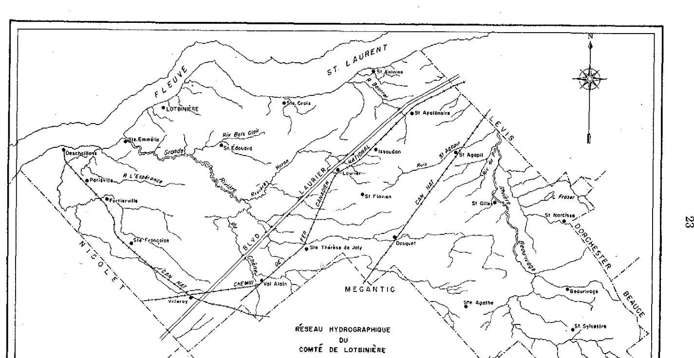
RÉSEAU HYDROGRAPHIQUE DU COMTÉ DE LOTBINIÈRE
l'eau n'est pas entièrement étrangère à celle des formations géologiques sous-jacentes. En effet, on observe fréquemment que maints dépôts graveleux ou de tills remaniés, tantôt acides, tantôt calcaires, correspondent ordinairement à la présence, dans le voisinage immédiat, de formations lithologiques tantôt acides ou tantôt calcaires. Évidemment, à la cause de la nature généralement très variable de ces dépôts, il est impossible de déterminer avec précision la proportion et l'influence relatives des divers éléments lithologiques des sols, sans avoir recours à des études pétrographiques en laboratoire. Des travaux de recherche s'avèrent nécessaires en ce domaine.
Les formations géologiques du comté de Lotbinière sont très variées. Le caractère lithologique de celles-ci et leur distribution et étendue apparaissent sur la carte géologique schématique de la figure 5.
Géologie des matériaux du sol ou dépôts superficiels
D'après les géologues, la région à l'étude a été glacée et une très forte proportion du territoire a été subséquemment submergée par la Mer Champlain.
Ces deux événements géologiques ont donné à la région la plupart des traits qui caractérisent son paysage. En d'autres termes, ces deux événements ont joué un rôle primordial dans la mise en place, la composition, la formation ou l'allure topographique du matériel parental aux dépens duquel les sols se sont formés.
La Glaciation
A une époque peu reculée, soit au pléistocène, d'immenses glaciers, tels ceux qui existent encore de nos jours au Groenland, ont envahi la province de Québec, y compris la région à l'étude. Ceux-ci ont transporté de grandes quantités de roches et en ont trituré une forte proportion pour former le till, matériau non stratifié et hétérogène, constitué de sable, de limon, d'argile, de roches et cailloux anguleux fréquemment striés. Le till proprement dit se rencontre dans le sud du comté, soit en pays appalachien. Il représente environ 9 p. 100 de l'étendue totale de la région (voir figure 6, n° 10).
Un réchauffement subséquent du climat amena ensuite la fonte et le retrait graduel du glacier vers le nord. Les eaux de fusion donnèrent naissance à d'énormes torrents, à la périphérie et parfois même à l'intérieur des glaciers. Sous l'action de ces torrents glaciaires, parfois comparables à des fleuves, d'importants dépôts graveleux ont été transportés et étalés dans les vallées, donnant naissance à des plaines de délavage (outwash plains), telles celles que l'on peut voir entre St-Gilles et St-Patrice-de-Beaurivage et entre Dosquet et St-Agathe. (Voir figure 6, n° 3). Parfois, les eaux de fusion ont entraîné des sables et des graviers dans les crevasses ou fissures du glacier (ice-contact deposits). Fréquemment, des pierres ou des blocs, de toute taille, se sont entremêlés aux sables et aux graviers à la suite de l'effondrement des parois du glacier en retraite. C'est ainsi que vraisemblablement ont pris naissance ces protubérances sableuses et graveleuses, de forme conique ou en dos d'âne, que l'on appelle "kames" et "eskers". Ces dépôts, parfois trop secs pour l'agriculture, constituent néanmoins, au point de vue économique, des sources d'approvisionnements importantes de gravier et de sable. Comme ces dépôts n'occupent que 2 p. 100 à peine de l'étendue totale du comté de Lotbinière, ils ont été inclus avec les tills de loam. (Voir figure 6, n° 10).
Ajoutons que ces dépôts graveleux, de même que ceux qui ont été étalés dans les plaines de délavage précédemment mentionnées, ont parfois établi des barrages. A la faveur de ces barrages, des lacs et des lagunes se sont formés. Par la suite, ceux-ci ont été plus ou moins envahis par la végétation et comblés peu à peu par des dépôts organiques (tourbières de sphaignes, etc.). Ces dépôts couvrent une assez forte proportion de l'étendue totale de la région, soit 12 p. 100 environ.
La Mer Champlain
A la fin de la glaciation, le niveau des terres était plus bas que celui d'aujourd'hui. Une très forte proportion des terres de la région, soit celles situées au-dessous de la cote d'altitude de 550 ou 600 pieds, étaient submergées par un bras de l'Atlantique, véritable mer intérieure que les géologues ont appelée "Mer Champlain". C'est dans les eaux profondes et tranquilles de cette mer que se sont floculées et sédimentées les fines argiles riches en coquillages marins, tandis qu'à des altitudes supérieures, soit aux cotes d'altitude de 350 à 400 pieds environ, les eaux plus agitées de cette même mer établissaient des plages de sable, telles celles de Villeroy et des paroisses environnantes, ou des cordons et des terrasses graveleuses, tels ceux de St-Apollinaire et de la protubérance de St-Flavien. (Voir figure 6, nos 1, 2, 4). Notons que certaines flèches de sable ont été reprises et fortement remaniées par le vent, pour donner les nombreuses dunes de sable que les habitants appellent les "crêtes de sable". (Voir figure 6, n° 5). L'ensemble des étendues sableuses représente environ 34 p. 100 de la superficie totale du comté et celle des graviers, environ 4 p. 100.
Fait particulier au comté de Lotbinière, les argiles fines homogènes Champlain ne se retrouvent plus à la surface, comme dans la Plaine de Montréal et dans le comté limitrophe de Nicolet; mais, aux rares endroits où elles se rencontrent, comme à St-Jean-Deschaillons, Leclercville, St-Louis-de-Lotbinière, etc., elles sont recouvertes de matériaux tantôt sableux, tantôt de loam argileux. (Voir figure 6, nos 4 et 6). Les dépôts de loam sur argile occupent environ 5 p. 100 de la superficie du comté.
Les seules argiles du comté proviennent d'un certain triage de till argileux (Voir figure 6, n° 8) ou de la désagrégation "in situ" des schistes argileux d'Utica-Lorraine. Fait à noter, ces derniers dépôts argileux sont situés à des cotes d'altitude de 200 et 250 pieds environ et sont relativement minces sur roc. Leur caractère quasi-résiduel nous incite à croire que l'aire qu'ils occupent, en bordure du fleuve, a été le théâtre d'une érosion très active au cours du retrait des eaux de la Mer Champlain. L'emplacement de ces dépôts d'argile est indiqué par la figure 6, n° 7. Ils représentent 5 p. 100 environ de la superficie du comté.
Ajoutons enfin la présence, à des cotes d'altitude variant de 250 à 400 pieds, d'un till pierreux, sableux et gréseux. A en juger d'après leur mauvais calibrage, les matériaux de ce till auraient été faiblement remaniés par les eaux de la Mer Champlain. Les matériaux de till remanié et gréseux occupent environ 11 p. 100 de la superficie totale du comté. Une bande assez continue d'une longueur de 9 milles se rencontre entre St-Agapit et Dosquet, le long de la voie ferrée et de la route nationale.
Le tableau 8 donne la nature, la composition, la topographie, l'abondance de pierres des principaux matériaux géologiques (roches-mères) ainsi que la nature du substratum géologique.
CLASSIFICATION, MORPHOLOGIE ET GENÈSE DES SOLS
Méthodes de travail
Les sols sont des entités biologiques distinctes, et leur classification doit être basée sur leurs caractéristiques, telles qu'elles apparaissent à l'examen minutieux et comparatif de nombreux profils de sols.
L'étude du profil nous renseigne, non seulement sur les facteurs qui ont présidé ou qui guident l'évolution des sols, mais nous fournit aussi des indications précieuses sur leur valeur agricole intrinsèque.
Le levé pédologique du comté de Lotbinière a été effectué sur une carte topographique du ministère de la Défense nationale, dont l'échelle était de 1 pouce au mille linéaire ou 1:63,360 millième.
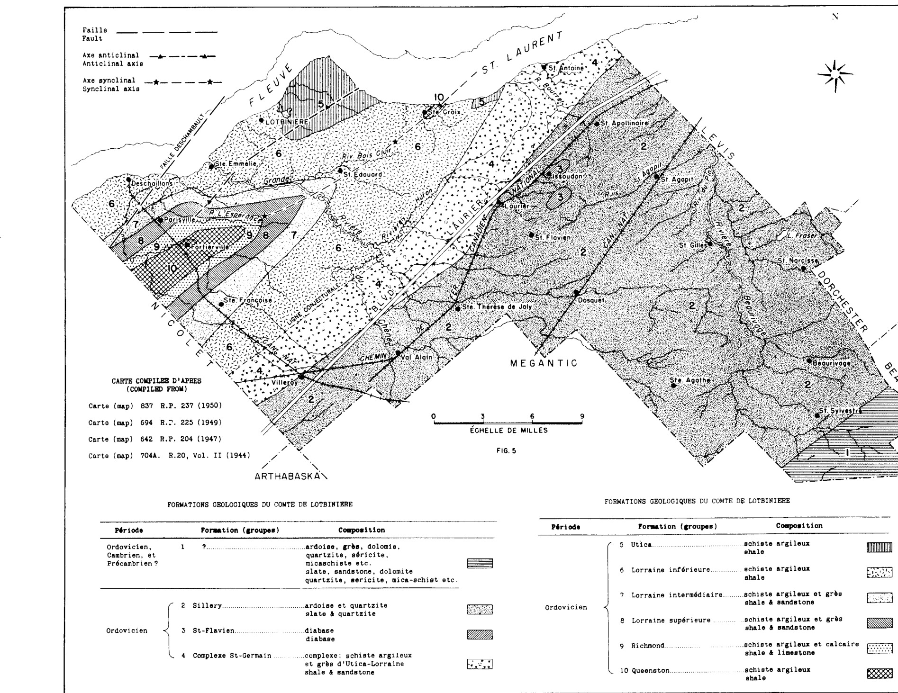
FIG. 5 - FORMATIONS GEOLOGIQUES DU COMTE DE LOTBINIERE
FORMATIONS GEOLOGIQUES DU COMTE DE LOTBINIERE
Période
Formation (groupes)
Composition
Ordovicien, Cambrien, et Précambrien ?
1
?
ardoise, grès, dolomie, quartzite, séricite, micaschiste etc. slate, sandstone, dolomite quartzite, sericite, mica-schist etc.
Ordovicien
2
Sillery
ardoise et quartzite slate & quartzite
3
St-Flavien
diabase diabase
4
Complexe St-Germain
complexe: schiste argileux et grès d'Utica-Lorraine shale & sandstone
FORMATIONS GEOLOGIQUES DU COMTE DE LOTBINIERE
Période
Formation (groupes)
Composition
Ordovicien
5
Utica
schiste argileux shale
6
Lorraine inférieure
schiste argileux shale
7
Lorraine intermédiaire
schiste argileux et grès shale & sandstone
8
Lorraine supérieure
schiste argileux et grès shale & sandstone
9
Richmond
schiste argileux et calcaire shale & limestone
10
Queenston
schiste argileux shale
TABLEAU 8
MATÉRIAUX GÉOLOGIQUES OU DÉPÔTS SUPERFICIELS DU COMTÉ DE LOTBINIÈRE
Sortes de dépôts
Composition, texture
Topographie
Pierres
Matériel sous-jacent
Graviers assortis…
Loam sablo-graveleux calcaire (Utica-Lorraine)
Barres et cordons, ondulés à vallonnés
Cailloux arrondis et sub-arrondis
Till ou roc
Graviers assortis…
Loam sablo-graveleux, acide; grès, schistes, ardoises d'Utica-Lorraine et de Sillery
Cordons, terrasses, ondulés, vallonnés
Cailloux émoussés, plats et arrondis
Till ou roc
Sables assortis…
Sable et loam sableux, acide; grès, ardoises Li-thologie: variée
Plaine de délavage lég. ondulée, cordons
Lits de cailloux arrondis et plats, émoussés
Gravier Matériel appalachien
Sables assortis…
Sables grossiers, loam sableux, acide; quartz, granit et ferro-magnésiens
Plages unies à lég. ondulées
Rares ou avec blocs erratiques: laurentiens
Till, roc ou argile Champlain
Sables éoliens…
Sables fins profonds, mat. laurentiens
En dunes
Pas de pierres
Till ou roc
Loams…
Loam moy. acide
Unie à lég. ondulée
Très rares
Till, argile, argile limoneuse
Argiles…
Argiles schisteuses acides parfois calcaires
Ondulée
Pas de pierres
Roc: Schistes argileux d'Utica
Till remanié…
Loam, loam argileux, calcaire
Ondulée
Blocs erratiques, rares
Till sur roc: Calcaire Lorraine etc.
Till remanié…
Sables, loam sableux, acide; grès, ardoises
Lég. à fort. ondulée
Pierres nombreuses, anguleuses, un peu émoussées
Till ou roc: complexe St-Germain, Sillery
Till…
Loam, acide; ardoises, micaschistes
Montueuse, fort. vallonnée
Nombreux blocs et cailloux
Roc, ardoise
Dépôts organiques…
Marais (peat) t. noire (muck)
Dépressions et cuvettes
Pas
Till ou roc, acide ou calc.
La méthode habituelle de procéder consistait à parcourir en automobile ou à pied suivant le cas et les possibilités d'accès, les routes, sentiers et divers chemins de ferme du comté. Des arrêts fréquents furent faits pour y creuser des fosses suffisamment larges et profondes afin de permettre l'identification et l'étude du profil. Ce dernier, comme on le sait, est une coupe verticale de la roche-mère à la surface du sol permettant de voir tous les divers horizons du sol. Généralement, on observe la roche-mère à moins de 3 pieds. Dans maints cas, des coupes naturelles ou artificielles, telles celles le long des rivières et dans les gravières, nous permettaient d'étudier le substratum à de grandes profondeurs.
Les diverses observations ou études ont porté surtout sur les caractéristiques des profils de sols, telles: la texture, la réaction, la couleur, l'épaisseur, la structure etc., des divers horizons et aussi sur le drainage, le relief, la végétation naturelle, les plantes cultivées et leur adaptation aux divers sols sous différents modes de culture et d'aménagement. Un grand nombre d'échantillons de sols furent prélevés et apportés au laboratoire pour analyse. La localisation des échantillons de sols recueillis et les résultats obtenus à l'analyse, sont rapportés dans un tableau qui apparaît à la fin du présent rapport.
Morphologie et genèse des sols
Les sols sont des individus biologiques grandement influencés par les conditions de l'environnement. Il y a un grand nombre de facteurs pédologiques qui peuvent influencer les sols, mais les principaux facteurs, dits génétiques ou pédogénétiques, sont: 1° le climat, considéré au double point de vue de la température et de l'humidité; 2° les micro-organismes et la végétation, qui fournissent la
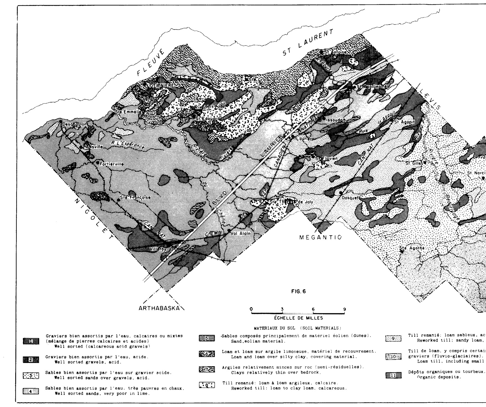
FIG. 6
0 3 6 9
ÉCHELLE DE MILLES
MATÉRIAUX DU SOL (SOIL MATERIALS)
Graviers bien assortis par l'eau, calcaires ou mixtes (mélange de pierres calcaires et acides) Well sorted (calcareous acid gravels)
Graviers bien assortis par l'eau, acide. Well sorted gravels, acid.
Sables bien assortis par l'eau sur gravier acide. Well sorted sands over gravels, acid.
Sables bien assortis par l'eau, très pauvres en chaux. Well sorted sands, very poor in lime.
Sables composés principalement de matériel éolien (dunes). Sand, eolian material.
Loam et loam sur argile limoneuse, matériel de recouvrement. Loam and loam over silty clay, covering material.
Argiles relativement minces sur roc (semi-résiduelles). Clays relatively thin over bedrock.
Till remanié : loam à loam argileux, calcaire. Reworked till: loam to loam clay, calcareous.
Till de loam, y compris certaines petites étendues de graviers (fluvio-glaciaires). Loam till, including small fluvio-glacial gravel areas.
Dépôts organiques ou tourbeux. Organic deposits.
matière organique et confèrent la “vie” au sol; 3° la roche-mère ou les matériaux géologiques variés, qui, par leur décomposition, libèrent les éléments minéraux nécessaires à la nutrition des plantes; 4° le relief et le drainage, lesquels influencent la température et le régime hydrique des sols et produisent divers micro-climats pédologiques; 5° l'âge, c'est-à-dire la durée ou le nombre d'années qui se sont écoulées depuis la mise en place des matériaux géologiques; et enfin, 6° l'homme, dont l'emprise sur les éléments de la nature est indéniable et peut modifier parfois considérablement les conditions du milieu sol.
L'influence de ces divers facteurs, se reflète généralement dans les caractéristiques des profils de sols de la région à l'étude. Là où l'influence des facteurs génétiques est relativement uniforme, les sols montrent des caractéristiques semblables. Par ailleurs, là où une combinaison donnée des facteurs génétiques varie d'une manière significative, les caractéristiques des profils de sols montrent des différences marquées et donnent des sols différents.
Mentionnons toutefois que l'importance de l'un ou l'autre des facteurs génétiques, dans une combinaison donnée, est relative et n'a pas toujours la même signification. Par exemple, le relief a une influence considérable dans la différenciation des sols formés à même un matériel très compact, tandis qu'il perd de son importance lorsque ceux-ci se sont développés à même un matériel poreux et perméable tel le gravier. En d'autres termes, on pourra parfois observer un podzol et un sol tourbeux sur une même pièce de terre, tandis que l'on observera uniquement le podzol sur une autre grande étendue.
Les grands groupes de sols1 (Great Soil Groups)
Afin de faciliter l'interprétation et l'étude comparative des sols d'un comté, d'une province, d'un pays, voire du monde entier, les pédologues ont établi, au cours des années, un certain nombre de “grands groupes de sols”.(1) Ces derniers, comme l'indique leur nom, groupent, au point de vue taxonomique, des ensembles de sols (types et séries) dont les caractéristiques majeures sont semblables. Les principaux grands groupes de sols du comté sont les suivants: les podzols, les bruns podzoliques, les gris brun podzoliques, les bruns forestiers, les ground-water podzols, les gleys gris foncé, les sols organiques, les sols alluvionnaires et les sols lithosoliques.
Le podzol typique, comme le fait voir la figure 7, possède une couche superficielle (horizon A0) de matières organiques de coloration noire et peu ou pas mélanisée, c.-à.-d. dans lesquelles les matières minérales ne sont pas incorporées à l'humus. Immédiatement sous cette couche, on observe un horizon gris cendré, appelé A2, qui a perdu la presque totalité du fer, de l'alumine et des éléments basiques nécessaires à la nutrition des plantes, notamment le calcium et le magnésium. C'est l'horizon le plus décoloré et le plus appauvri du profil. Il est parfois blanc comme neige. Au-dessous de ce dernier horizon, vient ensuite un horizon d'accumulation (B21) contenant des sesquioxides de fer et d'alumine et de l'humus provenant des horizons supérieurs. Notons que cet horizon d'enrichissement en éléments ferrugineux et humiques est généralement grandement dépourvu de calcium et de magnésium, parce que ceux-ci ont été entraînés au bas des pentes et dans les rivières, par les eaux de drainage. Ceci explique la grande acidité du podzol.
Dans la région à l'étude, les podzols sont bien développés et les horizons d'appauvrissement (A21) et d'accumulation (B21) sont nettement visibles. Ce dernier est parfois cimenté en une couche dure appelée “Ortstein”. Dans certaines parties du comté, les podzols ont des horizons d'appauvrissement (A22) et
1 L'expression “grands groupes de sols” comme unité taxonomique, remplace ici celle de “types génétiques” déjà utilisée par Baril dans des travaux antérieurs. Cette dernière n'est pas aussi précise et est abandonnée ou n'a jamais été utilisée par maints pédologues européens. Le “type génétique” réfère plutôt à une “sorte de profils” et l'expression peut fort bien s'employer au niveau du type, de la série, de la famille etc. De plus, ajoutons que la subdivision des grands groupes de sols en “sols zonaux”, “sols intrazonaux” et “sols azonaux” est impropre et désuète. Le lecteur voudra bien en tenir compte.
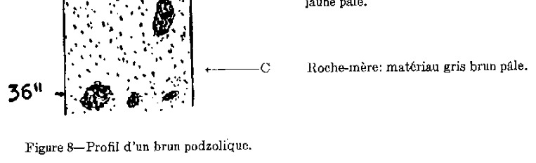
Figure 7 — Profil du podzol.
A00Litières de feuilles.
A0Débris de matières organiques brun très foncé et semi-décomposées.
A2Horizon lessivé, décoloré, cendreux et très acide.
B21Horizon d'accumulation maximum : humus, fer, alumine; t. acide.
B22Horizon d'accumulation des sesquioxydes de fer et d'alumine; coloration brun jaune.
B3Horizon de transition, teinte pâle.
CRoche-mère : matériau gris, gris brun pâle.
Figure 8 — Profil d'un brun podzolique.
A00Litières de feuilles.
A0Débris de matières organiques noires à brun très foncé.
Horizon lessivé (A2) parfois présent, discontinu.
B21Horizon d'accumulation et/ou de weathering “in situ”, peu développé. Coloration brune à brun rouge. Très acide.
B22Horizon d'accumulation et/ou de weathering “in situ”. Plus pâle que le précédent. Changement graduel de la couleur.
B3Horizon de transition. Coloration brune à brun jaune pâle.
CRoche-mère : matériau gris brun pâle.
d'accumulation d'humus et des sesquioxydes (B22) particulièrement développés, qui ont fait l'objet de séries différentes de sols. Citons, par exemple, les séries des Crètes, Villeroy et Vien. Les autres séries, appartenant aux podzols communs, sont les suivantes: St-Nicholas, St-André, St-Antoine, Beaurivage, Sorel, Ste-Sophie, Deschaillons, Dosquet, Palmer, Leeds et Ste-Marie. Cette dernière série n'est pas aussi bien drainée que les autres séries précédemment mentionnées.
Le brun podzolique typique, comme le fait voir la figure 8, possède généralement un horizon cendré ou d'appauvrissement (A2) plutôt mince et discontinu. L'horizon d'accumulation (B21), est moins coloré que celui du podzol et généralement plus friable. Parfois, cet horizon présente une certaine compacité ou induration et on lui donne le nom d'"Orterde", par opposition à "Ortstein", lequel est l'horizon cimenté (B21) de certains podzols. D'une manière générale, le brun podzolique est un podzol moins bien développé. Le comté de Lotbinière compte très peu de sols bruns podzoliques, et les quelques représentants suivants montrent parfois les caractéristiques du podzol v.g.: De l'Ail, Woodbridge, Tilly, des Orignaux.
Le gris brun podzolique, comme le montre la figure 9, possède un horizon d'humus (A1) minéralisé. Immédiatement au-dessous et affectant parfois la forme d'entonnoirs, on observe un horizon d'appauvrissement (A2) de teinte brun pâle, lequel surmonte un horizon (B2) riche en colloïdes argileux. Ce dernier épouse les contours sinueux de l'horizon A2 et s'en distingue, non seulement par sa texture plus fine, mais par sa structure mieux développée. Les agrégats nuciformes s'effritent assez facilement, sous la pression des doigts. La réaction de la surface est acide, tandis que celle de l'horizon B est presque neutre. La roche-mère est fortement calcaire et réagit violemment au contact de l'acide chlorhydrique dilué. Les séries Ste-Philomène et Ste-Hélène appartiennent à ce type génétique. Cette dernière série, probablement à cause d'une teneur moins élevée en carbonates actifs que celle des sols de la série Ste-Philomène, montre des signes évidents de dégradation vers le podzol (v.g. apparition de l'horizon A2 du
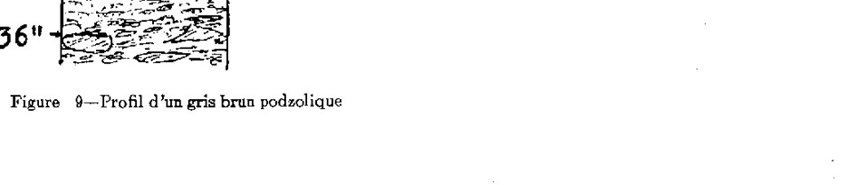
Figure 9.—Profil d'un gris brun podzolique
-A1
Horizon d'humus doux et minéralisé, brun très foncé à brun gris foncé.
-A2
Horizon lessivé de coloration gris brun pâle, sinueux, formant des langues irrégulières.
-B2
Horizon textural ou plus argileux que les horizons supérieurs ou inférieurs; brun foncé, structure polyédrique à nuciforme peu développée.
-C
Roche-mère : matériau calcaire de coloration gris brun clair. Effervescence vive avec HCL dilué.
podzol, voir description de ce profil). Dans ce cas, on a des profils superposés : podzol/gris brun podzolique. Les travaux du Dr. P. C. Stobbe (11) expliquent la genèse de sols semblables.
Le brun forestier s'apparente au gris brun podzolique par la nature calcaire de sa roche-mère, mais en diffère par l'absence d'horizon d'appauvrissement (A2) et d'enrichissement (B2) en colloïdes argileux. L'horizon superficiel (A1) est constitué d'humus bien minéralisé et la coloration brune de l'horizon B pâlit graduellement avec la profondeur. La réaction de la surface est faiblement acide ou calcaire, voir figure 10.
Dans la région à l'étude, il y a très peu de sols bruns forestiers et la seule série de ce groupe est celle d'Henryville.
Remarquons que les bruns forestiers et les gris brun podzoliques se sont développés à partir de roches-mères calcaires, tandis que les podzols et les bruns podzoliques dérivent de matériaux acides. Il appert donc que, sous nos conditions de fortes précipitations et de faible évaporation, la présence de calcaires actifs soit essentielle à la formation de types de sols appartenant aux gris brun podzoliques et aux bruns forestiers. En outre, comme le laisse voir la lecture détaillée du profil des sols de la série Ste-Hélène, certains gris brun podzoliques se détériorent et montrent déjà en surface certaines caractéristiques du podzol. En d'autres termes, comme l'a démontré le Dr. Stobbe (12) une décalcification progressive du gris brun podzolique favorise à un moment donné l'apparition du podzol. Ce même auteur a même démontré que les différents stades d'évolution des sols fortement calcaires, en supposant suffisamment de temps, sont les suivants: brun forestier, gris brun podzolique, brun podzolique et podzol. Des études pédogénétiques plus poussées corrélativement avec la végétation permettraient de mieux saisir le nœud du problème dans le comté de Lotbinière.
Les quatre grands groupes précédemment mentionnés, à savoir, le podzol, le brun podzolique, le gris brun podzolique et le brun forestier se sont formés
A1
Horizon d'humus doux et minéralisé, brun foncé.
B2
Horizon coloré en brun, très peu ou pas d'accumulation.
B3
Horizon de transition. Changement graduel de la coloration brune à celle d'un brun plus pâle. Réaction neutre ou basique.
C
Roche-mère: matériau calcaire de coloration gris brun pâle. Effervescence vive à l'HCl dilué.
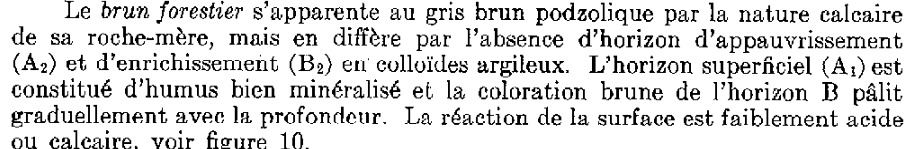
Figure 10—Profil d'un brun forestier.
sous des conditions de bon drainage. Il y a, par ailleurs, dans le comté de Lotbinière une forte proportion de sols qui se sont formés sous des conditions de mauvais drainage.
En dépit du fait que les conditions de drainage soient grandement améliorées aujourd'hui, et qu'elles favorisent la culture, à des endroits où les sols contenaient beaucoup d'eau, il est à remarquer que les caractéristiques de profils dues au mauvais drainage restent encore visibles. En effet, le profil de ces sols est généralement moins coloré à la partie supérieure et la coloration brune ou rouille qui s'y est parfois développée est distribuée inégalement et se présente sous l'aspect de taches de rouille appelées "mottling". Les grands groupes de sols formés sous de telles conditions de drainage sont les suivants : le ground-water podzol, le gley gris foncé, les sols organiques et les sols alluvionnaires.
Le ground-water podzol,(1) comme son nom l'implique, est un podzol qui a été influencé dans son développement par la présence permanente ou saisonnière d'une nappe d'eau élevée. Il possède, comme le podzol, un horizon (A2) et un horizon (B) d'accumulation des sesquioxydes de fer et d'alumine. Ce dernier horizon ou ses subdivisions, diffèrent du vrai podzol par leurs taches de rouille et leurs teintes de gris et de jaune pâle, lesquelles indiquent un degré d'oxydation moins prononcé. À cause de la forte proportion des sols de texture sableuse et des mauvaises conditions de drainage, la région à l'étude compte beaucoup de ground-water podzols. Dans les parties les plus à l'ouest, notamment dans les paroisses de Villeroy, de Vien et St-Janvier-de-Joly, le ground-water montre des horizons lessivés et d'accumulation d'humus plus développés que ceux de la série déjà connue dans la Plaine de Montréal (v.g.: St-Jude). C'est pour cette raison que la série Vien a été établie, pour représenter certains "ground-water podzols" plus développés. Les séries appartenant au ground-water podzols sont les suivantes: St-Jude, St-Amable, Vien, St-Sylvère, Raimbault et Des Pins. De plus, mentionnons que l'ensablement en surface de certaines séries, reconnues pour leur texture argileuse ou de loam argileux, est suffisant dans la majorité des cas pour provoquer l'apparition de l'horizon lessivé (A2) en surface. Citons comme exemples le loam Lévrard et celui de Neubois.
Enfin, mentionnons que tous les ground-water podzols dérivés de sables deltaïques, dans le comté de Lotbinière, sont généralement plus podzolisés que ceux provenant de till sableux remanié par l'eau.
Le gley gris foncé, voir figure 11, est composé d'un horizon d'humus (A1) bien minéralisé, de coloration grise à l'état plutôt sec, et d'un ou plusieurs horizons (G) bigarrés et tachetés de rouille (mottling). Contrairement au ground-water podzol, il ne possède pas d'horizons lessivés ou d'accumulation nettement marqués. De plus, la texture est argileuse ou limoneuse au lieu d'être sableuse et la réaction du sous-sol et de la roche-mère est faiblement acide ou basique, au lieu d'être acide, comme celle du ground-water podzol. Il occupe généralement la plaine unie et les terrains peu accidentés. Une fois drainés et bien aménagés, les gleys gris foncé sont considérés comme les sols les plus productifs de la région, pour la culture mixte et l'industrie laitière. Les séries: Bedford et Lévrard appartiennent à ce grand groupe de sols. Ajoutons que les séries Mawcook et Joly sont de transition, entre les gleys gris foncé proprement dits et les sols organiques minces. D'une manière générale, les gleys gris foncé de la région montrent une minéralisation de l'humus moins poussée que celle des gleys gris foncé de la Plaine de Montréal. Ce phénomène est particulièrement visible aux endroits où il y a eu un peu d'ensablement en surface et là où le matériau fin est fortement acide.
Les sols organiques proviennent de l'accumulation de matières organiques dans les anciens lacs, les marais ou les endroits déprimés et mal drainés. Ils
1 L'expression "podzol à gley" utilisée pour la première fois par Baril (1948) dans "Études pédologiques des sols du Québec" traduisait "Ground-water podzol". Nous reconnaitsons aujourd'hui que l'expression "podzol à gley" ne traduit pas exactement celle de "Ground-water podzol".
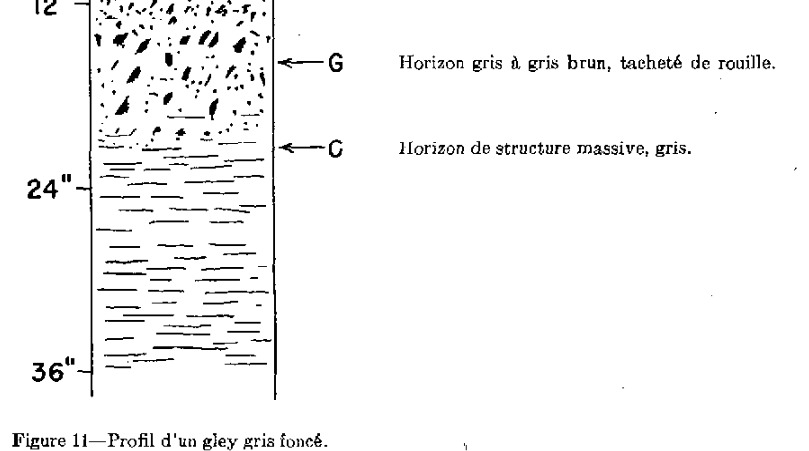
Figure 11 — Profil d'un gley gris foncé.
varient dans l'épaisseur de la couche de matières organiques sur le sol minéral et dans leur degré de décomposition. Ils ont été subdivisés en deux groupes, à savoir: les sols organiques proprement dits et les sols organiques minces.
Les sols organiques proprement dits, dont l'épaisseur dépasse généralement 3 pieds, comprennent les tourbières (de sphaignes) et les "terres noires". Ces dernières sont bien décomposées, c.à.d. que les matières organiques ont été transformées en humus et que les résidus des plantes originelles ne peuvent être identifiés; tandis que, dans les tourbières, on distingue encore les résidus de mousse de sphaignes, de carex et de laiches.
Les sols organiques, dits minces, sont ceux dont l'épaisseur de l'humus est de 18 pouces et moins. Ils englobent les sols organiques anciennement dénommés "semi-tourbeux" et aussi certains sols organiques portant un nom de série, à savoir: St-Samuel, Fortierville, Platon, Mawcook et Brompton. La description détaillée de ces dernières séries est donnée plus loin dans le présent rapport.
En ce qui concerne les sols organiques minces non sériés, mentionnons qu'ils reposent sur un sol minéral de teinte grise et plus ou moins tacheté de rouille, à cause de très mauvaises conditions de drainage (waterlogging) et du manque d'aération. Les divers sols organiques couvrent une forte superficie du comté de Lotbinière, soit 13 p. 100 ou 64,000 acres environ.
Enfin, mentionnons les deux grands groupes de sols, dont les profils sont peu différenciés en horizons: les sols alluvionnaires et les sols lithosoliques. Les premiers sont de déposition récente, et les divers agents pédogénétiques n'ont pas eu suffisamment de temps pour produire une différenciation marquée du profil; ils montrent fréquemment des couches de textures différentes, lesquelles ont été déposées au cours d'inondations saisonnières. Les seconds, c.à.d. les sols lithosoliques, sont généralement très minces sur roc et montrent un horizon A ou A et B peu développés. La qualité de leur humus, toutefois, indique une tendance vers le podzol.
Séries, types et phases de sols
Les sols du comté, comme le fait voir la légende, ont été classés en phases, types et séries de sols. Ces dernières ont été groupées selon leur drainage. Lorsque plusieurs séries, dérivant d'une roche-mère semblable, montrent des différences de profil dues à des différences de drainage (souvent liées au micro-relief), on dit que ces séries forment une “catena” (du mot latin qui signifie: chaîne). La légende signale plusieurs chaînes ou séquences de sols. Celles-ci peuvent être ou ne pas être associées géographiquement. (√) Il peut donc arriver que deux membres caténaires (séries dans ce cas) soient localisés en des points parfois éloignés du comté.
Par définition, les sols d'une même série (√) sont ceux qui possèdent en commun des horizons génétiquement semblables et qui sont issus d'une même roche-mère. De plus, les caractéristiques du profil, sauf pour la texture de la surface, sont à peu près identiques. La série porte généralement le nom de l'endroit où elle a été identifiée pour la première fois, v.g. Série Dosquet.
Le type de sol, subdivision de la série, désigne un individu bien caractérisé, quant à la texture de son profil en surface et à ses autres caractéristiques morphologiques et physico-chimiques. Pour toutes fins pratiques, c'est l'unité cartographiée; elle correspond à la plus petite unité géographique et taxonomique. Cependant, le type de sol se subdivise parfois en phases, lesquelles expriment, quant aux caractéristiques du profil, des variations qui ont une importance au point de vue agricole, par exemple, la quantité de pierres en surface, la topographie, etc.
Le micro-relief occasionne parfois de nombreuses variations dans les sols, et lorsque celles-ci ne peuvent être convenablement distinguées sur une carte à petite échelle, le pédologue a recours au complexe. Il y a plusieurs sortes de complexes. Dans le comté, nous en avons utilisé deux: 1° Le complexe proprement dit, qui est un ensemble de séries ou de types de sols ne portant pas de nom particulier, mais étant indiqué sur les cartes par les symboles des différentes séries ou types de sols qui le composent; par exemple, Ty+Jy, pour indiquer une étendue renfermant un mélange d'argile Tilly et d'argile Joly. 2° Un complexe (dans ce cas synonyme de catena) désigné par un seul nom, comme s'il s'agissait d'une série unique, ce qui est contraire aux principes de la terminologie américaine; ainsi nous avons le nom de St-Amable (√) pour désigner l'ensemble des séries: Sorel, Ste-Sophie, St-Jude et St-Samuel. Lorsque les séries de sols proviennent d'une même roche-mère, mais diffèrent par leur drainage, on a une catena de sols, v.g. figure 12.
Retenons que toutes les limites de sols indiquées sur la carte n'ont pas la même signification. Certaines coïncident avec des accidents naturels du paysage d'une grande netteté et facilement observables; dans d'autres cas, la délimitation n'est marquée par aucun trait particulier du terrain et indique un passage graduel d'une série ou type de sol à un autre. En conséquence, certaines lignes de démarcations de sols sont approximatives.
Les différentes séries, types ou phases de sols sont mentionnés dans la légende ou clé de sols qui suit, et leur étendue approximative dans le comté apparaît au tableau 9.
(√) La catena de Milne (1936) ou l'association de Ellis (1932) comprennent des sols géographiquement associés. Aux États-Unis, on a restreint le terme “catena” pour inclure des sols issus d'une même roche-mère, mais non pas nécessairement associés géographiquement.
(√) Un résumé succinct des unités taxonomiques du système américain est donné dans: “Études pédologiques des sols du Québec”. (Baril, R.—1948).
(√) De toutes les séries de sols mentionnées dans ce rapport, celle de St-Amable est la seule dont le nom évoque une séquence ou une catena de séries de sols. On voudra bien en tenir compte, dans ce rapport.
92407—3
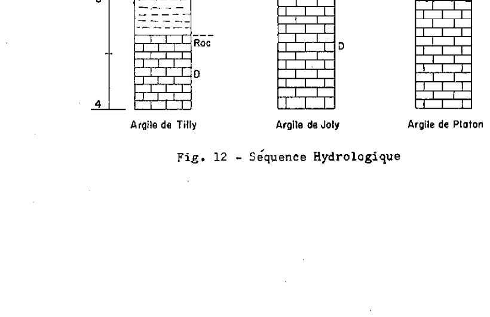
Fig. 12 — Séquence Hydrologique
Fl. St-LaurentPieds
Ao
A1
A2
B21
B22
C
Roc
D
Argile de Tilly
Ao
G1
G2
G3
C
Roc
D
Argile de Joly
Ao
G1
G2
Cg
Roc
D
Argile de Platon
TABLEAU 9
SUPERFICIES DES TYPES DE SOLS DU COMTÉ DE LOTBINIÈRE
Types de sols
Acres
%
Loam sableux fin de l'Ail
100
0.02
Loam sableux Beaurivage
53,813
11.35
Loam sablo-argileux Bedford
15,003
3.16
Argile Bedford
8,308
1.75
Argile mince Bedford
1,512
0.32
Loam limoneux et pierreux Brompton
2,385
0.50
Sable des Crètes
10,066
2.12
Loam sableux Deschaillons
2,048
0.43
Loam sablo-pierreux Dosquet
8,299
1.75
Loam argileux Fortierville
858
0.18
Loam Henryville
105
0.02
Argile Joly
7,542
1.59
Loam Leeds
2,050
0.43
Loam mince Leeds
19,369
4.08
Loam sableux ondulé Leeds
14,240
3.00
Loam limoneux Lévrard
3,360
0.71
Loam Lévrard
7,198
1.52
Loam sablo-pierreux Mawcook
16,318
3.44
Loam sablo-argileux Mawcook
8,839
1.86
Loam Neubois
2,822
0.59
Loam des Orignaux
11,241
2.37
Loam sablo-graveleux Palmer
1,755
0.37
Loam sablo-graveleux Palmer (Kames)
520
0.11
Loam sablo-pierreux des Pins
11,342
2.39
Argile Platon
5,537
1.17
Loam sablo-pierreux Raimbault
3,297
0.69
Sable fin Sorel
19,113
4.03
Argile Tilly
9,341
1.97
Sable fin Vien
37,678
7.95
Sable Villeroy
20,075
4.23
Loam Woodbridge
610
0.13
Sables St-Amable (catena)
12,467
2.63
Loam sablo-graveleux et pierreux St-André
1,000
0.21
Sable grossier loameux St-Antoine
12,568
2.65
Sable grossier loameux, graveleux St-Antoine
870
0.18
Loam sablo-graveleux St-Antoine
230
0.05
Loam sablo-graveleux Ste-Hélène
1,305
0.27
Loam sableux St-Jude
18,172
3.83
Loam sableux mince St-Jude
264
0.06
Loam sableux et rocheux St-Jude
2,832
0.60
Loam Ste-Marie
1,915
0.40
Loam sablo-graveleux St-Nicolas
3,515
0.74
Loam sablo-graveleux, mince St-Nicolas
1,202
0.25
Loam graveleux Ste-Philomène (Kars)
1,565
0.33
Sable St-Samuel
30,882
6.52
Sable loameux Ste-Sophie
6,097
1.28
Loam sablo-pierreux St-Sylvère
952
0.20
Sols organiques ou tourbeux
Terre noire bien décomposée
20,335*
4.29
Terre noire mince bien décomposée
1,541
0.32
Terre noire moyennement décomposée
6,410*
1.35
Tourbe grossière (composée de sphaignes principalement)
24,814*
5.23
Divers :
Affleurements rocheux
1,223
0.26
Alluvions non différenciées
15,321
3.23
Sols ravinés (matériau de Lévrard érodé)
140
0.03
Sols lithosoliques
4,081
0.86
Étendue totale cartographiée
474,445
100.00%
* Ces étendues comprennent aussi ce qu'on appelle les marais et certains terrains trop humides représentés sur la carte des sols par le signe 🪷
LÉGENDE DES SOLS
I.—SOLS DES TERRES BASSES DU ST-LAURENT (< 600 pi. approx.).
A. Sols provenant de matériaux assortis par l'eau.
a.—Graviers.
Gravier calcaire (roches Utica-Lorraine)
Drainage bon à excessif (GBP-BF) Loam graveleux Ste-Philomène (Kars)
Ph
Gravier mixte, i.e., constitué d'un mélange de roches calcaires et acides (grès, schistes, roches ignées, etc.)
Sables d'épaisseur variable (3 à 6 pi.), fortement podzolisés, plutôt grossiers, généralement jonchés de blocs erratiques et, généralement, reposant sur le till.
Drainage excessif (P) Sable des Crêtes (sols partiellement éoliens)
C
Drainage bon à modérément bon (P)
Sable VilleroyVy
Drainage imparfait (GWP-P)
Sable fin VienVi
c. — Loams ou loams limoneux.
Loam à loam sableux très fin.
Drainage modérément bon (P-BP)
Loam des OrignauxOr
Loam limoneux sur argile limoneuse.
Drainage imparfait (GGF-GWP-like)
Loam limoneux LévrardLv
Loam LévrardLvl
Drainage mauvais (SO)
Loam argileux FortiervilleFv
Loam sur argile ou sur argile limoneuse.
Drainage modérément bon à imparfait (P-GWP)
Loam NeuboisNe
d. — Argiles.
Argile provenant de schistes argileux d'Utica (sols semi-résiduels).
Drainage bon (BP-P)
Argile TillyTy
Drainage imparfait (SO-GGF)
Argile JolyJy
Drainage mauvais (SO)
Argile PlatonPn
B. Sols formés de tills divers plus ou moins remaniés par l'eau.
Till à texture de loam ou de loam argileux provenant des roches calcaires sous-jacentes (calc. de Lorraine?).
Drainage bon (BF)
Loam HenryvilleH
Drainage imparfait (GGF)
Loam sablo-argileux BedfordBd
Argile BedfordBda
Argile Bedford, phase minceBda-m
Till à texture de loam sableux acide, très remanié et provenant de grès et de roches ignées (matériaux laurentiens).
Drainage modérément bon à imparfait (P-GWP)
Loam sablo-pierreux St-SylvèreSyr
Till à texture de loam sableux provenant de roches ignées et de grès acides et/ou calcaires.
Drainage bon (P)
Loam sableux DeschaillonsDs
Drainage imparfait (GWP)
Loam sablo-pierreux RaimbaultRb
Till à texture de loam ou de loam sableux remanié et provenant d'un mélange de grès acides et/ou calcaires et de schistes brun rouge (formation de Sillery et du complexe St-Germain).
Drainage bon (P)
Loam sablo-pierreux DosquetDt
Drainage imparfait (GWP)
Loam sablo-pierreux des PinsPi
Drainage mauvais (SO)
Loam sablo-pierreux Mawcook.......................... Ma
Alluvions non différenciées............................ All
Sols ravinés (matériau de Lévrard érodé)................. Lv-r
Sols lithosoliques..................................... L
Grands groupes de sols
P
=
Podzol
GGF
=
Gley gris foncé (Dark Grey Gleisolic Soils)
BP
=
Brun podzolique
O
=
Sols organiques
GBP
=
Gris brun podzolique
SO
=
Sols organiques minces.
BF
=
Brun forestier
All
=
Sols alluvionnaires.
GWP
=
Ground-Water Podzol
L
=
Sols lithosoliques.
DESCRIPTION DES SOLS
L'ordre suivi dans la description de chacune des séries et autres unités pédologiques, qui suivent, est le même que celui qui a été adopté pour la légende des sols. (Voir page 42 et carte des sols incluse dans la pochette, à fin du rapport).
Nous traiterons d'abord des sols du comté qui appartiennent aux Basses Terres du St-Laurent, puis ensuite de ceux qui font partie des Hautes Terres Appalachiennes. Les sols situés dans les Basses Terres du St-Laurent comprennent deux groupes: 1° ceux dont les matériaux ont été mis en place par l'eau, et 2° ceux dont les matériaux proviennent d'un till glaciaire ayant subi un certain remaniement par l'eau. Les sols situés en pays Appalachien comprennent aussi deux groupes: 1° les sols de dépôts graveleux d'origine fluvio-glaciaire et 2° ceux qui proviennent de till proprement dit.
I — Sols des Basses Terres du Saint-Laurent issus de matériaux mis en place par l'eau
Les sols des Basses Terres du St-Laurent, issus de matériaux mis en place par l'eau, peuvent être subdivisés, au point de vue textural, en quatre groupes: 1° les sols graveleux, 2° les sols sableux, 3° les loams et les loams limoneux et 4° les sols argileux.
Notons que les sols graveleux du comté, à l'exception de ceux de la série Ste-Philomène, diffèrent de ceux de la Plaine de Montréal par leur lithologie et/ou par leur degré de podzolisation. D'une manière générale, les sols du comté de Lotbinière sont plus podolisés que ceux de la Plaine de Montréal.
Certaines séries de sols sableux de la Plaine de Montréal, telles celles de Sorel et de St-Jude, se retrouvent dans le comté de Lotbinière; avec cette différence que, du point de vue génétique, les horizons d'appauvrissement, A2, ainsi que les horizons d'accumulation de l'humus et des sesquioxydes de fer et d'alumine sont plus développés dans le comté de Lotbinière. Pour cette raison, certains sols sableux ont fait l'objet de séries distinctes, à savoir les séries des Crètes, Villeroy et Vien.
Il est intéressant de noter que les séries argileuses: Ste-Rosalie et Rideau, ne se retrouvent plus dans le comté de Lotbinière; leur extension maximum vers l'est semble confinée à quelques lambeaux, dans le comté de Nicolet.
Les sols graveleux
En prenant comme base leur lithologie et leurs caractéristiques de profil, les sols de texture graveleuse ont fait l'objet de cinq séries, savoir: 1° la série Ste-Philomène, sur gravier calcaire; 2° celle de Ste-Hélène, dérivant d'un mélange de gravier acide et calcaire; 3° celle de St-Nicolas, sur schistes et ardoises brun rouge de la formation Sillery; 4° celle de St-André, très variable, provenant d'un mélange de grès, de schistes et d'ardoises de Sillery, de coloration plutôt grise, et enfin, 5° celle de St-Antoine, constituée de gravier relativement fin d'Utica.
STE-PHILOMÈNE (1,565 acres)
Les sols Ste-Philomène se sont formés aux dépens de gravier, constitué principalement de calcaire de Lorraine. Ils occupent quelques coteaux graveleux, d'origine fluvio-glaciaire, dont le plus important est celui du rang St-Eustache, dans la paroisse de St-Louis de Lotbinière.
Les cordons graveleux sont légèrement à fortement vallonnés et on les rencontre à des altitudes variant entre 200 et 400 pieds au-dessus du niveau de la mer.
Les sols Ste-Philomène sont très bien et même excessivement drainés, à cause de la grande perméabilité du substratum graveleux.
La végétation arborescente, si l'on en juge par les rares boisés actuels, est composée principalement d'érable à sucre, auquel s'associent le tilleul, le frêne blanc, le bois-de-fer et le hêtre. En autant que les facteurs édaphiques peuvent influencer la nature du couvert forestier, les sols Ste-Philomène du comté de Lotbinière devaient supporter, à l'origine, un type d'érablière fortement apparenté à celui qui caractérise maints coteaux de till calcaire ou de dépôts fluvio-glaciaires de la Plaine de Montréal.
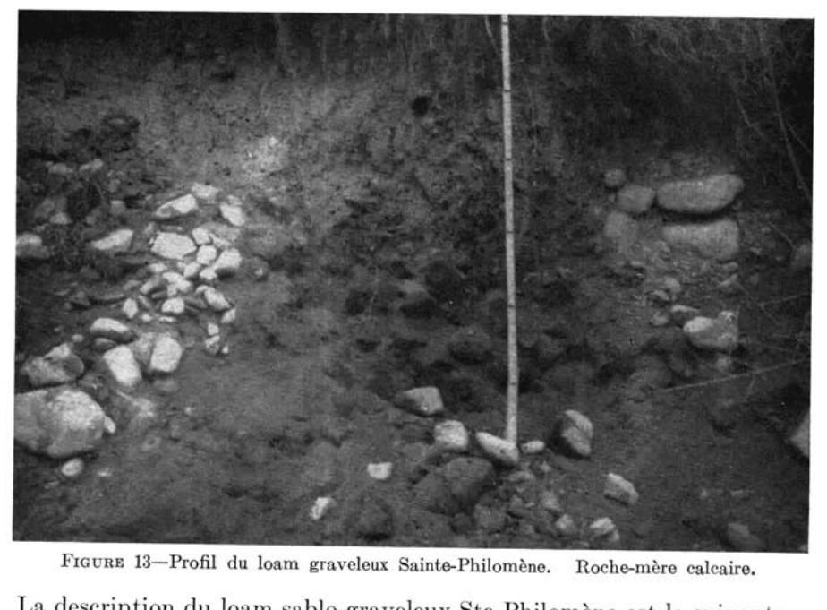
FIGURE 13.—Profil du loam graveleux Sainte-Philomène. Roche-mère calcaire.
La description du loam sablo-graveleux Ste-Philomène est la suivante :
Horizons
Épaisseurs (po.)
Description
A1
4″
Loam à loam argileux gris brun à gris brun foncé (10YR 4/2). Souvent pierreux. Structure granulaire bien développée. Consistance très friable. La teneur en sable ou gravier calcaire est variable et influence le pH, lequel varie de 4.8 à 7.5.
A2
4-28″
Loam sableux à graveleux de teinte brune à brun pâle, à l'état sec (10YR 6/2); structure particulaire. S'étend généralement en une bande fortement sinueuse et d'épaisseur variable; présente parfois, à la partie supérieure, un mince horizon A2 podzolique (profil double ou superposé, en formation). Plus ou moins graveleux; pH variable, généralement de 5.5 à 6.0.
B21
3-5
Horizon mal défini. Lorsque le sol est très acide, une coloration brun vif apparaît (7.5YR 5/6-5/8). Loam friable. Cet horizon indique plutôt l'évolution du gris brun podzolique vers le podzol; pH : 5.2-5.8.
B22
2-4
Horizon d'accumulation maximum des silicates argileux. Structure nuciforme bien développée, consistance ferme, mais friable. Cet horizon épouse les contours de l'horizon A2 (G.B.P.) Loam argileux brun à brun foncé (7.5YR 3/2-4/2); pH: 7.0-7.5.
Cca
Roche-mère: sable et gravier gris brun pâle, interstratifiés de cailloux calcaires arrondis et d'une certaine proportion de roches lignées (matériaux laurentiens). Le matériel donne une vive effervescence au contact de HCl dilué; pH : 7.5-8.3.
Le sol cultivé est généralement gris brun (10YR 4/2) à l'état sec, et contient parfois de nombreux cailloux calcaires arrondis. Dans ces cas, la réaction du sol en surface est toujours élevée (pH: 7.0 et plus). Étant donné que ces dépôts graveleux ont été érodés ou recouverts de minces dépôts deltaïques, lors du retrait des eaux, il s'ensuit que la texture des sols Ste-Philomène est nécessairement variable. Il nous a été impossible, à cause de l'échelle trop petite de la carte utilisée, de montrer toutes ces différences, qui peuvent avoir une certaine importance, pour l'utilisation de ces sols, spécialement pour certaines cultures horticoles.
Agriculture
Une certaine proportion des dépôts graveleux sert à la construction des routes. D'une manière générale, là où le sol n'est pas trop grossier, c'-à-d., trop pierreux, il se prête bien à la grande culture et aux cultures sarclées. Depuis un certain nombre d'années, on consacre une bonne étendue de ces sols aux cultures spécialisées, telles: maïs sucré, pomme de terre hâtive (Cobbler), fèves et pois à soupe. Notons que ces sols Ste-Philomène conviendraient bien à la culture de la luzerne et qu'ils n'ont à peu près pas été utilisés à cette fin.
Le potentiel de fertilité de ces sols est relativement élevé. Avec des applications modérées de fumier et d'engrais chimiques composés, ces sols peuvent donner, par les années normales, les rendements suivants: avoine 30-40 minots; orge, 30 minots environ; luzerne, 2 à 3 tonnes; trèfle et mil, 1-1½ tonne; maïs à ensilage, 10 à 14 tonnes.
STE-HÉLÈNE (1,305 acres)
Les sols Ste-Hélène se sont formés aux dépens de gravier mixte, c'est-à-dire constitué de roches calcaires et acides (grès, schistes, roches ignées). Ils occupent quelques faibles étendues dont la principale est dans la paroisse de St-Flavien.
La topographie est légèrement ondulée à vallonnée. La principale superficie affecte la forme d'une large terrasse, adossée au flanc sud de la protubérance de St-Flavien, constituée de roches ignées (diabases). L'altitude varie de 425 à 475 pieds au-dessus du niveau de la mer.
Les sols Ste-Hélène, comme ceux de Ste-Philomène, auxquels ils sont fortement apparentés, sont très bien drainés, à cause de la grande perméabilité du substratum graveleux.
La végétation arborescente est composée d'érable à sucre, de hêtre et de merisier, auxquels s'associent le sapin et l'épinette. Dans le sous-bois ou parterre végétal, le cornouiller du Canada et le maienthème abondent. Ce type d'érablière présenterait une certaine dégradation ou évolution vers la forêt coniférienne.
La description du loam sablo-graveleux Ste-Hélène est la suivante:
Horizons
Épaisseurs (po.)
Description (")
A0
½"
Horizon d'humus non minéralisé (type mor). Coloration brune (7.5YR 5/2) à sec; pH: 4.8.
A2(P)
1-2"
Horizon continu gris rose (7.5YR 6/2). Loam sablo-graveleux friable et poreux.
B21(P) ou A21(GBP)
5-7"
Loam sablo-graveleux jaune rougeâtre (7.5YR 6/6), friable, perméable, structure en miettes fines (crumb), pH: 5.1.
Horizon d'accumulation maximum des silicates argileux. Structure nuciforme assez bien développée, consistance ferme, mais friable. Loam sablo-graveleux à sablo-argileux brun à brun foncé, pH: 5.5.
B1(GBP)
1-3"
Horizon de passage de teinte un peu plus claire que le précédent.
C (GBP)
à 38" env.
Roche-mère: sable et gravier constitués de calcaire de Lorraine, de grès, de schistes et de roches ignées. Présente des lits plus ou moins caillouteux. Une forte proportion des roches donnent une vive effervescence au contact de HCL diluée; pH: 8.0.
(*) La lecture de ce profil fait voir la formation d'un podzol (néo-sol) sur un ancien gris brun podzolique. Ces cas rares présupposent, croyons-nous, une roche-mère dont la proportion des matériaux calcaires et acides, sous des conditions climatiques données, est critique, au point de déclencher un nouveau processus de formation du sol. Par ailleurs, le climat qui a favorisé la formation du gris-brun podzolique devait être plus doux celui que nous connaissons aujourd'hui.
Agriculture
Les sols Ste-Hélène sont consacrés presque entièrement à la culture mixte et à l'industrie laitière. On pourrait probablement utiliser avec avantage ces sols, pour certaines cultures spéciales, notamment celle du pommier et des petits fruits. Un certain éloignement des marchés et l'étendue plutôt restreinte de ce sol expliquent peut-être l'absence de ces cultures spéciales, sauf celle de la pomme de terre. Il s'y fait un peu de jardinage, pour les besoins immédiats de la famille.
A cause de leurs excellentes propriétés physiques, ces sols conviendraient à la culture de la luzerne, à condition d'y faire de bonnes applications de pierre à chaux.
Après choulage, fertilisation et apport de matières organiques, les rendements éventuels des principales récoltes de grande culture en sols Ste-Hélène sont légèrement inférieurs ou à peu près les mêmes que ceux que l'on obtient des sols Ste-Philomène.
St-Nicolas (4,717 acres)
Les sols St-Nicolas sont dérivés de gravier de schistes de Sillery, dont la coloration est brun rouge. A cause de leur couleur caractéristique, ces sols lithochromes St-Nicolas sont faciles à reconnaître. Ils ont fait l'objet d'un type: le loam sablo-graveleux St-Nicolas et d'une phase: le loam sablo-graveleux St-Nicolas, phase mince.
Le loam sablo-graveleux St-Nicolas (3,515 acres)
Ce type de sol est presque entièrement cantonné à l'extrémité est du comté, dans la paroisse de St-Apollinaire.
La topographie est celle d'une terrasse légèrement à fortement ondulée, dont les rebords accusent une pente abrupte.
A cause de la nature graveleuse du substratum, la perméabilité et les conditions de drainage sont excellentes et même excessives.
La végétation arborescente des rares boisés est composée de sapin et d'épinette. La présence d'érable à sucre, comme deuxième pousse, nous invite à croire que l'érablière devait dominer à l'origine. Dans les pâturages, on observe l'épervière orangée, l'oseille, et la danthonie.
La description du loam sablo-graveleux St-Nicolas est la suivante :
Horizons
Épaisseurs (po.)
Descriptions
Aoo
½
Litière de feuilles non décomposées.
Ao
1
Humus noir (5YR 2/1), à l'état sec, non minéralisé (type mor), pH: 3.5-4.0.
A2
½-2
Horizon d'éluviation plutôt mince, mais continu. Loam à loam argileux rouge pâle (2.5YR 4/2) ou gris rose (5YR 4/2) à l'état sec. Cette dernière coloration est masquée par celle des roches rouges et n'est visible qu'à l'état sec. Très friable, structure laminée, pH: 4.0. Horizon toujours plus argileux que les autres.
B2
5-8
Loam graveleux brun rouge foncé (2.5YR 3/4) à l'état sec. Structure en miettes peu développée; friable, poreux. Contient une forte proportion de fragments anguleux et plats (schistes rouges de Sillery); pH: 4.5.
B3C1
10-15
Sable graveleux brun rouge (5YR 4/4), sans structure, poreux. La coloration des schistes de Sillery est variable et est parfois grise ou gris jaunâtre. pH: 4.9.
C2
Roche-mère : gravier de schistes et d'ardoises de Sillery généralement rouge, très perméable, lâche; pH: 4.9-5.5.
Les sols cultivés appartenant à ce type sont facilement reconnaissables à la teinte rouge de leur surface. A l'origine, ces sols étaient parfois parsemés de blocs transportés par les glaces, mais la plupart de ceux-ci ont été enlevés. La surface de ces sols contient toujours une certaine proportion de schistes de Sillery plus ou moins altérés. Chez les sols St-Nicolas, la texture de la surface est toujours plus fine que celle du sous-sol; ce qui favorise une meilleure rétention des eaux de pluie. En dépit de cela, ils sont plutôt sujets à la sécheresse, durant les années sèches.
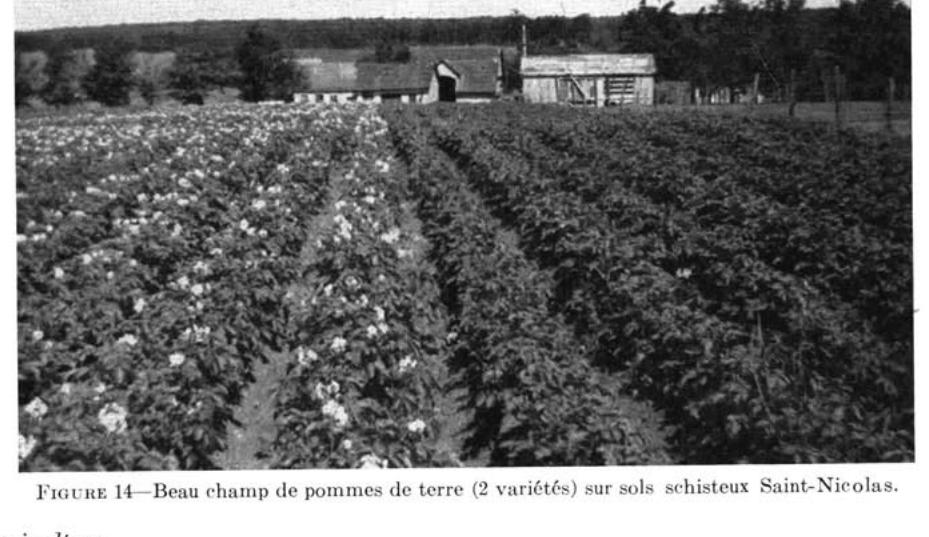
FIGURE 14—Beau champ de pommes de terre (2 variétés) sur sols schisteux Saint-Nicolas.
Agriculture
La plus grande étendue de ce type de sol est réservée à la culture mixte et à l'industrie laitière. Une petite étendue est consacrée à certaines cultures spéciales, telles la pomme de terre et les fraises, ou laissée en bois pour l'exploitation de l'érablière.
A cause de ses belles propriétés physiques, la perméabilité notamment, ce sol convient particulièrement bien à la culture de la pomme de terre. Par les années plutôt humides et avec de généreuses applications de fumier et d'engrais composés, les rendements peuvent atteindre ou même dépasser 225 à 250 minots de pommes de terre à l'acre.
Par ailleurs, à cause de son bas niveau de fertilité, de sa faible teneur en humus et de sa trop grande acidité, les rendements en grain et en foin sont faibles. Maints pacages sont presque dénudés ou couverts d'une végétation clairsemée, composée d'épervière orangée, d'oseille et de danthonie. A ces endroits, les sols sont sujets à l'érosion et perdent ainsi les seuls éléments fins qu'ils possèdent en surface.
Avec un bon aménagement, c'est-à-dire, par l'addition de pierre à chaux (2-4 tonnes), de fumier ou d'engrais verts et d'engrais chimiques composés, il est possible d'augmenter passablement la productivité de ce type de sol. Avec de bonnes façons culturales, les rendements en grain peuvent atteindre, par les années normales, 30 à 35 minots et 2 tonnes de foin environ. On pourrait, avec avantage, développer de plus en plus la culture de la luzerne sur ces sols.
LE LOAM SABLO-GRAVELEUX ST-NICOLAS — phase mince (1,202 acres)
Une bonne proportion des sols St-Nicolas ont un caractère résiduel, c'est-à-dire, qu'ils proviennent de la désagrégation du roc « in situ ». A ces endroits, le sous-sol est constitué de fragments de schistes aux arêtes aigues et tranchantes. Dans la majorité des cas, le roc affleure ou bien peut être observé à une profondeur de moins de 2 pieds; d'où l'expression de phase mince pour désigner ces sols.
Il y aurait avantage à réserver à l'érablière ces sols minces, et à surveiller les dangers d'érosion.
La valeur agricole de cette phase de sol est moindre que celle du type décrit plus haut. Ce sol peut être utilisé pour certaines cultures hâtives, telle celle de la fraise.
ST-ANDRÉ (1,000 acres)
Les sols St-André occupent une faible étendue, dans la région à l'étude, et sont localisés entièrement dans la paroisse de St-Apollinaire. Ils sont associés aux sols St-Nicolas et Mawcook.
Leur texture est celle d'un loam sablo-graveleux et pierreux. Les sols St-André proviennent de grès et d'ardoises grises de Sillery. Ils diffèrent de ceux de St-Nicolas par leur coloration plutôt grise, alors que celle de ces derniers a une teinte caractéristique brun rouge ou rouge.
Leur topographie est celle de terrasses légèrement à fortement vallonnées, qu'on observe généralement à des altitudes variant entre 250 et 400 pieds.
A cause de la nature poreuse du sol et du substratum, les sols St-André sont très bien drainés et souffrent même des conditions de sécheresse qui prévalent certains étés.
La végétation arborescente est celle de l'érablière à caractère septentrional, c'est-à-dire contenant un certain apport de sapin, d'épinette, ainsi que de merisier. Dans les pâturages abandonnés et négligés, on observe l'épervière orangée et piloselle, l'oseille, la danthonie et, dans maints cas d'anciens pâturages l'épinette est généralement l'espèce pionnière envahissante.
La description du loam sablo-pierreux St-André est la suivante :
Horizons
Épaisseurs (po.)
Description
Aoo
½
Litière de feuilles non décomposées.
Ao
1
Humus noir non minéralisé (type mor); pH: 3.5-4.0.
A2
½-2
Horizon d'éluviation mince, mais plutôt continu. Loam sablo-graveleux contenant généralement un peu plus d'argile que les autres horizons du profil. Coloration blanc rosé; friable, structure absente ou faiblement laminée. pH: 4.5-5.9.
B21
3-4
Loam sablo-graveleux avec fragments de grès et de schistes de Sillery. Coloration brun rouge, due à une certaine accumulation des sesquioxydes de fer et d'alumine ainsi que d'humus. Structure en miettes; friable, poreux; pH: 5.0.
B22
8-12
Loam sablo-graveleux, contenant beaucoup de fragments de grès et de schistes. Coloration brun jaune (10YR 5/4). Friable, poreux, sans structure; pH: 5.0-5.5.
B3C1
8-10
Horizon de transition semblable au précédent, sauf que les teintes sont un peu plus pâles.
Cr
Roche-mère : gravier de grès et de schistes de Sillery; très perméable, lâche; pH: 5.5-6.0.
Les sols cultivés St-André ont une coloration brun à brun jaune et se distinguent facilement des sols St-Nicolas, auxquels ils sont associés; en effet, le St-Nicolas a une teinte rouge caractéristique. La surface contient toujours une certaine proportion de roches, qui peuvent gêner les façons culturales. Ces sols ont un faible pouvoir de rétention pour l'eau et les engrais et sont sujets à la sécheresse. Les matériaux graveleux et pierreux de ces sols sont utilisés pour la construction des routes; cependant, à cause de leur texture et de leur caractère acide, ils conviennent moins bien à cette fin que les matériaux calcaires qui sont sous-jacents aux sols Ste-Philomène.
Pour la grande culture et l'industrie laitière, le niveau de fertilité de ces sols est plutôt faible. Pour la luzerne et le trèfle, l'addition de pierre à chaux (2-4 tonnes), de fumier ou d'engrais verts et d'engrais chimiques s'avère nécessaire.
Avec une bonne rotation des cultures à base de légumineuses, jointe à une fertilisation adéquate, les rendements en grain et en foin, par les années plutôt humides, peuvent atteindre 30 minots et 1½ à 2 tonnes respectivement.
St-Antoine (13,668 acres)
Les sols de la série St-Antoine proviennent de gravier fin à grossier constitué de schistes d'Utica, de grès, de quartz et de ferromagnésiens. En tenant compte des variations de la texture de la surface, ils ont été subdivisés en trois unités texturales, savoir: le sable loameux grossier, le sable loameux grossier, phase graveleuse et le loam sablo-graveleux St-Antoine.
Sable loameux grossier St-Antoine (12,568 acres)
Le sable loameux grossier représente le type dominant des sols de la série St-Antoine. Il occupe, dans la plaine, certaines petites terrasses ou cordons sablo-graveleux, dont la topographie est légèrement à fortement vallonnée. Parfois, on l'observe aussi sur certaines berges de rivières.
Le drainage de ce type de sol est bon et même excessif, à cause de la nature très graveleuse du sous-sol et de la roche-mère.
La végétation des boisés de ferme sur ce type de sol est généralement composée de sapin baumier, d'épinette, de pin, de cédre et de merisier. Le cornouiller
du Canada et le maienthème abondent dans le parterre végétal. Les pâturages sont généralement pauvres et renferment une forte proportion d'épervière, d'oseille et de danthonie.
La description du sable loameux grossier St-Antoine est la suivante :
Horizons
Épaisseurs (po.)
Description
Ao
½-1
Humus non minéralisé (type mor), noir ou brun rouge foncé (5YR 2/2) à l'état sec; pH : 4.2.
A2
½-3
Sable grossier, gris rosé (7.5YR 7/2) à l'état sec; sans structure, friable; pH : 4.9.
B2h
1-6
Horizon d'accumulation des sesquioxydes de fer, d'alumine et d'humus. Sable à sable loamo-schisteux, brun rouge foncé (5YR 3/3) et 5YR 3/4) à l'état humide. Souvent induré en un ortstein. pH : 5.5.
B22
3-7
Sable loamo-graveleux, jaune brun (10YR 6/8), à l'état sec, contenant beaucoup de fragments de schistes; poreux, friable; structure en miettes peu ou pas développée; pH : 5.8.
B3C1
10-14
Horizon de passage, laomo-sableux avec beaucoup de schistes d'Utica pouvant se briser sous la pression des doigts; coloration brun jaune (10YR 5/8); sans structure; perméable; pH : 6.0.
Agriculture
Une forte proportion de ce type de sol n'est pas cultivée, mais laissée en bois. Pour la culture mixte et l'industrie laitière, il est trop acide et a grandement besoin d'application de pierre à chaux, notamment pour la culture du trèfle et de la luzerne.
Par ailleurs, là où se pratique la culture de la pomme de terre, on peut recommander le choulage, mais avec beaucoup de circonspection, en recommandant de le faire avec grande modération : les quantités de pierre à chaux requises pour corriger partiellement l'acidité du sol, devront être rigoureusement contrôlées par l'analyse. Pour ces applications, ajoutons que la pierre à chaux dolomitique serait préférable.
Avec un bon aménagement, ce type de sol donne des rendements en grain et en foins à peu près semblables, ou peut-être légèrement inférieurs à ceux que donnent les sols St-André, étudiés précédemment.
A quelques endroits, notamment dans la paroisse de St-Antoine-de-Tilly, le sable loameux grossier St-Antoine, précédemment décrit, devient nettement plus graveleux, d'où le nom de phase graveleuse. Cette dernière phase présente peu d'intérêt au point de vue agricole, à cause de sa faible étendue, de sa nature trop graveleuse et de son faible niveau de fertilité. Aussi, observe-t-on à plusieurs endroits des gravières dont les matériaux grossiers sont recherchés pour la construction des routes ou des bâtiments.
Loam sablo-schisteux St-Antoine (230 acres)
Le loam sablo-schisteux St-Antoine se rencontre dans la paroisse d'Issoudun, où il occupe une terrasse graveleuse continue; la proportion des schistes plats d'Utica y est plus considérable que dans les autres sols St-Antoine. De plus, les schistes argileux ont une coloration nettement plus foncé, que celle observée dans les sols St-Antoine.
La texture de la surface de ce type de sol est plus fine que celle des autres types de la série St-Antoine; il présente aussi plus de possibilités agricoles que ces derniers.
47
La culture des fruits et petits fruits est bien adaptée à ces sols. Une fois chaulés, ils peuvent être avantageusement utilisés pour la culture de la luzerne.
Les sols sableux
En prenant comme base la nature lithologique, la grosseur des particules de sable, l'épaisseur, le drainage et le degré de podzolisation, les sols de texture sableuse ont fait l'objet de neuf séries de sols, savoir : 1° les sols Beaurivage, issus de dépôts sableux et/ou graveleux d'épaisseur variable; 2° les sols sableux, plutôt fins et profonds, des séries Sorel, Ste-Sophie, St-Jude, St-Samuel et St-Amable (complexe des séries Sorel, St-Jude et St-Samuel) et 3° les séries des Crètes, Villeroy et Vien, provenant de sables fortement podzolisés plutôt grossiers et jonchés de blocs erratiques laurentiens. Un bon nombre de ces blocs ont été entassés ou mis en digues au milieu des champs par les cultivateurs. Généralement, ces dernières séries reposent sur du till souventes fois calcaire, à des profondeurs de 3 ou 6 pieds. De plus, ajoutons que les séries des Crètes, Villeroy et Vien sont les plus podzolisées ou appauvries de toute la région à l'étude.
Beaurivage (53,813 acres)
Les sols Beaurivage se sont formés aux dépens de sables d'épaisseur et de grosseur variables, sur gravier arrondi et grossier. Les matériaux sont constitués de grès, de quartz, d'ardoises et de schistes. Dans maints cas, le gravier apparaît à la surface. Ce type de sol couvre une très importante étendue, au nord de la région appalachienne, dans les vallées qu'arrosent les rivières Beaurivage, Armagh et leurs tributaires.
La topographie des sols Beaurivage est celle de plaines de délavage ou de larges terrasses légèrement ondulées. Par ailleurs, près des rivières, ces plaines ou terrasses ont été parfois fortement entaillées par l'érosion.
Le drainage interne et externe est très bon et même excessif, à cause de la nature poreuse du substratum graveleux. L'épaisseur de ce dernier est très variable et, en maints endroits, le till se rencontre à des profondeurs variant de 3 à 5 pieds. À ces mêmes endroits, lorsque les sols sont plus sableux ou moins graveleux, ils ont été classés, en tenant compte de leurs profils et de leurs conditions de drainage, avec ceux de Sorel, Ste-Sophie ou St-Samuel.
La végétation arborescente est constituée d'un mélange d'essences décidues et de conifères : érable à sucre, hêtre, merisier, sapin et épinette. Dans le sous-bois, le maïanthème et le cornouiller du Canada sont abondants.
La description du loam sableux fin Beaurivage est la suivante :
Horizons
Épaisseurs (po.)
Description
Ao-A1
1-¼
Humus peu minéralisé, brun à gris foncé (7.5YR 4/7-3/0); pH: 5.0-5.5.
A2
½-6
Horizon d'éluviation; loam sableux à sable fin gris rose (7.5YR 5/8), friable sans structure; pH: 5.0.
B2l
3-6
Sable à loam sableux d'un brun vif (7.5YR 5/8), de consistance ferme ou cimenté en un ortstein localement; pH: 5.2-5.8.
B22
6-8
Loam sableux à sable brun jaunâtre (10YR 5/8) sans structure, friable, meuble; pH: 5.2-5.4.
B3C1
12-15
Sable brun jaunâtre pâle (10YR 6/4), contient assez souvent du gravier et du sable très grossier; ouvert et très perméable; pH: 5.6.
C2
à 32″ env.
Sable fin à grossier, brun jaune (10YR 5/4-4/4), sans structure, ouvert, pH: 6.0.
D
à 36″ env.
Séparation nette, au point de vue texture. Substratum toujours fortement graveleux (gravier de schistes, d'ardoises et surtout de grès) présentant des lits de gravier et de sable; pas de coquillages; poreux, très perméable; pH: 6.0.
N.B.: En séchant, les horizons B22 et B3C1 donnent une coloration brun jaune pâle (10YR 6-4).
Les sols cultivés Beaurivage ont une coloration brune à brun pâle et leur surface contient toujours ou presque des pierres plus ou moins arrondies de quartz blanc. À cause de leur faible pouvoir de rétention, ces sols sont sujets à la sécheresse.
Agriculture
La très grande majorité des sols Beaurivage est réservée à la grande culture et à l'industrie laitière. À cause de leur bon drainage, ils conviennent bien à la culture de la pomme de terre.
Étant donné le faible niveau de fertilité de ces sols, il est nécessaire d'y faire de généreuses applications de fumier et d'engrais chimiques. L'enfouissement d'engrais verts pourrait améliorer considérablement le pouvoir de rétention en eau, qui est plutôt faible.
SOREL (19,113 acres)
Le sable Sorel est presqu'entièrement localisé dans les paroisses de Deschaillets, Parisville et St-Apollinaire. Il provient de sable constitué principalement de quartz et de feldspaths.
À cause de sa topographie vallonnée et de la nature fortement sableuse (90% et plus) de sa roche-mère, ce type de sol est très bien drainé, voire même excessivement et est sujet à souffrir des sécheresses d'été.
Le sable Sorel ne contient pas de pierres. La végétation arborescente était vraisemblablement constituée d'érable à sucre, de hêtre, de merisier et de certains apports de conifères, tels le pin blanc, l'épinette blanche et le sapin. On observe aujourd'hui, dans les repousses, le bouleau et le peuplier. Dans les pacages dominent la danthonie (Danthonia spicata), l'épervière orangée (Hieracium aurantiacum) et l'épervière jaune (Hieracium pilosella).
La description du sable Sorel est la suivante:
Horizons
Épaisseurs (po.)
Description
Ao
0-1
Litière de feuilles mortes.
A1
1-3
Sable humifère, brun foncé, généralement absent, pH: 5.0-5.5.
A2
1-3
Sable gris cendré, sans structure; pH: 5.0-5.3.
B21
1-3
Sable jaune foncé à brun rouge foncé avec accumulation d'humus; pH: 5.3.
B22
3-6
Sable jaune brun à brun ocreux cimenté localement en un "ortstein" ferrugineux; pH: 5.0-5.3.
B3
10-15
Sable jaune pâle, sans structure, pH: 5.6-6.0.
C
Roche-mère: sable gris à jaune très pâle, meuble et très perméable; pH: 6.0-6.2.
Agriculture
Le sable Sorel est peu cultivé, à cause de son faible niveau de fertilité et de sa tendance à être trop sec. Pour ces raisons, il est moins bien adapté à la culture mixte et à l'industrie laitière qu'à certaines cultures spéciales telles: la pomme de terre, les petits fruits et les cultures de jardinage, notamment celles de la tomate, du maïs sucré et des fèves, à condition d'y ajouter de fortes doses de fumier et d'engrais chimiques. À défaut de fumier, il y aurait tout avantage à recourir aux engrais verts afin d'augmenter le pouvoir de rétention de ce sol pour l'eau et les engrais. Il est généralement très acide et requiert de bonnes applications de pierre à chaux.
À quelques endroits, notamment dans la paroisse de Deschaillons, le sable de Sorel a une texture très fine et présente certaines possibilités pour la culture du tabac à cigarette et du houblon; malheureusement, à certains endroits, l'érosion éolienne a entamé quelque peu ce type de sol. Afin de faire échec à cette
menace, il serait recommandable de constituer des rideaux protecteurs, par la plantation d'arbres. Les essences suivantes peuvent être utilisées: pin blanc, pin rouge, pin gris, épinette blanche, saule de Babylone, pin Mugho et saule laurier. Un bon moyen de favoriser la fixation du sol entre ces écrans protecteurs, c'est de le recouvrir de branchages, de paille ou débris organiques quelconques. Enfin, là où il est nécessaire de continuer la culture, on peut utiliser le sol à l'intérieur des écrans protecteurs, mais en ayant soin d'y pratiquer les systèmes de culture en bandes ou en damier. Ce système a pour principe l'utilisation de l'alternance d'une plante-abri fixatrice du sol, avec une autre plante dont nous voulons faire la culture, mais qui a l'inconvénient de favoriser l'érosion du sol.
Ceux qui désireraient faire des cultures de jardinage pourraient s'inspirer de l'expérience acquise par les producteurs de St-Pierre-les-Becquets.
Ste-Sophie (6,097 acres)
Les sols Ste-Sophie se sont formés aux dépens de sable constitué de quartz et autres matériaux laurentiens. La texture de la surface du sol varie desable au sable loameux. La topographie est légèrement à fortement ondulée et le drainage est généralement bon.
La végétation naturelle, à l'origine, devait être celle qui a été mentionnée pour les sols de la série Sorel. De nos jours, les bouleaux, les épinettes et le sapin dominent.
La description du profil du sable loameux Ste-Sophie est la suivante :
Horizons
Épaisseurs (po.)
Description
Ac
5-7
Sable brun jaune; pH: 5.6.
B21
4-6
Sable brun rouge, coloré par l'humus et le fer; pH: 5.6.
B2g
6-11
Sable brun jaune, plus ou moins tacheté de “gley” ou “rouille”; pH: 5.6. L'abondance des taches de rouille varie suivant la hauteur de la nappe phréatique.
C
Roche-mère: sable généralement grossier, gris jaunâtre, parsemé de taches de “rouille” ou de “gley”; pH: 6.0.
Agriculture
Les sols Ste-Sophie sont moins exposés à souffrir des sécheresses d'été que ceux de la série Sorel, et pour cette raison, les rendements en grain et en foin sont généralement meilleurs. L'addition généreuse de pierre à chaux, de fumier et d'engrais chimiques composés est nécessaire pour une bonne production agricole. A cause de leur perméabilité, ils sont hâtifs et conviennent à certaines cultures dites “de jardinage”.
St-Jude (21,268 acres)
Les sols de la série St-Jude comprennent un type: le loam sableux, ainsi que deux phases: le loam sableux St-Jude, phase mince, et le loam St-Jude, phase pierreuse.
Loam sableux St-Jude (21,172 acres)
Le loam sableux St-Jude est situé presqu'entièrement, comme tous les sols de la même série d'ailleurs, dans la partie ouest du comté. Il provient de sable constitué principalement de quartz et reposant sur l'argile ou du till. L'apparition du till comme substratum à maints endroits, nous invite à croire que la sédimentation argileuse a été moins importante ici que dans la Plaine de Montréal et des Trois-Rivières. Par ailleurs l'hypothèse de l'érosion de l'argile ne peut être rejetée.
A cause de la topographie plane et de la nature plutôt imperméable du substratum, le drainage est lent.
La végétation naturelle est composée principalement de conifères : épinette, sapin, mélèze, et de feuillus : bouleaux et aulnes surtout.
La description du loam sableux St-Jude est la suivante :
Horizons
Épaisseurs (po.)
Description
Ao
0-1
Humus brut, noir (2.5Y 5/2) peu décomposé, avec des débris végétaux; pH: 4.8-5.0.
A2
1-3
Loam sableux à sable gris cendré, sans structure ni consistance; pH: 5.2.
B2G1
4-6
Loam sableux brun ou rouge très sombre parfois (2.5YR 2/2) indiquant une forte accumulation d'humus; tacheté de rouille, sans structure; légèrement induré; pH: 5.4-5.6.
B2G2
5-6
Loam sableux à sable brun à brun jaune (10YR 5/6) sans structure ni consistance; pH: 5.7.-5.9.
C
à 14" env.
Loam sableux à sable de teinte gris pâle, meuble et perméable, mais généralement saturé d'eau à cause de la couche d'argile ou de till sous-jacente; quelques taches de rouille apparaissent; pH: 5.8-6.2.
D
—
Substratum : argile ou till. Assez fréquemment du till.
Dans maints cas, le profil montre un horizon d'accumulation d'humus (B2h) induré en “orterde” ou “ortstein”. Là où ce caractère devient plutôt général, le sol prend le nom de Vien. Ajoutons qu'à ces endroits, l'altitude au-dessus du niveau de la mer est supérieure à 250-275 pieds et que les sables reposent le plus souvent sur du till.
Agriculture
Une forte proportion de ce type de sol est laissée en bois. Pour l'obtention de bons rendements, dans la plupart des récoltes de grande culture, ces sols ont besoin tout d'abord d'être drainés et fortement chaulés. L'addition de fumier ou d'engrais verts améliorera leur pouvoir de rétention et celle d'engrais chimiques appropriés élèvera leur niveau de fertilité, qui est plutôt faible.
LOAM SABLEUX ST-JUDE — phase mince (264 acres)
A plusieurs endroits, notamment dans la paroisse de Fortierville, la couche de sable recouvrant l'argile n'est pas aussi épaisse que celle qui recouvre originairement le St-Jude.
D'une manière générale, l'argile est à environ deux pieds de profondeur. Les caractéristiques du loam sableux St-Jude — phase mince sont, à peu de chose près, analogues à celles du sol St-Jude profond. Cependant, au point de vue agricole, la phase mince est supérieure et, dans maints cas, les sols ont été un peu moins podzolisés et acidifiés.
A maints endroits, dans la partie ouest du comté, les sols de la série St-Jude sont généralement plus sableux et sont parsemés de gros blocs erratiques. Ces sols, qui ont fait l'objet d'une phase, sont plus pauvres que les loams sableux St-Jude et présentent moins de possibilités agricoles. Ils reposent généralement sur le till et, d'après leurs caractéristiques de profil, ils représentent une transition entre les sables St-Jude moins podzolisés du “bord de l'eau” et les sables très podzolisés des séries Vien et Villeroy.
ST-SAMUEL (30,882 acres)
Ces sols, apparentés quant à l'origine à ceux des séries Sorel, St-Jude, Ste-Sophie et cependant beaucoup plus mal drainés, ont été appelés St-Samuel.
La topographie est plane ou en forme de cuvette. La nappe phréatique est généralement près de la surface, comme le fait voir la coloration grise du sous-sol.
A certains endroits, comme sur la ferme d'illustration fédérale de St-Flavien et dans les paroisses de Vien et de Villeroy notamment, les sols St-Samuel reposent sur du till.
La végétation naturelle reflète des conditions de mauvais drainage et est composée de cédre, de mélèze, d'épinette noire, de pin, de sapin, de bouleaux et d'aulne.
La description du profil du sable St-Samuel est la suivante:
Horizons
Épaisseurs (po.)
Description
Ac
0-8
Sable humifère de couleur noire et d'épaisseur variable; pH: 5.5.
C1G
8-15
Sable gris avec mouchetures de rouille, sans structure; pH: 7.0.
C
15 et plus
Sable uniformément gris, sans structure; pH: 7.5.
Agriculture
Les principales améliorations à apporter au sable humifère St-Samuel sont le drainage, et dans certains cas, le choulage. En maints endroits, ce type de sol est suffisamment riche en matières organiques bien décomposées, pour se prêter à certaines cultures maraîchères. Bien drainé, il convient au pâturage. Pour la culture des grains, l'addition de phosphore et/ou de potasse est nécessaire, afin de prévenir la "verse" des céréales.
ST-AMABLE (complexe caténaire) (12,467 acres)
Les sables St-Amable forment un complexe de sols passablement variables, au point de vue de leurs propriétés physiques, chimiques, voire agronomiques. Ils représentent, sur une étendue donnée, une association de plusieurs séries de sols sableux, telles celles de St-Jude, Ste-Sophie et St-Samuel. Étant donné que ces séries sont apparentées ou dérivent d'une même roche-mère, on dit que la série St-Amable représente sur la carte, non pas une série proprement dite, mais un complexe de séries que l'on appelle un "catena de drainage".
Les caractéristiques et les propriétés des sols du complexe St-Amable dépendent de la proportion relative des divers membres ou séries de sols qui composent les étendues en question. Sur la carte, les séries dominantes, dans ce complexe, sont généralement celles de St-Jude et de St-Samuel. Nous référons le lecteur aux informations déjà fournies sur ces deux dernières séries.
DES CRÈTES (10,066 acres)
On observe fréquemment dans le comté de Lotbinière, spécialement le long du boulevard Laurier, des coteaux de sable dont l'altitude est de 400 pieds au-dessus du niveau de la mer. Dans la très grande majorité des cas, ces coteaux sont dénudés et ont été sculptés par le vent, comme en témoigne leur orientation ouest-est, qui est aussi celle des vents dominants.
Le profil du sable des Crêtes est le suivant:
Horizons
Épaisseurs (po.)
Description
Ao
1
Humus noir non minéralisé; pH: 4.8.
A2
2-14
Sable gris cendré; continu et très net; pH: 5.0 - 5.2.
B2h
4-16
Horizon d'accumulation du fer et de l'alumine, fortement coloré par l'humus entraîné. Formation d'un ortstein continu sur une distance horizontale de 15 pieds et plus; très dur à briser et formant des langues ou entonnoirs; brun rouge foncé à noir; pH: 5.0-5.2.
B22
4-8
Sable brun jaune, ferme mais friable; sans structure; pH: 5.9.
B3C1
5-10
Sable gris jaune, poreux; friable; pH 55.9.
C2
Roche-mère: sable gris (sec), contenant de la magnétite, poreux, friable; pH: 6.2.
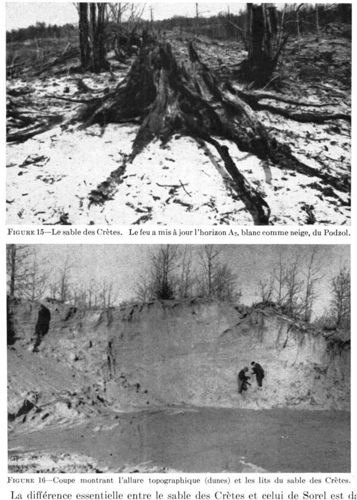
FIGURE 15.—Le sable des Crêtes. Le feu a mis à jour l'horizon A2, blanc comme neige, du Podzol.FIGURE 16.—Coupe montrant l'allure topographique (dunes) et les lits du sable des Crêtes.
La différence essentielle entre le sable des Crêtes et celui de Sorel est dans l'épaisseur et la continuité des horizons d'appauvrissement (A2) et d'accumulation (B2h). Presque invariablement, ces deux horizons sont toujours plus développés, c'est-à-dire plus épais dans les sols des Crêtes.
Agriculture
Le sable des Crêtes pourrait être considéré comme le type de sol le plus pauvre du comté. Ce sol n'est généralement pas cultivé; on remarque cependant à certains endroits des essais de mise en culture infructueux. En effet, il semble que ces sols, aussitôt après leur défrichement, perdent le peu de matière organique qui les recouvrait et commencent à poudrer au vent. A l'heure actuelle, nous croyons qu'il serait préférable de reboiser ce sol entièrement.
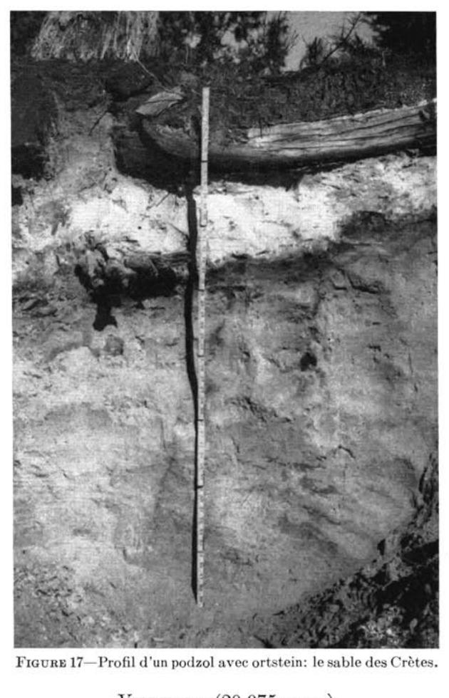
FIGURE 17—Profil d'un podzol avec ortstein: le sable des Crètes.
VILLEROY (20,075 acres)
Les sols de la série Villeroy proviennent de sables de dimensions variables, mais généralement grossiers. La profondeur relativement faible de 3 ou 4 pieds de sable sur le till, et les énormes blocs erratiques qui surmontaient ces sols à l'origine et qu'on a entassés en "digues" au milieu des champs, nous invitent à croire que ces dépôts ont connu des conditions de sédimentation en eaux peu profondes et fréquemment agitées.
Les sols Villeroy forment, avec les sols imparfaitement drainés Vien et parfois St-Samuel ainsi que des Crètes, une association géographique de sols typique, dans les paroisses de colonisation récente, c'est-à-dire celles de Villeroy, Vien, Val Alain et Joly.
A cause de leur topographie légèrement à fortement ondulée et de la nature poreuse de leur roche-mère, leurs conditions de drainage sont très bonnes. L'altitude moyenne à laquelle on observe les sols Villeroy est d'environ 400 pieds au-dessus du niveau de la mer.
La surface du sol contient parfois de nombreuses roches arrondies, dont le diamètre est de plus d'un pied souvent. La plupart de ces dernières sont d'origine laurentienne et leur forme, assez nettement arrondie, suggère un déplacement et une usure d'assez longue durée.
Une des principales caractéristiques du sable pierreux Villeroy est de posséder, sous un horizon de podzolisation intense (A2), un horizon fortement coloré
par l'humus et le fer entrainé (B2h). La végétation naturelle des boisés actuels est passablement décimée, à la suite des nombreux feux de forêt qui sévissent souvent dans la région. A l'origine, ces sols devaient supporter l'érable rouge, le merisier et un mélange de conifères: sapin, épinette noire et blanche.
La description du profil du sable pierreux Villeroy est la suivante:
Horizons
Épaisseurs (po.)
Description
Ao
2-3
Humus non minéralisé (mor), noir (10YR 2/1) à brun rouge foncé (5YR 2/2); pH: 4.0.
A2
3-8
Sable gris rosé (7.5YR 7/2). Continu et facile à répérer même en terrain cultivé; sans structure; pH: 4.0.
B2h
3-4
Sable moyen à grossier de teinte brun rouge foncé (5YR 2/2) à rouge foncé (2.5YR 3/2). Fortement induré en un "ortstein" constitué d'humus et de fer; pH: 4.2-4.6.
B22
4-7
Sable brun jaune (10YR 5/6) à jaune olive (2.5Y 6/6), friable, sans structure, parfois tacheté de rouille; pH: 4.8 - 5.0.
C1g
9-14
Sable grossier à moyen, brun jaune (10YR 5/4) à jaune olive (2.5Y 4/4) à gris brun pâle (2.5Y 6/2).
D
Substratum: till sableux, très pierreux et très compact, de teinte olive (5Y 4/4) à gris brun pâle (2.5Y 6/2). Fait effervescence à l'HCI dilué, mais à une profondeur très variable (entre 3 et 7 pieds). pH: 6.6 à 7.9.
La surface de ces sols, lorsque cultivés, fait voir facilement les traces de l'horizon blanc sous-jacent (A2). Dans maints cas, le sol est très pierreux, mais les pierres sont principalement à la surface du sol.
Agriculture
La fertilité des sols Villeroy est très faible; de plus, ils sont très acides et généralement pierreux en surface.
Étant donné que les sols Villeroy sont associés aux sols Vien, également fortement acides, et à des tourbières ou à des coteaux arides de sable poudreux, ils présentent peu de possibilités agricoles, dans les conditions économiques actuelles. Ces sols requièrent de fortes applications de pierre à chaux, de fumier et d'engrais chimiques. Depuis un certain nombre d'années, plusieurs cultivateurs ont obtenu du succès avec certaines cultures spéciales, notamment celle des framboises.
VIEN (37,678 acres)
Le sable fin Vien est presque entièrement confiné à la partie ouest du comté, c'est-à-dire aux paroisses de St-Janvier-de-Joly, Villeroy et Vien. Il est généralement en association avec les sables des séries Villeroy, St-Samuel et les sols organiques et tourbeux.
Ce type de sol a une texture qui varie du loam au loam sableux. Les particules de sable y sont généralement plus fines que chez les sols de la série Villeroy. D'une manière générale, il repose, à des profondeurs variant entre 3 et 6 pieds, sur du till très compact, pierreux et parfois calcaire.
"A cause de sa topographie plane, qui s'identifie assez bien avec celle des sols St-Jude, le drainage est lent, comme l'indique la présence de "taches de rouille" dans le profil. L'altitude moyenne à laquelle on observe ces sols est d'environ 400 pieds au-dessus du niveau de la mer.
La surface du sol est généralement jonchée de gros blocs erratiques de formes arrondies et de nature laurentienne. Parfois, ces plaines ou nappes de loam
sableux ou de sable Vien sont exemptes de roches transportées par les glaces. A ces endroits, le profil et l'apparence générale des sols Vien ressemblent à ceux du St-Jude, mais avec cette différence que les profils des sols Vien montrent un horizon d'humus (B2h) caractéristique. Cet horizon humique est parfois fortement concrétionné (ortstein) ou induré (orterde humique). A certains endroits, (voir échantillon No : 26119-26122 du tableau des analyses) un horizon d'ortstein de 26 pouces d'épaisseur a été observé. La réaction de la surface est extrêmement acide et varie de 3.6 à 4.6. Cette série de sols représente, avec celle de Villeroy, l'une des séries les plus podzolisées du comté et peut-être même de toute la province.
La végétation naturelle était vraisemblablement composée, à l'origine, d'érable, de merisier et d'un mélange de conifères tels le sapin, l'épinette noire et l'épinette blanche. Le bouleau occupe aujourd'hui de grandes étendues de terrains bûchés et subséquemment abandonnés. Les fraises sont particulièrement abondantes dans les pacages.
La description du profil pédologique du sable pierreux Vien est la suivante :
Sable fin à loam sableux gris pâle (10YR 7/2) facile à déceler même en terrain cultivé; distribution continue; sans structure; pH: 4.6-4.9.
B2h
1-3
Sable à loam sableux brun rouge (5YR 4/4), généralement avec concrétions d'ortstein ou d'orterde et contenant une forte proportion d'humus ou d'acides humiques entraînés; pH: 4.9-5.1.
G1
7-8
Sable jaune brun (10YR 6/6). Renferme assez souvent des lentilles de sable, d'argile ou de roches décomposées; sans structure; tacheté de rouille; pH: 5.3.
C1g
20-24
Sable brun jaune clair (10YR 6/4 à 6/6) à jaune brun, tacheté de rouille (mottling); sans structure; pH: 5.5.
C2g
10-12
Sable fin à loam sableux brun pâle (10YR 6/3) avec mouchetures jaune brun (10YR 6/6-6/8); sans structure; parfois compact et à caractère de till; pH: 5.8-6.0.
D
à 52″ env.
Sable à loam sableux brun pâle; très peu ou pas de mouchetures; extrêmement compact, pierreux, carbonates libres (effervescence avec HCL dilué) assez fréquents; pH: 6.0.
L'horizon gris blanc (A2) et celui qui contient de l'humus entraîné (B2h) sont facilement visibles, même en sols cultivés. Le profil ne contient généralement pas de pierres.
Agriculture
La fertilité des sols Vien est très faible. De plus, comme les autres sols auxquels ils sont associés, ils sont très fortement acides et nécessitent de fortes applications de pierre à chaux.
Ces sols sont réservés à la culture mixte et à l'industrie laitière. Les rendements sont faibles. En plus d'un grand besoin de chaux, beaucoup requièrent des engrais chimiques et de fortes quantités de fumier ou d'engrais verts. Il serait intéressant et utile de conduire certaines expériences, pour déterminer les besoins réels de ces sols en éléments nutritifs.
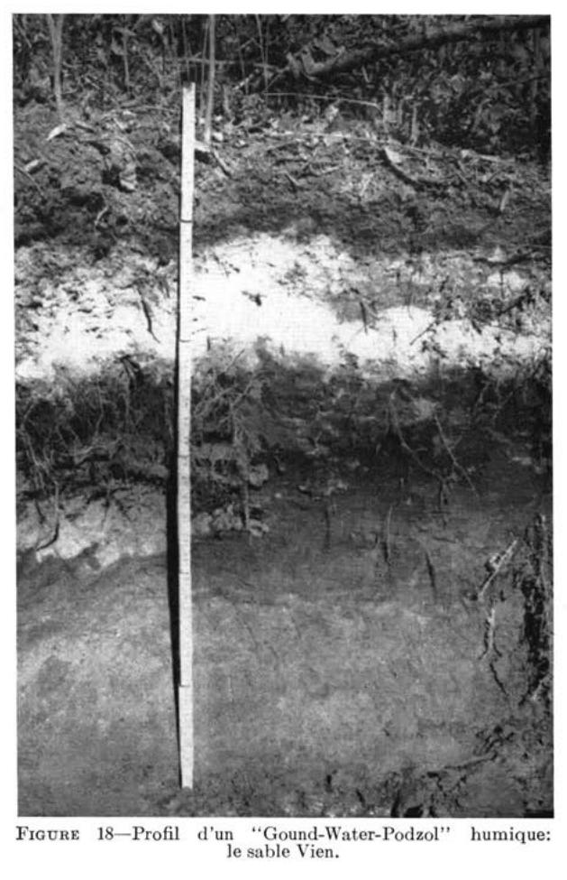
FIGURE 18 — Profil d'un "Gound-Water-Podzol" humique : le sable Vien.
Les loams et les loams limoneux
Les loams et les loams limoneux du comté, qui sont situés dans les Basses Terres du St-Laurent, comprennent quatre séries de sols : des Orignaux, Lévrard, Fortierville et Neubois. Ils occupent environ 5 % de la superficie totale du comté. La presque totalité de ces sols, exception faite de ceux de la série Neubois, situés à l'est du comté, est confinée à la partie ouest du comté et fait suite aux sols Lévrard et des Orignaux du comté limitrophe de Nicolet.
DES ORIGNAUX (11,241 acres)
Le loam des Orignaux est entièrement localisé dans les paroisses de Deschallons, Parisville et Leclercville, où il est confiné à la "Petite Rivière du Chêne" et à ses tributaires. Il provient de sable très fin et de limon.
La topographie est fortement ondulée à vallonnée. Le drainage est très bon et parfois excessif, spécialement près des rivières, où les berges montrent fréquemment les signes d'une forte érosion. L'altitude au-dessus du niveau de la mer varie entre 100 et 225 pieds.
D'après les rares boisés existants, la végétation naturelle devait contenir une forte proportion de pin blanc, d'érable rouge et d'orme.
La description du profil du loam des Orignaux à l'état vierge est la suivante :
Horizons
Épaisseurs (po.)
Description
A1
0-3
Humus granuleux bien décomposé (type mull) friable, gris brun très foncé (10YR 3/2); pH: 5.0-5.2.
A2
traces
Horizon très mince, généralement non visible, sans structure, friable, gris cendré; pH: 5.0.
B21
1-2
Loam à loam sableux, brun (10YR 5/3), friable; pH: 5.0-5.1.
C1g
20-29
Loam gris clair (2.5Y 7/2), avec taches de rouille (5YR 5/2), stratifié (lits), un peu compact; pH: 5.2-5.4.
C2g
à env. 36"
Horizon identique au précédent, sauf que les taches de rouille sont moins contrastantes.
Le loam des Orignaux est un sol jeune, qui montre toutefois un début de podzolisation. La coloration des divers horizons est relativement homogène et change graduellement avec la profondeur du profil.
Les sols généralement en association avec le loam des Orignaux sont ceux des séries St-Jude et Sorel.
Agriculture
La plus grande partie de ce type de sol est cultivée. Il est utilisé surtout pour la grande culture et l'industrie laitière. Il conviendrait cependant à plusieurs cultures de jardinage, sauf aux endroits où le terrain est vallonné et plus sujet aux méfaits de l'érosion.
D'une manière générale, la teneur en matières organiques est plutôt faible, ainsi que le niveau de fertilité. La teneur en calcium et en magnésium échangeable est faible. Ces sols requièrent de fortes applications de pierre à chaux, de préférence dolomitique, ainsi que de bons apports d'engrais chimiques et de fumier.
A maints endroits, l'érosion a creusé des ravins bien visibles et les sols sont devenus particulièrement pauvres en matière organique.
LEVRARD (10,558 acres)
Les sols de la série Lévrard comptent deux types : le loam limoneux et le loam Lévrard. Nous discuterons d'abord du loam limoneux et ensuite du loam Lévrard.
LOAM LIMONEUX LÉVRARD (3,360 acres)
Le loam limoneux Lévrard est cantonné presqu'entièrement dans les paroisses de St-Louis, de Leclercville et de St-Édouard. On en retrouve certains petits lambeaux dans les paroisses de Deschaillons, Parisville et Fortierville. Il provient de loam limoneux sur argile limoneuse déposé vraisemblablement à la fin du retrait de la mer Champlain. L'argile Champlain proprement dite ou le till reposeraient au-dessous de ces dépôts plus récents, que nous appellerons "Pré-Saint-Laurent". A maints endroitsdu comté de Lotbinière, le till se rencontre à moins de 6 pieds de profondeur.
La topographie est généralement unie avec une légère pente vers le fleuve. Le drainage est lent. L'altitude moyenne de ces sols au-dessus du niveau de la mer est de 150 pieds, mais varie aussi entre 100 et 225 pieds.
La végétation naturelle était constituée d'érable rouge, de hêtre, de merisier et d'orme. Dans les sous-bois, on observe le maïenthème, le cornouiller, la prenanthe et le pain de couleuvre (actée rouge).
La description du profil pédologique du loam limoneux Lévrard est la suivante :
Loam limoneux brun jaune clair (10YR 6/4) à gris clair 2.5Y 7/2) à l'état sec, très friable, apparence farineuse; pH: 4.5-6.0. N.B.: Cet horizon est discontinu et généralement visible en champs cultivés.
B2g
8-14
Loam limoneux brun jaune pâle (10YR 6/4), avec un peu de mouchetures de rouille, compact et tassé; structure souvent polyédrique; pH: 5.0-6.5.
C1G
8-10
Argile limoneuse à argile, gris brun foncé (10YR 4/2) avec mouchetures de rouille contrastantes et de coloration brune (10YR 4/3), consistance plastique; structure polyédrique à massive; pH: 6.0-6.5.
C2G
à 27" env.
Argile limoneuse à argile, grise (10YR 5/1) à gris brun foncé (10YR 4/2) avec taches ou mouchetures brunes (10YR 4/3), consistance plastique; structure plutôt massive; pH: 6.5-7.0.
(*) Couleur du sol plutôt sec dans le champ. Les quelques rares sols vierges montrent un horizon A1 assez bien minéralisé avec un pH extrêmement acide, soit de 4.0 - 4.5. Là où le sol est plus léger en surface, la podzolisation est nette. Type génétique de transition: gley gris foncé à podzol imparfaitement drainé (Ground-Water-Podzol-like).
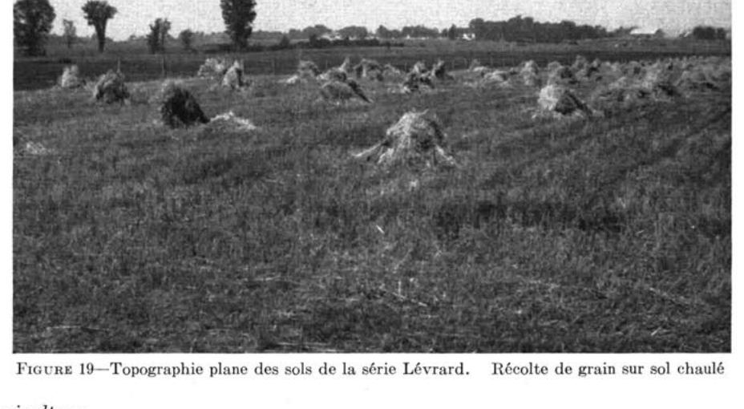
FIGURE 19 — Topographie plane des sols de la série Lévrard. Récolte de grain sur sol chaulé
Agriculture
Le loam limoneux Lévrard, ainsi que les sols de la série Bedford dont il sera question plus loin, peuvent être considérés comme étant les meilleurs sols du comté, pour la grande culture et l'industrie laitière. L'addition de matière organique, de pierre à chaux, de préférence dolomitique, le drainage et l'application de doses modérées de phosphates, sont nécessaires à l'accroissement de la productivité de ces sols.
Par les années relativement sèches, les rendements en grain et en foin peuvent atteindre facilement, sur les terrains bien aménagés, de 45 à 50 minots et de 2 à 2½ tonnes respectivement. Les cultivateurs déplorent, en général, la verse des céréales.
Ajoutons qu'une petite étendue des sols Lévrard, à l'embouchure de la Grande Rivière du Chêne, a été fortement érodée. Cette étendue se trouve près du village de Leclercville; elle est représentée sur la carte des sols par le symbole Lv-r.
Loam Lévrard (7,198 acres)
Le loam Lévrard est disséminé dans les paroisses de St-Louis, Leclercville, St-Édouard, Parisville et Fortierville. Les caractéristiques générales de la roche-mère et du solum sont à peu près les mêmes que celles que nous avons données pour le loam limoneux Lévrard. Toutefois, mentionnons qu'il est plus léger et généralement plus podzolisé que le loam limoneux Lévrard. En maints endroits, qui n'apparaissent pas sur la carte, de petites étendues isolées ont une surface de texture plus légère, soit celle du loam sableux ou celle du sable très fin. Le niveau de fertilité, comme l'atteste la présence d'un horizon blanc A2, est encore plus faible. Heureusement, cette couche plus pauvre en surface est généralement mélangée par le labour à des couches limoneuses ou argilo-limoneuses beaucoup plus fertiles.
Agriculture
Les façons culturales, notamment les labours et sarclages, sont plus faciles à exécuter sur ce type de sol que sur le loam limoneux. Avec des applications de pierre à chaux, de fumier et d'engrais chimiques, les rendements des principales récoltes de la ferme se rapprochent de ceux déjà donnés pour le loam limoneux Lévrard.
Fortierville (858 acres)
Le loam argileux Fortierville occupe quelques petites étendues, dans les paroisses de Fortierville et de Vien. Il provient de loam limoneux et d'argile limoneuse fréquemment interstratifiés, dont la réaction est légèrement acide ou neutre à 2 ou 3 pieds de profondeur.
À cause de sa topographie trop plane ou en cuvettes, les conditions de drainage sont mauvaises; ce qui a favorisé la formation d'une grande quantité d'humus et de matières organiques en surface.
L'humus est généralement peu minéralisé, dans les sols à l'état vierge, mais semble s'incorporer davantage à la matière minérale du sol, à la suite des travaux effectués pour la culture ou pour l'aménagement de ce sol, v.g. les feux d'abattis et les travaux de drainage.
D'après les rares indices de la végétation actuelle, la végétation arborescente primitive devait être constituée d'épinettes noires, d'érables rouges, d'ormes et de cèdres. Dans les prairies et pacages, on observe de nombreux carex et autres plantes hydrophiles.
Le profil du loam argileux Fortierville est le suivant:
Loam argileux à argile plus ou moins limoneuse avec mouchetures brun rouge semblables à celles de l'horizon précédent, mais moins abondantes; plutôt collant; structure massive; pH: 5.8-6.5.
Agriculture
Une fois drainés, les sols Fortierville peuvent être considérés parmi les meilleurs du comté, pour la grande culture et l'industrie laitière.
A cause de leur forte teneur en humus et de leur réaction acide, ils requièrent de bonnes quantités de pierre à chaux, de préférence dolomitique, et des engrais chimiques à haute teneur en phosphore et en potasse. Ces derniers éléments corrigeront le déséquilibre de ce sol et préviendront, dans une certaine mesure, la “verse” des céréales.
NEUBOIS (2,822 acres)
Les sols Neubois sont localisés entièrement dans la paroisse du même nom. Ils forment une sorte d'enclave bien particulière, dans la région à l'étude, et ils sont probablement beaucoup plus importants en étendue dans les comtés limitrophes de Dorchester et de Lévis.
La topographie des sols Neubois est celle de terrasses ondulées à vallonnées qui occupent les berges et les vallées des rivières. L'érosion, subséquente à la mise en place des matériaux du sol, a donné aux terrains un microrelief très varié. Dans maints cas, ces dépôts sont plus ou moins coiffés de limon ou de sable fin. C'est pourquoi on rencontre généralement les sols Neubois en association avec ceux de Beaurivage.
La texture des sols Neubois varie du loam au loam argileux. La roche-mère est généralement argileuse, mais elle a assez fréquemment la texture du loam limono-argileux. Les pierres sont à peu près absentes du profil, mais on observe plusieurs gros blocs erratiques en surface.
Le drainage est bon sur les parties élevées du mircorelief, tandis qu'il est lent sur les parties inférieures. La surface est très friable et de coloration brun jaune. D'une manière générale, ce type de sol est fortement acide et pauvre en matière organique.
A en juger d'après certains boisés actuels, la végétation arborescente primitive devait être constituée d'érable, de merisier, de hêtre et d'un peu de conifères.
La description du profil du loam Neubois se lit comme suit :
Horizons
Épaisseurs (po.)
Description
Ao
2-3
Loam noir à gris foncé (10YR 4/1), sans structure, friable, pH: 4.5-5.1.
Loam à loam argileux brun jaune pâle (10YR 6/4) contenant des mouchetures de rouille; consistance plastique; structure faiblement polyédrique à massive; pH: 5.0-5.3.
G
4-6
Loam à loam argileux brun jaune pâle (10YR 6/4) contenant plus de mouchetures que l'horizon précédent; plastique; structure massive; pH: 5.3-5.5.
C-D
à 14″ env.
Argile à argile limoneuse, gris brun pâle (2.5Y 6/2), en couches ou lits parallèles; plutôt plastique et massive à l'état humide; pH: 6.5-6.8.
Agriculture
Presque toute l'étendue des sols Neubois est cultivée. L'érosion et la fertilité sont probablement les deux principaux problèmes à résoudre, surtout aux endroits où la topographie est vallonnée. Pour la grande culture et l'industrie laitière, ces sols peuvent donner des rendements en grain et en foin de 35 minots et de 1½ tonne respectivement, à condition de les bien chauler (2 tonnes et plus).
et de les bien fertiliser avec un engrais composé. De plus, l'addition périodique de fumier et d'engrais verts en améliorerait considérablement les propriétés physiques. Lorsque le sol est utilisé pour la culture de la pomme de terre, il est à conseiller d'omettre le chaulage ou de n'appliquer que des doses modérées, après l'année de la récolte de la pomme de terre. De plus, les quantités de pierre à chaux requises doivent être contrôlées par l'analyse du sol au laboratoire.
Les sols de texture argileuse
Les sols argileux déposés par l'eau et/ou formés sur place par la désagrégation du roc, en l'occurrence les schistes argileux d'Utica, comprennent trois séries de sols, à savoir: Tilly, Joly et Platon.
Ces trois séries occupent une bande de terre, le long du fleuve St-Laurent, de la Pte-Platon à St-Antoine-de-Tilly, soit sur une distance d'une vingtaine de milles. Leur étendue est de 22,420 acres, soit 5 p. 100 de la superficie totale du comté de Lotbinière.
Les trois séries: Tilly, Joly et Platon forment ce que l'on appelle une séquence hydrologique (voir fig. 12) ou une catena de drainage. En d'autres termes, chacun des membres de la catena représente des conditions différentes de drainage: les sols Tilly, par exemple, sont bien drainés, tandis que ceux de Joly et de Platon sont respectivement imparfaitement et mal drainés.
Comme le fait voir la figure 12, les sols Tilly occupent les sommets des élévations, tandis que les séries Joly et Platon occupent les pentes et les terrains unis ou en forme de cuvette.
En maints endroits, l'épaisseur de l'argile sur le roc (schistes d'Utica) varie de deux à six pieds. Une forte proprotion de l'argile semble provenir de la désagrégation "in situ" des schistes. Ces sols peuvent donc être considérés comme étant des sols "résiduels" ou semi-résiduels, selon que les matériaux argileux du profil ont été plus ou moins transportés par l'eau. Dans certains cas, l'action de l'eau est évidente et marquée par une certaine discontinuité texturale à la partie supérieure du profil, tandis que, dans bien des cas, le sol semble plutôt d'origine résiduelle.
TILLY (9,341 acres)
Les sols Tilly sont des argiles brun pâle ou jaunes à l'état sec, d'où leur désignation par les cultivateurs sous le nom de "sols jaunasses".
Ils proviennent, pour une bonne part, de la désagrégation sur place des schistes argileux d'Utica et d'un certain apport par l'eau, de schistes d'origine locale.
Le substratum des sols Tilly est constitué de schistes argileux d'Utica, que l'on observe généralement à des profondeurs variant de 3 à 6 pieds (voir figure 2).
Les conditions de drainage des sols Tilly sont bonnes à modérément bonnes. Le profil montre parfois des taches ou mouchetures de rouille à la base du solum. La réaction des divers horizons du profil, en sols vierges ou en sols cultivés, n'ayant pas reçu d'apports de pierre à chaux, varie peu et oscille entre des pH de 4.8 à 5.4. A de grandes profondeurs, et probablement au-delà de la zone d'accès des racines de la plupart des plantes cultivées, sauf la luzerne, le substratum rocheux contient parfois des lits très riches en chaux ou même calcaires. Cependant, l'influence possible de ces matériaux calcaires, dans la formation d'un type brun podzolique ou d'un podzol peu développé, ne peut être complètement écartée. La présence ou l'absence de l'horizon A2 du podzol dépend peut-être de la teneur originelle de la roche-mère en chaux.
La structure laminée de ces assises de schistes d'Utica se retrouve dans le sol qui les surmonte. Ce passage plutôt graduel et sans discontinuité du roc au sol nous invite à croire que les sols Tilly proviennent, pour une très large part,
de la désagrégation “in situ” des schistes d'Utica. En d'autres termes, la totalité ou une grande partie du solum serait d'origine sédentaire ou résiduelle.
Les sols Tilly sont plutôt pauvres en matière organique.
La végétation naturelle, à l'origine, était composée principalement d'érable à sucre, de hêtre, de bouleau et de pin blanc. En sols vierges, on a observé les plantes herbacées suivantes : cornouiller du Canada (quatre temps), dalibarde rampante, lycopode innovant, maïenthème du Canada, coptide du Groenland (savoyane).
La description de l'argile Tilly est la suivante :
Horizons
Épaisseur (po.)
Description
Ao
traces
Horizon d'humus brut (mor), non minéralisé; sans structure; friable; pH: 4.9.
A1
3-4
Horizon d'humus assez bien minéralisé. Argile brun gris foncé (10YR 4/2), très friable, structure granulaire et polyédrique bien développée; pH: 4.9.
Argile friable, brun jaune à brune (10YR 5/4-4/3). Structure polyédrique bien développée; pH: 4.9.
B22
10-14
Argile friable, brun pâle (10YR 6/3). Structure polyédrique modérément développée; pH: 4.9. N.B.: présence de racines de plantes.
B3g
—
Horizon absent, mais généralement visible. Mouchetures de rouille plus ou moins abondantes (glei).
C
14
Roche-mère d'épaisseur variable, suivant la décomposition des schistes argileux d'Utica. Argile brun jaune pâle (10YR 6/4), compacte, mais friable; abondance de fragments de schistes facilement broyables; pH: 5.0.
D
à 40″
Substratum: roc constitué de schistes argileux d'Utica, formation de Lotbinière.
Agriculture
A cause de ses bonnes conditions de drainage et de ses propriétés physiques, l'argile Tilly possède une plus grande possibilité d'adaptation à la culture que les argiles Joly et Platon.
En effet, quoique la majeure partie des sols Tilly soient réservés à la grande culture et à l'industrie laitière, ils sont avantageusement utilisés pour certaines cultures spéciales, telles celles de la pomme de terre, de la fraise, de la framboise et de la pomme.
En ce qui concerne la culture de la pomme, mentionnons que l'on semble se désintéresser de plus en plus de cette culture; cela peut être dû au manque d'entretien des arbres fruitiers ou à certaines conditions adverses comme les vents violents, au bord du fleuve, ou encore la présence d'un sol parfois trop mince sur roc, c'est-à-dire un roc dont la profondeur varie entre 3 et 5 pieds.
Pour l'obtention de bons rendements en grain et en foin, les sols Tilly ont besoin de fortes applications de pierre à chaux (entre 2 et 4 tonnes), de fumier et d'engrais composés. Cependant, il faudrait éviter de chauler ces pièces de terre où l'on a l'intention de cultiver la pomme de terre, afin d'éviter les risques de gale. Pour les fraises, le chaulage ne présente pas d'inconvénients et, d'après certains auteurs, les rendements peuvent être supérieurs en terrain peu acide. Des expériences en plein champ seraient fort utiles, afin de pouvoir préconiser un chaulage adéquat.
Les rendements en grain pourraient être augmentés de façon à atteindre de 40 à 45 minots par les années favorables, c'est-à-dire les années plutôt sèches, et de 2-2½ tonnes de foin de trèfle et de mil par les années plutôt humides.
JOLY (7,542 acres)
Les sols Joly sont des argiles brun gris à jaune pâle ("jaunasses"), pauvres à très pauvres en matières organiques et très fortement acides.
Les conditions de drainage sont imparfaites et le sous-sol, très argileux, est compact, plastique, et d'une structure particulièrement massive qui s'oppose à la pénétration de l'air et de l'eau. Autant de conditions qui rendent difficile le travail du sol et qui souvent en retardent l'ensemencement.
La végétation naturelle ou primitive était vraisemblablement composée d'érable rouge, de merisier, d'épinette, de sapin, d'un peu de cèdres et d'aulnes. La végétation herbacée renferme les plantes suivantes: Cornus canadensis, maianthemum canadense, gaultheria procumbens.
La description du profil de l'argile Joly est la suivante :
Horizons
Épaisseurs (po.)
Description
Ao
-1
Horizon d'humus brun gris foncé (10YR 4/2), peu minéralisé (mor), sans structure, friable; pH: 4.8.
G1-G2
4-6
Horizon de glei. Argile jaune pâle (5YR 8/3), plus oxydée que les horizons suivants; structure granulaire à polyédrique; consistance plastique; mouchetures de rouille distinctes, jaune rouge (7.5YR 7/8).
G2
6-8
Horizon de glei. Argile grise à jaune pâle (2.5YR 8/4) avec mouchetures de rouille (7.5YR 7/8); structure polyédrique peu développée; consistance très plastique; pH: 5.0.
G3
3-4
Horizon de glei. Argile lourde, de coloration brun vif (7.5YR 5/8) à rouge jaune (5YR 5/8); structure massive, consistance très plastique; pH: 5.0. N.B.: Une bande plus ou moins continue et très caractéristique (contraste très prononcé).
C
16-21
Roche-mère : argile grise (7.5YR 5/0-4/0); structure massive, consistance moins plastique que dans l'horizon précédent; pH: 6.2.
D
à 35"
Substratum : roc constitué de schistes argileux d'Utica (formation de Lotbinière).
N.B.: Couleurs déterminées sur sol séché à l'air.
Agriculturé
A cause de leurs mauvaises conditions de drainage et de leur structure massive, les sols Joly ne conviennent pas à une grande variété de cultures. Aussi sont-ils réservés aux cultures de l'avoine, du foin de trèfle et/ou de mil et au pâturage.
Les sols Joly sont généralement très acides et très pauvres en matière organique. Pour l'obtention de meilleurs rendements de grain et de foin, soit 30 à 35 minots et 1 à 2 tonnes de foin de trèfle, il est nécessaire d'appliquer de 3 à 4 tonnes de pierre à chaux, de préférence dolomitique, ainsi que de fortes doses de fumier et d'engrais chimiques riches en phosphates.
Étant donné que ces sols Joly posent un sérieux problème, au point de vue de leurs propriétés physiques, on devra s'efforcer constamment de les améliorer par des façons culturales appropriées et par l'addition de matières organiques ou d'engrais verts. Une étude des propriétés physiques et du temps le plus propice aux labours, etc. aiderait probablement à une meilleure utilisation de ces sols.
PLATON (5,537 acres)
Les sols Platon sont des argiles très mal drainées, massives et très plastiques. La surface, de coloration noire, est riche en humus généralement fortement acide.
L'argile Platon se présente généralement en association avec les argiles Joly et Tilly, et occupe les dépressions ou le bas des pentes des terrains ondulés à faiblement vallonnés ou couvre parfois certaines étendues planes.
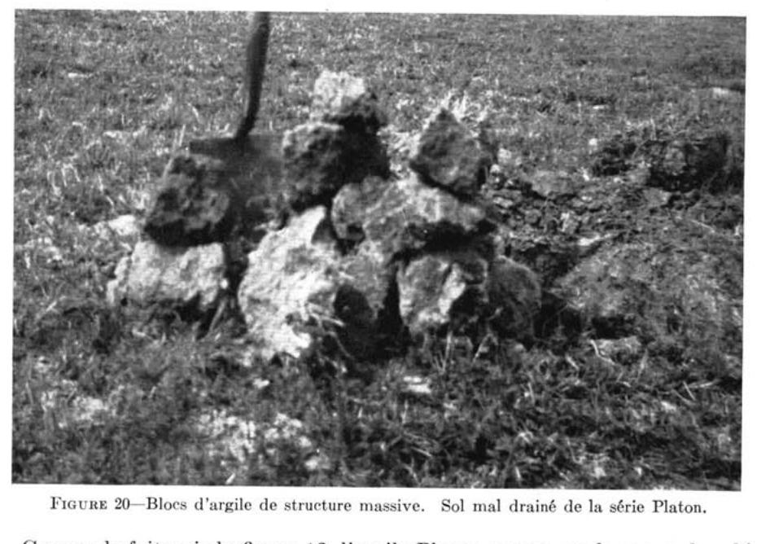
FIGURE 20 — Blocs d'argile de structure massive. Sol mal drainé de la série Platon.
Comme le fait voir la figure 12, l'argile Platon repose sur le roc ou le schiste d'Utica à de faibles profondeurs, soit entre 1 à 2½ pieds.
La végétation arborescente, dont on observe plusieurs reliques aujourd'hui, est composée de cèdres, d'épinettes noires et de mélèzes de taille rabougris. On observe aussi, dans le sous-bois, une grande abondance d'aulnes ainsi qu'un tapis végétal clairsemé et contenant beaucoup de carex.
Le profil de l'argile Platon peut se décrire comme suit :
Horizons
Épaisseurs (po.)
Description
Ao
1½-2
Horizon d'humus brun très foncé (10YR 2/2), peu minéralisé, sans structure; pH: 5.5.
G1
4-6
Horizon de glei (réduction maximum) gris foncé (10YR 4/1), teinté d'humus entraîné; argile lourde, de consistance très plastique; structure massive; pH: 5.3.
G2
6-8
Argile lourde gris foncé à gris très foncé (10YR 2/1 à 3/1), teintée par l'humus entraîné; structure massive; consistance très plastique (collante); pH: 6.0.
Cg
4-4½
Argile à loam limono-argileux de coloration grise (7.5YR 5/0) avec mouchetures de rouille de teinte brun vif (7.5YR 5/8); structure massive, moins plastique que celle de l'horizon précédent; pH: 7.0.
D
à 20″
Substratum: roc constitué de schistes argileux ou argilo-limoneux d'Utica (formation de Lotbinière).
N.B.: Couleurs déterminées sur sol séché à l'air.
Agriculture
L'argile Platon n'est à peu près pas cultivée, mais laissée en bois ou utilisée comme pacage. Dans les terrains en culture comprenant les argiles Tilly et Joly ainsi que Platon, on remarque que les parties basses, occupées par cette dernière, sont parfois cultivées au prix de grandes difficultés.
Le plus grave inconvénient de ce type de sol est celui d'avoir de très mauvaises propriétés physiques, notamment une structure et une texture qui laissent difficilement pénétrer l'air et l'eau.
De plus, ces sols sont généralement minces sur roc et très acides en surface. Ils requièrent de fortes applications de pierre à chaux (3 à 4 tonnes). Le fumier ou les engrais verts peuvent contribuer à l'amélioration des propriétés physiques de ces sols.
Sols formés de tills divers plus ou moins remaniés par l'eau
Les sols provenant de till glaciaire se rencontrent fréquemment dans les Basses Terres du Saint-Laurent. Il est vrai que ceux-ci ont été passablemet remaniés par les eaux de la Mer Champlain, mais l'action de celles-ci n'a pas été favorable à leur complet remaniement, d'où leur nom de "till remanié". Ce groupe de sols, issus de tills remaniés, comprend neuf séries: Henryville, Bedford, St-Sylvestre, Deschaillons, Raimbault, Dosquet, des Pins, Mawcook et de l'Ail. Au point de vue textural et lithologique, ces sols sont très variés. En effet, certains, tels ceux d'Henryville et Bedford, ont une texture moyenne à lourde et proviennent de matériaux calcaires, tandis que d'autres, tels ceux de St-Sylvestre, Deschaillons et Raimbault, sont de texture légère et constitués de matériaux acides laurentiens. Enfin, les séries Dosquet, des Pins, Mawcook et de l'Ail sont de texture légère et proviennent de matériaux mixtes, c'est-à-dire d'un mélange de matériaux acides et calcaires. Généralement ces sols contiennent des pierres en surface et dans leurs profils.
HENRYVILLE (105 acres)
Le loam Henryville est presqu'entièrement localisé dans la paroisse de St-Antoine-de-Tilly. A cause de sa très petite étendue, a peu d'importance au point de vue agricole dans le comté. Ce type de sol est mince, sur roc calcaire, et son épaisseur varie de dix à vingt pouces. A maints endroits le roc calcaire affleure. La topographie est légèrement à fortement vallonnée. Pour cette dernière raison, le drainage est très bon, voire excessif, ce qui rend le sol sujet à la sécheresse, tout particulièrement là où le sol est trop mince sur le roc.
La surface a une réaction neutre ou alcaline, à cause des fragments de pierres calcaires qu'elle contient. A ce point de vue, les sols Henryville sont, avec certaines parties des sols Ste-Philomène, les sols les plus riches en chaux du comté.
Agriculture
A cause de leur forte teneur en carbonates de calcium actifs et en dépit de leur manque de profondeur, les sols Henryville conviennent particulièrement bien à la culture des légumineuses, notamment celles du trèfle et de la luzerne. Cette dernière est de belle venue sans application aucune de pierre à chaux et peut donner des rendements de 2 à 3 tonnes (2 coupes par saison) suivant l'abondance et la répartition des pluies du printemps et de l'été.
Les rendements en grain sont variables, mais généralement bons, au cours des années pluvieuses. Le sol Henryville est un sol "hâtif" qui, lorsqu'il est situé à proximité des marchés, peut être avantageusement utilisé pour certaines cultures de jardinage et de "primeurs".
BEDFORD (24,823 acres)
Les sols Bedford comptent trois types 1° le loam sablo-argileux Bedford; 2° l'argile Bedford; 3° l'argile Bedford, phase mince. Ces trois types proviennent d'un till de texture variable, mais généralement calcaire et à texture de loam argileux.
LOAM SABLO-ARGILEUX BEDFORD (15,003 acres)
Parmi les types de sols de la série Bedford, le loam sablo-argileux est le plus important. On observe ce dernier dans les paroisses de St-Édouard, Ste-Croix et St-Louis de Lotbinière.
La topographie est celle d'une plaine légèrement ondulée à vallonnée ou celle d'une plaine unie, avec une pente vers le nord. Là où le microrelief est assez accentué, les sommets des élévations sont coiffés de sols podzolisés nettement plus sableux et graveleux, qui ont été apparents à ceux de la série St-Antoine.
Le drainage est généralement lent. Avant d'être défrichés, ces sols contenaient une forte proportion de blocs erratiques.
Le loam sablo-argileux Bedford est relativement riche en humus bien décomposé. La végétation naturelle, d'après les rares boisés existants, devait être, à l'origine, constituée d'érable rouge, de merisier, d'orme et d'une bonne proportion d'épinette blanche et de sapin.
La description du loam sablo-argileux Bedford est la suivante :
Horizons
Épaisseurs (po.)
Description
Ac
6-7
Loam argileux à sablo-argileux brun gris très foncé (10YR 3/2); structure granuleuse; friable, mais tenace; pH: 5.8.
Ae
0-1
Horizon discontinu. Visible en sols vierges et parfois en sols cultivés, lorsque le sol est ensablé en surface. Loam à loam sableux gris blanc, sans structure; friable; pH: 4.5-5.5.
BG
4-7
Loam argileux brun jaune (10YR 5/4), lentilles de sable grossier parfois présentes, légèrement compact; pH: 6.0-7.0.
C1
8-10
Loam sablo-argileux à loam brun gris foncé (10YR 4/2), avec petites pierres, compact; pH: 7.0-7.5.
C2
à 22" env.
Loam brun gris foncé (2.5Y 4/2), pierreux, très compact, fait effervescence au contact de HCl dilué (till calcaire).
ARGILE BEDFORD (8,308 acres)
La majeure partie de l'argile Bedford est cantonnée dans la paroisse de St-Édouard. Elle diffère du loam sablo-argileux, par sa texture plus argileuse et par une plus grande teneur en carbonates libres plus près de la surface, soit entre 10 et 20 pouces. Dans la plupart des cas, l'argile Bedford ne requiert pas de chaux.
La description de l'argile Bedford en sols cultivés se lit comme suit :
Horizons
Épaisseurs (po.)
Description
Ac
7-8
Argile humifère de teinte noire (10YR 2/1); structure granuleuse bien développée, ferme, mais se brisant facilement sous la pression des doigts; se fendille et donne un retrait considérable en se desséchant; pH: 6.5-7.0.
BG
12-15
Argile brun gris très foncé (2.5Y 4/2), avec petites pierres; mouchetures de rouille plutôt nettes, olive clair (2.5Y 5/4), cimentée ou très compacte, massive; effervescence avec HCl dilué entre 10 et 20 po; pH: 7.5 et plus.
C
à 23" env.
Till calcaire: argile sableuse à loam argileux brun très foncé (2.5Y 4/2) peu ou pas mouchetée de rouille, très compacte même parfois cimentée en temps sec; vive effervescence avec HCl dilué; pH: 7.5-8.3.
ARGILE BEDFORD — phase mince (1,512 acres)
Dans la paroisse d'Issoudun, l'argile mince Bedford repose sur le roc, lequel est situé à 2 pieds et moins de profondeur. En maints endroits, le roc sous-jacent est veiné de calcite ou contient des lits de schistes calcaires.
Au point de vue agricole, cette argile mince Bedford est sujette à souffrir de la sécheresse, spécialement au cours des années plutôt sèches.
De plus, elle possède en maints endroits une plasticité et une ténacité plus grandes que celles des deux autres types de Bedford. Cette différence provient sans doute du fait qu'elle contient une plus forte proportion d'argile, provenant des schistes Utica, lesquels abondent à l'est du comté.
La description de l'argile Bedford — phase mince est la suivante :
Horizons
Épaisseurs (po.)
Description
Ac
5-6
Argile humifère noire (5YR 2/1); structure polyédrique grossière; difficile à émietter à l'état sec; pH : 6.2-7.2.
BG
8-10
Loam argileux brun à brun jaune clair (10YR 6/4); structure polyédrique grossière; parfois massive, consistance ferme, mais friable; fait effervescence généralement avec HCl dilué; pH9 7.2-7.8.
C-D
à 17″ env.
Roc : schistes noirs veinés parfois de calcite. La présence de carbonates libres dans le sol est conditionnée par celle de la calcite et de lits calcaires dans le roc.
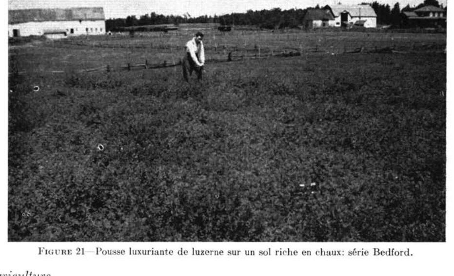
FIGURE 21 — Pousse luxuriante de luzerne sur un sol riche en chaux : série Bedford.
Agriculture
Les trois types de sols de la série Bedford précédemment décrits, sont considérés, avec ceux de la série Lévrard, comme les meilleurs du comté pour la grande culture et l'industrie laitière. Mentionnons toutefois que l'argile Bedford, à cause de la présence plus fréquente de carbonates actifs à de faibles profondeurs, offre plus de possibilités pour la culture des légumineuses, notamment celle de la luzerne.
La majeure partie des sols Bedford est cultivée. Les principaux problèmes de ces sols sont : le drainage, l'addition modérée de pierre à chaux et d'engrais chimiques riches en phosphates.
En dépit du fait que le sous-sol contienne des réserves de chaux, la surface, notamment celle du loam sablo-argileux, est généralement trop acide pour la prise de la luzerne; c'est pourquoi l'application de 1 à 1½ tonne de pierre à chaux corrigerait ce défaut. L'analyse du sol, c'est-à-dire la détermination du besoin de chaux, est recommandée.
Les rendements en grain et en foin de légumineuses peuvent atteindre, par les années normales, 45 à 50 minots et 2 à 3 tonnes respectivement. Dans maints cas, la culture du trèfle Ladino a donné de bons résultats, notamment sur l'argile Bedford.
ST-SYLVÈRE (952 acres)
Le loam sablo-pierreux St-Sylvère occupe quelques petites étendues, à la limite des comtés de Lotbinière et de Nicolet, dans les paroisses de Vien et de Fortierville. Il provient d'un till très remanié et constitué de grès et de schistes acides.
La topographie est ondulée ou fortement vallonnée. Le drainage est modéré-ment bon à imparfait. Dans certains cas, les sols St-Sylvère contiennent une assez forte proportion de matériaux gréseux, dans le sous-sol et la roche-mère, ce qui leur assure un meilleur drainage.
Les rares boisés sont composés principalement d'érable à sucre et d'érable rouge, de bouleau, de tremble, de sapin et d'épinette. Les pacages non améliorés contiennent beaucoup de spirée, de danthonie et de fraises.
La description du profil du loam sablo-pierreux St-Sylvère est la suivante :
Horizons
Épaisseurs (po.)
Description
Ao
1-3
Humus noir peu minéralisé; pH: 4.8-5.0.
A2
½-1½
Loam sableux, gris cendré, avec petites pierres, sans structure; friable; pH: 5.0.
B2g
6-8
Loam sablo-pierreux, brun jaune, avec taches de rouille à la base; ferme; pH: 5.2-5.5. Montre parfois une concentration d'humus à la partie supérieure (B2h).
G
8-12
Loam sablo-pierreux, jaune pâle, avec de nombreuses taches de rouille, ferme et un peu compact; pH: 5.4-5.8.
C
à 23" env.
Till remanié, loam à loam sableux contenant généralement beaucoup de pierres; ferme, très compact, gris brun à brun jaune; pH: 5.8-6.5.
Agriculture
Les petites étendues de sols de la série St-Sylvère sont peu cultivées, et contiennent généralement une bonne quantité de gros blocs erratiques qui nuisent à leur mise en valeur. On observe parfois certains terrains cultivés dont les pierres ont été ramassées et amoncelées en "digues" au milieu des champs.
La faible teneur en matières organiques, la grande acidité et le niveau relativement faible de la fertilité constituent les problèmes les plus importants.
Pour l'obtention de meilleurs rendements de grains et de foin, spécialement de légumineuses, l'addition de pierre à chaux, de préférence dolomitique, et celle d'engrais chimiques riches en phosphates est indispensable.
Une certaine portion de ce type de sol est utilisée pour la culture de la pomme de terre. Les applications d'engrais chimiques doivent être fortes (1,200 liv. et plus) pour l'obtention de gros rendements. Afin d'éviter les risques de la "gale commune" des pommes de terre, toute addition de chaux ne devra être faite qu'à petites doses et dans l'année qui suit cette culture. Dans tous les cas, un contrôle rigide du besoin de chaux, par l'analyse du sol au laboratoire, est préférable.
DESCHAILLONS (2,048 acres)
Les sols de la série Deschaillons se confinent entièrement aux paroisses de Deschaillons et de Parisville, soit à l'ouest du comté de Lotbinière. On les observe presqu'invariablement en association avec ceux de Raimbault, avec lesquels ils forment une séquence (catena) de sols, dont le drainage varie de bon à imparfait.
Le matériau originel qui a donné naissance aux sols Deschaillons est constitué d'un till de loam sableux très remanié, généralement acide, mais reposant sur un matériau généralement calcaire à des profondeurs variant entre 18 et 36 pouces. Le calcaire, à ces profondeurs, proviendrait de grès calcaires de la formation Lorraine. Au contact de HCl dilué, ce dernier donne une vive effervescence.
La topographie est celle d'une plaine fortement ondulée à légèrement vallonnée; l'altitude moyenne à laquelle on observe ces sols varie entre 100 et 200 pieds au-dessus du niveau de la mer.
Les sols Deschaillons sont bien drainés. La surface est de coloration gris foncé et les labours, ainsi que l'observation du profil, permettent de déceler toujours la présence d'un horizon de délavage ou d'appauvrissement, appelé A2, de coloration blanche ou gris cendré. A l'état vierge, le sol montre un horizon A2 continu.
Les sols Deschaillons sont très pierreux et l'on note d'abondantes pierres, parfois de dimensions énormes, d'origine laurentienne.
La végétation forestière est composée d'érable à sucre, d'érable de pennsylvanie, de frêne, d'un peu de tilleul, de merisier et de sapin. La strate herbacée est constituée de trille ondulée, de lycopode à massue, de cornouiller du Canada, de clintonie boréale, de smilacine à grappe, de médéole de Virginie et de maianthème du Canada.
Le profil du loam sableux Deschaillons montre les caractéristiques suivantes:
Horizons
Épaisseurs (po.)
Description
Ao-A1
1-3
Horizon d'humus noir (7.5YR 2/0) (mor), sans structure, très peu minéralisé; pH: 3.4.
A2
2-4
Loam sableux à loam gris brun pâle (10YR 6/2) friable, sans structure, plutôt continu; pH: 3.9.
B21
3-5
Loam sableux brun rouge (5YR 4/3) à brun rouge foncé (5YR 3/3), ferme, pierreux, avec accumulation d'humus; pH: 4.4.
B22
3-4
Loam sableux jaune pâle (2.5Y 7/4) à brun jaune foncé (10YR 4/4), avec pierres; friable; pH: 5.1.
C
5-10
Loam sableux grossier, gris brun clair (2.5Y 6/2) à brun jaune (10YR 5/4), avec pierres et gravier; ferme; pH: 6.3.
D
à 25″ env.
Till de loam sableux, gris clair (2.5Y 7/3) à olive pâle (2.5Y 5/4), avec pierres et gravier; ferme; pH: 6.3.
Agriculture
Le niveau de fertilité des sols Deschaillons est plutôt faible. Des applications libérales de pierre à chaux, de fumier et d'engrais chimiques composés sont nécessaires pour grande culture et l'industrie laitière.
Par les années particulièrement sèches, ces sols ont tendance à souffrir de la sécheresse. Une fois les sols bien aménagés, les rendements en grain et en foin peuvent atteindre 40 minots et 2½ tonnes respectivement. Certains cultivateurs ont réussi à obtenir une bonne pousse de luzerne, en appliquant de 4 à 6 tonnes de pierre à chaux à l'acre.
Par ailleurs, comme ces sols, généralement associés à ceux de Raimbault, contiennent assez souvent une forte proportion de pierres et de blocs erratiques, ils sont généralement peu cultivés et laissés en bois ou utilisés comme pacage.
Raimbault (3,297 acres)
Les sols de la série Raimbault occupent plusieurs petites étendues de terre à l'ouest du comté de Lotbinière, soit dans les paroisses de Deschaillons, Ste-Emmelie et Lotbinière, où ils sont associés généralement aux sols bien drainés de la série Deschaillons.
Le matériau originel est constitué d'un till de loam sableux très remanié et contenant fréquemment des carbonates libres à des profondeurs variant de 18 à 30 pouces.
Le Raimbault occupe les pentes et les parties inférieures des terrains fortement ondulés à légèrement vallonnés, tandis que le Deschaillons, dont il a été question précédemment, en occupe les sommets et les parties convexes.
Le drainage est mauvais à imparfait. La surface est de coloration grise à gris très foncé et généralement fortement acide (pH: 5.0-5.5). Le sous-sol fait voir parfois un horizon gris, dit de réduction, généralement parsemé de mouchetures de rouille, dues au mauvais drainage et à la présence saisonnière d'une nappe phréatique.
À l'origine, le Raimbault était passablement parsemé de pierres et de maints gros blocs erratiques. De nos jours, une grande partie de ce sol contient encore de nombreuses petites pierres, en dépit du fait qu'il ait été épierré.
Les principales essences forestières sont: l'orme, le cèdre, le cerisier, le bouleau, le sapin et l'épinette. Les pacages contiennent beaucoup de fraises et de spirée cotonneuse.
Le profil du sol cultivé du loam sableux Raimbault est le suivant:
Loam sableux gris, friable, parfois absent; pH: 5.0-5.5.
G
8-10
Loam sableux gris brun pâle avec mouchetures de rouille, pierreux, consistance ferme; pH: 5.5-7.5.
C
à 18″ env.
Till de loam sableux, compact, avec pierres; fait effervescence à des profondeurs variables, mais généralement en deçà de 3 pieds; pH: 7.0-8.3.
Agriculture
Les diverses petites étendues de sols Raimbault sont peu cultivées. Leur niveau de fertilité est généralement meilleur que celui des sols Deschaillons.
Pour l'obtention de meilleurs rendements, les conditions de drainage doivent être améliorées et l'addition de pierre à chaux, de préférence dolomitique, est nécessaire. Les taux d'application de pierre à chaux varieront de 2 à 4 tonnes. Une fois améliorés, ces sols pousseraient bien la luzerne.
Dosquet (8,299 acres)
Les sols de la série Dosquet se cantonnent notamment dans les paroisses de St-Agapit et de Dosquet. Ils sont associés généralement aux sols des séries des Pins et Mawcook, avec lesquels ils forment une catena ou séquence de sols, au point de vue drainage; les sols bien drainés sont appelés Dosquet, tandis que ceux dont le drainage est imparfait ou mauvais portent respectivement les noms de séries: des Pins et Mawcook.
Le matériau originel des sols Dosquet, comme celjui des sols des Pins et Mawcook est constitué d'un till loameux et pierreux, qui a été plus ou moins remanié en maints endroits par les eaux de la mer Champlain. La roche-mère est invariablement calcaire, à moins de deux pieds, dans les séries des Pins et Mawcook, tandis que la chaux semble avoir été entraînée et délavée à des profondeurs de 3 pieds et plus, dans les sols Dosquet.
Le Dosquet occupe les parties élevées des terrains légèrement vallonnés. Il est pierreux, fortement acide et montre même, en terrains labourés, un horizon gris cendré (A2).
La végétation arborescente des nombreux boisés actuels est constituée de sapins, d'épinettes, de merisiers, de hêtres et d'érables. Le parterre végétal contient une abondance de cornouiller du Canada, de maienthème et de dalibarde rampante.
Le profil, en sols vierges du loam sablo-pierreux Dosquet est le suivant :
Loam sablo-graveleux (10YR 5/4), friable, structure très finement granuleuse, peu développée; pH: 5.8 - 16.0.
C
3-6
Till de loam sableux et pierreux brun rouge (5YR 4/3) fragments d'ardoises et de grès; pH: 5.8 - 16.0.
D1
½-3
Horizon à texture de loam argileux, parfois présent, brun rouge (10YR 5/3 et 5YR 5/3), un peu plastique, avec taches blanchâtres; pH: 5.3.
D2
à 36″ env.
Till graveleux et pierreux gris brun foncé (10YR 4/2), gréseux; fait rarement effervescence avec HCl dilué; pH: 5.7 - 7.4. N.B.: Les grès ont diverses teintes.
Agriculture
Les sols Dosquet ont un niveau de fertilité plutôt faible. Ils sont pauvres en matières organiques et requièrent des applications de pierre à chaux dolomitique (2-4 tonnes) et d'engrais composés. Au surplus, ces sols étaient très pierreux, à en juger par les nombreuses clôtures de pierres ou les digues de roches entassées dans les champs.
Pour la culture mixte et l'industrie laitière, les rendements peuvent être accrus considérablement, voire même doublés, par l'addition de pierre à chaux, de fumier et d'un peu d'engrais chimiques composés. Par les années plutôt humides, les rendements peuvent atteindre, une fois les sols améliorés, de 30 à 40 minots pour le grain et de 1½ à 2 tonnes, pour le foin. D'une manière générale, ces sols ne conviennent pas à la culture de la luzerne, mais pourraient être utilisés pour celles du pommier et surtout pour celles des pommes de terre, des fraises et des framboises.
Des Pins (11,342 acres)
Les sols de la série des Pins forment avec ceux des séries Dosquet et Mawcook une association particulière, dans les paroisses de St-Agapit, Dosquet et St-Flavien.
La roche-mère est constituée de till loameux et pierreux, assez souvent calcaire entre 2 et 2½ pieds. Cette série de sols occupe généralement les pentes plutôt humides des terrains fortement ondulés à légèrement vallonnés. Les amoncellements ou "digues" de roches de toutes tailles, au centre des champs ou le long des clôtures, font présumer que ces sols étaient naturellement très pierreux à l'origine.
La végétation arborescente est constituée de conifères et d'essences feuillues. Au sapin et à l'épinette s'ajoutent le bouleaux gris, l'érable rouge et l'érable argenté. L'érablière occupait probablement une plus grande étendue de ces sols jadis, mais, depuis la coupe de celle-ci, les repousses sont constituées principalement de conifères et de trembles.
Le profil vierge du loam sablo-pierreux des Pins est le suivant :
Horizons
Épaisseurs (po.)
Description
Aoo
½
Feuilles et tiges non décomposées.
Ao-A1
3-4
Loam sableux brun foncé; humus moyennement décomposé; structure peu développée; friable, fragments de grès; pH : 4.4.
Loam sableux graveleux et pierreux, avec mouchetures de rouille, contenant parfois des lentilles de texture argileuse et de consistance plastique. La coloration varie, à cause des pierres dont les couleurs sont variées, mais la teinte rougeâtre ou brun rouge prédomine; pH : 6.0 - 7.2.
G
8-10
Horizon à peu près semblable au précédent, sauf que les couleurs sont de teintes plus pâles, les mouchetures de rouille sont même masquées par la teinte des pierres (grès surtout). Effervescence parfois avec HCl dilué; pH : 7.5 - 7.9.
C
à 26″ env.
Roche-mère : till de loam sableux avec pierres de diverses teintes (grès rouges et verts de Sillery,) granites, grès et ardoises grises parfois calcaires; pH : 7.5-8.0.
FIGURE 22.—Impressionnante digue de roches sur les sols des séries Mawcook et des Pins.
Agriculture
A cause de leur meilleur pouvoir de rétention de l'eau, les sols des Pins sont meilleurs que ceux de la série Dosquet, spécialement pour les cultures de grain et de foin. Pour éviter les excès d'eau éventuels, des travaux de drainage ordinaires, à l'aide de bons fossés, sont nécessaires.
L'addition de pierre à chaux, de phosphates et de matières organiques est aussi nécessaire à l'obtention d'une production économique. A ces conditions, les rendements en grain peuvent atteindre 35 à 40 minots, et ceux en foin de légumineuses à base de trèfle, de 2 à 2¼ tonnes.
Mentionnons que l'abondance des pierres nuit aux façons culturales et à la mise en valeur des sols vierges.
MAWCOOK (25,157 acres)
La série Mawcook est presqu'entièrement confinée aux paroisses de St-Agapit, Dosquet et St-Apollinaire. La couleur constitue l'un des principaux critères de distinction de cette série de sols du comté. En effet, la série Mawcook présente toujours des profils de diverses teintes où le rouge et le gris prédominent. La teinte rouge ou brun rouge proviendrait des schistes et des grès de Sillery et/ou du complexe St-Germain. Quoique cette série provienne d'un till plus ou moins remanié et de texture assez variable, on y reconnaît généralement deux types de sols: le loam sablo-argileux et le loam sablo-pierreux Mawcook.
LOAM SABLO-PIERREUX MAWCOOK (16,318 acres)
Ce type occupe généralement les étendues relativement planes ou en forme de cuvettes aux abords des coteaux. Il contient des lentilles ou des horizons de textures hétérogènes. Enfin, il est très pierreux et a un drainage généralement mauvais.
Les sols situés entre les localités de St-Agapit et de Dosquet possèdent un profil particulièrement pierreux et gréseux. Les sous-sols sont très compacts et l'on observe la zone de carbonates libres à 2 pieds environ.
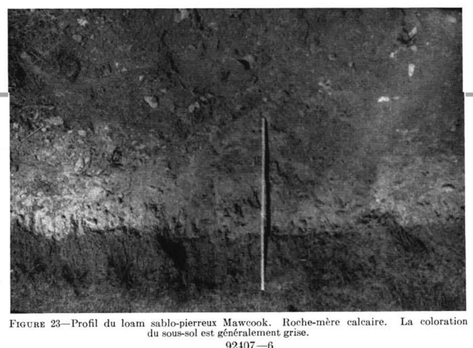
FIGURE 23 — Profil du loam sablo-pierreux Mawcook. Roche-mère calcaire. La coloration du sous-sol est généralement grise. 92407—6
La végétation actuelle de nombre de boisés, sur ce type de sol, est composée principalement de cèdres, d'aulnes, d'érable rouge et d'un peu de conifères: épinettes et sapins. Dans les pacages, on note la présence des espèces suivantes: verge d'or, renoncule âcre, carex, argentine ou potentille ansérine, oxalide d'Europe et chardon des champs.
Horizons
Épaisseurs (po.)
Description
A1
0-5
Loam sablo-pierreux brun très foncé (10YR 2/2). Structure granulaire, humus bien minéralisé, un peu plastique; pH: 5.3.
A2g
3-5
Loam argileux avec minces lits de sable brun gris (10YR 5/2), structure massive, consistance collante; pH: 6.0-6.3. Horizon plus ou moins mélangé par le labour.
G1
4-5
Loam à loam argileux avec lentilles de sable, brun foncé (10YR 4/3), avec teintes rouges dues aux fragments de schistes rouges et de grès plus ou moins altérés; friable, peu de structure; tacheté de rouille; pH: 7.0.
G2
8-10
Loam argileux avec sable peu incorporé ou mélangé, brun gris foncé (10YR 4/2) avec teintes rouges et des mouchetures de rouille brun vif (7.5YR 5/6), structure massive, consistance collante, assez souvent calcaire; pH: 7.2-7.6.
C
à 25" env.
Roche-mère: till de loam sableux et pierreux, gris foncé (10YR 4/1) avec taches brunes (10YR 4/3), effervescence avec HCl dilué; grès calcaire et veines de calcite; pH: 7.8.
Agriculture
Grâce à des travaux importants de drainage et d'épierrement, une forte proportion des sols de ce type peut être considérée aujourd'hui comme bonne pour la culture mixte et l'industrie laitière.
Ce Mawcook contient beaucoup de matières organiques bien décomposées, mais généralement trop acides pour les cultures, spécialement celles du trèfle rouge et de la luzerne. Cette dernière a été peu cultivée sur cette série et d'autres essais devraient être tentés. Sur sites drainés et chaulés, la luzerne a toutes les chances de survie, à cause de la richesse du sous-sol en chaux. En maints endroits, le trèfle Ladino est de belle venue.
Pour mieux équilibrer ce sol, au point de vue fertilité, l'addition d'engrais riches en phosphates et en potasse est fortement recommandée. En dépit de l'alcalinité du sous-sol, l'addition de pierre à chaux, à raison de deux à trois tonnes à l'acre, s'avère nécessaire, pour neutraliser la surface acide du sol et favoriser ainsi la prise des légumineuses.
LE LOAM SABLO-ARGILEUX MAWCOOK (8,839 acres)
A maints endroits, notamment dans la paroisse de St-Apollinaire, la surface et certains horizons du sol contiennent une plus forte proportion d'argile. Le profil présente une gamme bizarre de teintes passant du gris au brun et au rouge. La coloration rouge proviendrait de fragments rocheux, gréseux ou schisteux des formations Sillery et St-Germain. L'argile est mélangée de sable (grit) plus ou moins bien incorporé.
Au point de vue agricole, mentionnons que le loam sablo-argileux contient moins de pierres et possède un niveau de fertilité supérieur à celui du type plus léger précédemment décrit; mais, par contre, le drainage et les façons culturales sont plus difficiles à effectuer.
DE L'AIL (100 acres)
La très petite étendue des sols de la série de l'Ail est limitée entièrement au sommet et au flanc sud de la protubérance dite de St-Flavien. La texture de
la surface est celle du loam sableux fin. Ce sol provient de la décomposition “in situ” de roches intrusives (diabases) et/ou de till loameux d'origine locale. Il est mince et repose généralement sur le roc, à des profondeurs variant entre dix-huit et vingt-quatre pouces.
La topographie est celle d'un dôme fortement convexe qui semble refléter la forme du socle rocheux sous-jacent. Le drainage est très bon et le sol, spécialement à la base du profil, est constitué de pierres qui s'effritent et se détachent assez facilement.
La végétation naturelle est celle de l'érablière renfermant du hêtre, du merisier et un peu de conifères, tels l'épinette blanche et le sapin. Le profil ne montre que peu ou pas d'horizon de délavage (A2), et l'humus est bien minéralisé (horizon A1). Cette série appartient plutôt au brun podzolique qu'au podzol, comme le fait voir la description suivante:
Horizons
Épaisseurs (po.)
Description
A1
0-4
Loam sableux, brun foncé, humus bien minéralisé; très friable; pH: 5.0-5.2.
B
10-12
Loam graveleux et pierreux, brun rouge foncé, uniforme; structure finement granuleuse bien développée; perméable; fragments rocheux (roches intrusives); pH: 5.4-5.7.
C
à 16″ env.
Horizon généralement absent. Till loameux et pierreux; ouvert; pH: 6.4.
D
à 18″ env.
Substratum: roc constitué de roches intrusives (diabases) qui s'effritent et se fendillent assez facilement dans les premiers pouces.
Agriculture
Les sols de l'Ail sont peu importants au point de vue agricole, à cause de leur faible étendue. Leur besoin en chaux et en éléments de fertilité s'apparente à celui de la série Ste-Hélène.
II — Sols des Hautes Terres Appalachiennes
Les sols des Hautes Terres Appalachiennes, dans le comté de Lotbinière, ont été subdivisés en deux groupes, à savoir: 1° les sols graveleux de la série Palmer, provenant de dépôts fluvio-glaciaires et 2° les sols à texture de loam des séries Leeds, Woodbridge, Ste-Marie et Brompton formées aux dépens de till glaciaire.
Les sols graveleux
Les sols graveleux des Hautes Terres Appalachiennes ont fait l'objet d'une seule série de sols: la série Palmer.
PALMER (2,275 acres)
Les sols de la série Palmer comprennent un type et une phase de sols: le loam sablo-graveleux Palmer et le loam sablo-graveleux Palmer, phase en kames.
LE LOAM SABLO-GRAVELEUX PALMER (1,755 acres)
Le loam sablo-graveleux Palmer est entièrement localisé dans la paroisse de St-Sylvestre où il occupe les terrasses ondulées le long des rivières.
A cause du substratum graveleux et très perméable, le drainage est bon, voire même excessif. Ce type de sol est généralement pierreux en surface et dans tout le profil, ce qui rend parfois les façons culturales plus difficiles à effectuer. La texture ou plutôt la proportion respective de sable et de gravier dans le profil est très variable. La teneur en matières organiques est généralement faible; les
horizons d'appauvrissement (A2) et d'accumulation (B2h) sont continus et nettement visibles. Au point de vue génétique, type de sol appartient au groupe des podzols.
La végétation arborescente naturelle est composée d'érable à sucre, de hêtre et de merisier. Dans les pacages, on observe surtout la danthonie à épi, les fraises et les épervières. La couleur de la surface du sol cultivé est d'un brun gris foncé (10YR 4/2).
La description du profil du loam sablo-graveleux Palmer à l'état vierge est la suivante:
Horizons
Épaisseurs (po.)
Description
A0
½–¾
Matières organiques légèrement décomposées (mor) non minéralisées. pH: 4.2.
A1
–
Généralement absent.
A2
1–1½
Horizon continu. Sable gris rose (5YR 6/2) sans structure, friable; pH: 4.4.
B21
1-2
Loam sableux à sable brun rouge foncé (5YR 3/3) avec des lits de gravier sableux; pH: 4.6.
B22
7-8
Gravier et sable brun vif (7.5YR 5/6), poreux. pH: 5.6.
B3
variable
Gravier et sable brun jaune (10YR 5/6), perméables et lâches; pH: 5.6.
C
à 30" env.
Sable brun jaune (10YR 5/6), lâche et perméable, contenant du quartz, des schistes verdâtres, des ardoises. Note: on observe des lits inclinés de gravier.
Agriculture
Ce type de sol a un niveau de fertilité plutôt bas. Il requiert de fortes applications d'engrais chimiques composés et de pierre à chaux, pour la grande culture et l'industrie laitière. À cause de son faible pouvoir d'absorption pour l'eau et les engrais, l'addition de matière organique sous forme de fumier ou d'engrais verts s'avère nécessaire. Ajoutons que quelques cultivateurs y produisent du maïs à ensilage avec succès.
Dans bien des cas, ce type contient trop de pierres; c'est pourquoi il serait préférable de le réserver à l'érablière et au boisé.
Le loam sablo-graveleux Palmer — phase: en Kame (520 acres)
A maints endroits, le loam sablo-argileux Palmer prend la forme de cônes ou de cordons graveleux. La texture défavorable et la topographie abrupte rendent ce sol peu utilisable pour l'agriculture. On utilise avantageusement son gravier pour la construction des routes.
Certaines buttes de la série Palmer contiennent presqu'exclusivement des micaschistes verdâtres avec très peu de matériaux gréseux. Ces très petites étendues ont été incluses avec les sols Palmer. Dans une étude plus détaillée, il y aurait lieu de distinguer d'autres types ou phases de la série Palmer.
Sols à texture de loam formés aux dépens de till appalachien
Les sols formés aux dépens de till appalachien comprennent quatre séries, à savoir: Leeds, Woodbridge, Ste-Marie et Brompton. Comme ces dernières proviennent toutes d'une même roche-mère, soit un till loameux de teinte olive, et ne diffèrent entre elles que par leurs conditions de drainage, on dit qu'elles forment une séquence ou catena de sols. La position topographique de ces diverses séries varie, ce qui peut servir de guide pour la localisation de chacune d'elles sur le terrain. En effet, le Leeds occupe les endroits élevés ou les sommets bien drainés, tandis que le Woodbridge s'observe sur les pentes plutôt longues et le Ste-Marie dans le bas des pentes, aux endroits à drainage lent; le Brompton, enfin, est un sol mal drainé qui occupe les parties les plus basses du relief.
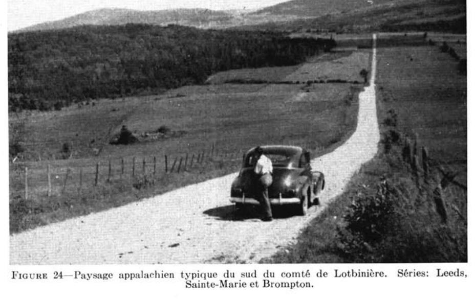
FIGURE 24 — Paysage appalachien typique du sud du comté de Lotbinière. Séries : Leeds, Sainte-Marie et Brompton.
LEEDS (35,659 acres)
La série Leeds occupe la majeure partie des paroisses situées au sud du comté, c'est-à-dire celles de St-Patrice-de-Beaurivage, de St-Agathe et de St-Sylvestre. Bref, cette série de sols occupe presque toute cette portion du comté située en territoire appalachien. Elle compte un type et deux phases : le loam Leeds; le loam Leeds, phase mince sur roc; et le loam Leeds, phase ondulée. Ces deux dernières phases, comme l'indiquent les qualificatifs qui les désignent, indiquent des variations mineures, par rapport au type normal ou modal, soit dans l'épaisseur du sol sur le roc, soit dans la topographie. Dans le type normal, le roc se rencontre à 2 pieds environ et la topographie est généralement fortement vallonnée, voire même montueuse.
LOAM LEEDS (2,050 acres)
Le matériau originel est constitué d'un till de loam de teinte olive à brun gris et renferme des fragments d'ardoises grises, de schistes et de micaschistes. Mentionnons incidemment que le loam Leeds a une roche-mère semblable à celle du loam de la série Blandford des Cantons de l'Est. La différence essentielle entre le loam Leeds et le Blandford réside dans le degré de podzolisation; en effet, le Leeds est plus podzolisé et appartient au groupe des podzols, tandis que le Blandford appartient à celui des bruns podzoliques.
La topographie du loam Leeds est fortement vallonnée ou montueuse. Il occupe la plus forte proportion des pentes plutôt raides, lesquelles favorisent un drainage très bon voire même excessif.
A maints endroits, l'érosion a causé certains méfaits en favorisant l'entraînement au bas des pentes de fortes quantités d'éléments fins. En pays podzolique, le niveau de fertilité n'est pas naturellement élevé; c'est pourquoi le recours à un système de culture qui protège et maintienne en place les éléments fins est important; en effet, ce sont ces éléments fins qui fixent et emmagasinent la majeure partie des éléments de fertilité apportés par les applications de fumier, de pierre à chaux et d'engrais chimiques.
D'une manière générale, ce type de sol est extrêmement acide et montre un horizon de délavage gris et continu appelé A2. La plupart des sols sont trop pierreux pour être cultivables et des travaux d'épierrement sont nécessaires, à en juger par les nombreuses "digues" de pierres et les blocs erratiques disséminés ici et là.
La végétation arborescente naturelle observée sur le loam Leeds et sur les autres types est celle de l'érablière, dont la composition est la suivante : érable à sucre (Acer saccharum), hêtre (Fagus grandifolia), merisier (betula lutea), sapin, épinette blanche, pruche et érable de Pennsylvanie. Le parterre végétal renferme les espèces suivantes : mousses, maienthème, mitchella rampant, savoyane, trilles ondulé et dressé, faux sceau de Salomon, streptope rose, prenanthe et cornouiller du Canada. Dans les pâturages, la danthonie à épi, les fraises et l'épervière piloselle dominent.
Étant donné que le profil de sol du loam Leeds est sensiblement le même que celui des deux autres phases, nous ne donnerons ici que le profil à l'état vierge du loam Leeds :
Horizons
Épaisseurs (po.)
Description
Ao
-
Litière de feuilles semi-décomposées, non minéralisée, noir rouge (10R 2/1), de type mor graisseux; pH: 4.1.
A1
-
Loam brun foncé (7.5YR 4/4); horizon discontinu, structure granuleuse fine, humus bien minéralisé, très friable; pH: 4.2.
Loam brun vif (7.5YR 5/8); structure finement granulaire bien développée; friable et doux au toucher (fluffy). La coloration semble indiquer une accumulation de sesquioxydes et d'un peu d'humus. Fragments d'ardoises; pH: 4.7.
B22
4-6
Loam à loam sableux brun jaune à brun foncé (10YR 5/3), très friable, structure granuleuse fine; ardoises; pH: 4.7.
B3C1
8-12
Horizon absent ou très mince dans la phase mince. Loam brun gris à olive clair (2.5Y 5/21 à 5/4); structure granuleuse peu développée; friable, contient beaucoup de pierres plates (schistes et ardoises); pH: 4.8-5.0.
C2
à 24" env.
Roche-mère : till de loam olive clair (2.5Y 5/4), pierreux et compact; nombreux fragments d'ardoises plates, mica-schistes; pH: 4.9 à 5.5. N.B.: Là où le sol est mince sur roe ou érodé, la roche-mère se rencontre à 15"-16"
Agriculture
Le loam Leeds possède de belles propriétés physiques et se prête bien aux diverses façons culturales.
Il a, par ailleurs, un faible niveau de fertilité. De plus, il est fortement acide et généralement très pierreux.
Le loam Leeds a une topographie fortement vallonnée et est exposé à l'érosion "en nappes" (sheet erosion). Celle-ci est d'autant plus néfaste qu'elle est imperceptible à l'observateur non averti. La période la plus dangereuse pour ce genre d'érosion semble coïncider avec certaines pluies abondantes du printemps, lorsque les grains en terre ne sont pas encore levés.
On utilise le loam Leeds pour la grande culture, l'industrie laitière, l'acériculture et l'exploitation forestière.
D'une manière générale, ce type de sol peut être classé comme pauvre à moyennement bon pour la grande culture et l'industrie laitière. Pour l'obtention de bons rendements, il requiert de généreux amendements calcaires, soit de 2 à 4 tonnes de pierre à chaux dolomitique à l'acre, et l'addition de fumier et d'engrais chimiques composés.
La culture de la pomme de terre pourrait être intéressante sur ce type de sol, mais, dans les conditions actuelles, cette culture, telle que pratiquée, expose trop le sol aux méfaits de l'érosion. Elle ne serait recommandable que si l'on pratiquait un système de culture "en bandes" approprié aux conditions particulières de terrain. Ajoutons enfin que les produits de l'érable apportent des revenus d'appoint nécessaires aux cultivateurs. Cette culture est bien adaptée aux sols et les protège tout spécialement contre les riques d'érosion. Dans bien des cas, les revenus provenant des produits de l'érable et de l'exploitation forestière excèdent ceux provenant de la grande culture et de l'industrie laitière.
LOAM LEEDS, phase mince (19,369 acres)
Fréquemment, le loam Leeds est mince sur roc. Ce dernier se rencontre à 15 et 18 pouces de profondeur. La topographie est généralement très fortement vallonnée.
Cette phase, dite mince, du loam Leeds présente moins de possibilités agricoles et il est à conseiller de la réserver à l'érablière et à l'exploitation forestière.
LOAM LEEDS, phase ondulée (14,240 acres)
Aux abords du plateau apalachien, soit dans les paroisses de St-Patrice-de-Beaurivage et de Ste-Agathe, les sols ont une topographie moins accentuée que celle du loam Leeds que l'on rencontre plus au centre du plateau; d'où le nom de loam Leeds, phase ondulée, donné à cette série de sols. A cause de leur relief moins accentué, ces sols se prêtent mieux aux façons culturales et sont moins exposés aux risques d'érosion par l'eau, spécialement pour la culture de l'avoine.
Les caractéristiques générales de ces sols et les rendements possibles en grain et en foin sont à peu près les mêmes ou légèrement supérieurs à ceux obtenus sur le loam Leeds.
WOODBRIDGE (610 acres)
La série Woodbridge couvre une très petite étendue dans le comté de Lotbinière. Elle occupe, par ailleurs, une superficie beaucoup plus grande dans les Cantons de l'Est. La texture est celle du loam. La nature pierreuse du sol rend les travaux de défrichement difficiles et onéreux.
Au point de vue de sa situation topographique, le loam Woodbridge occupe les pentes plutôt longues et accentuées. Le drainage est modérément bon à imparfait et le profil montre des mouchetures de rouille à la base du solum.
La roche-mère est constituée d'un till de loam comprenant une bonne proportion de schistes et de grès. Ce till compact forme une couche dure appelée "harpan" et s'oppose à l'infiltration des eaux de drainage. Le lessivage oblique (water seepage) qui en résulte maintient le sol humide en temps de pluies. En temps de sécheresse, cette couche se durcit davantage et s'oppose à la pénétration des racines et au mouvement capillaire des eaux.
Le profil du loam Woodbridge à l'état vierge est le suivant :
Horizons
Épaisseurs (po.)
Description
A0
½-1½
Litière de feuilles semi-décomposées.
A1
1-3 2-4
Loam brun foncé à noir; structure en miettes; friable; pH: 4.8.
A2
—
Horizon discontinu, à peine visible, coloration gris cendré; pH: 4.8-4.9.
B1
3-6
Loam brun pâle à jaune brun; friable; fragments de pierres (ardoises, schistes); pH: 5.0-5.2.
B2g
12-14
Loam brun pâle à jaune brun; friable, pierreux (ardoises), avec mouchetures de rouille; pH: 5.2-5.4.
C
à 22" env.
Roche-mère: till de loam gris foncé à gris jaune, très compact; pH: 5.8.
Agriculture
La fertilité naturelle des sols Woodbridge est faiblement supérieure à celle du loam Leeds et les besoins en pierre à chaux et en éléments fertilisants sont à peu près les mêmes à notre avis, bien que les données expérimentales à ce sujet fassent défaut. Les pâturages répondent bien à l'application de phosphates.
A cause de leur position sur les pentes, ils sont sujets à une forte érosion et il serait préférable de pratiquer un système de culture "en bandes" (strip cropping), afin d'amoindrir toute érosion accélérée et nuisible au sol.
Heureusement qu'une assez bonne proportion des sols de cette série sert au pâturage; de cette façon, les méfaits possibles dus à l'érosion sont grandement diminués.
STE-MARIE (1,915 acres)
Les sols Ste-Marie occupent les parties inférieures des pentes. Ils sont entièrement localisés dans la paroisse de St-Sylvestre. La texture de la surface est celle du loam. Ils proviennent d'un till de loam extrêmement compact. Les cultivateurs désignent ces sols du nom de "terres ferrées", à cause de la présence d'une couche dure (hardpan ou fragipan). Au printemps, lorsque les sols sont très humides, cette couche s'amollit.
Le loam Ste-Marie est imparfaitement à mal drainé. Sa position topographique est intermédiaire entre celle de la série Brompton, localisée au bas des pentes, et celle des séries Leeds et Woodbridge situées à la partie supérieure des pentes.
La coloration de la surface est de teinte gris brun, tandis que celle des sous-sol est brun foncé. Des mouchetures de rouille abondantes apparaissent à la base du profil. Une des particularités du sous-sol est d'être, surtout en temps sec, excessivement compact à environ 12 pouces de profondeur. Les sols vierges montrent toujours un horizon de délavage, appelé A2, de teinte grise à gris rose. Le niveau de la nappe phréatique est généralement élevé, sauf au cours des étés très secs.
La végétation arborescente est celle de l'érablière à érable rouge, qui contient en outre: l'orme, le sapin, l'épinette blanche, la pruche et le cèdre. Dans bien des cas, l'orme peut servir d'indice pour la localisation approximative de ce type de sol sur le terrain.
Le profil du loam Ste-Marie, à l'état vierge, est le suivant:
Horizons
Épaisseurs (po.)
Description
Aoo
½
Débris organiques, légèrement décomposés.
A1-Ao
3-4
Humus brun rouge foncé à noir (5YR 2/2), assez bien minéralisé, (mull-mor) granulaire, friable, avec pierres (ardoises, schistes); pH: 4.2.
Loam brun foncé à brun rouge foncé (7.5YR 4/4 à 2.5YR 3/3). Structure polyédrique; compact, pierreux (ardoises, schistes) avec mouchetures de rouille; pH: 4.8.
C1g
4-6
Loam olive pâle (5Y 6/3), excessivement compact et cimenté; pas d'effervescence; structure massive ou laminaire; pierreux; pH: 6.8.
C2g
à 18" env.
Roche-mère: till de loam olive pâle (2.5Y 5/4), excessivement compact, cimenté; pas d'effervescence; structure massive ou feuilletée; pierreux; pH: 6.9. N.B.: Le sous-sol présente généralement, surtout durant les périodes sèches de l'été, un "alios" ou "hardpan" typique.
Agriculture
La plupart des sols Ste-Marie sont cultivés. Ils sont réputés les meilleurs pour la grande culture et l'industrie laitière, dans cette partie montagneuse du
comté de Lotbinière. Ces “terres ferrées” sont par ailleurs fortement acides et requièrent de fortes applications de pierre à chaux, soit de 3 à 4 tonnes d'une pierre à chaux de préférence dolomitique. L'addition d'engrais chimiques composés en complément du fumier, favoriserait un départ plus prompt de la végétation au printemps.
À cause des eaux qui suintent ou qui ruissellent le long des pentes, il serait important de couper l'excès d'eau par la confection de canaux ou de fossés de drainage, dans le sens opposé aux pentes ou plus précisément en suivant les contours du terrain. De cette manière, on éviterait les risques d'érosion par l'eau et une trop grande humidité du sol. Une fois améliorés, les sols Ste-Marie peuvent donner de 40 à 50 minots de grain et environ $2\frac{1}{2}$ tonnes de foin de trèfle à l'acre. Le trèfle Ladino conviendrait bien à ce type de sol, d'après les quelques beaux champs que nous avons vus. La culture de la luzerne serait, par ailleurs, plutôt aléatoire, à cause des difficultés de drainage et du manque de profondeur du sol.
BROMPTON (2,385 acres)
La série Brompton est localisée dans les paroisses de St-Sylvestre, St-Agathe et St-Patrice-de-Beaurivage où elle occupe les vallées, les endroits bas et mal drainés. Elle est généralement associée aux sols des séries Leeds, Woodbridge et Ste-Marie avec lesquelles elle forme une séquence ou catena de sols de drainages différents.
Le matériau originel est constitué de till de loam à loam argileux de coloration grise à olive. La réaction du till varie de fortement acide à neutre.
La coloration de la surface est gris foncé à noire, et la texture est celle du loam au loam argileux. D'une manière générale, la texture des sols Brompton est plus fine que celle des sols mieux drainés avoisinants. De plus, les sols Bompton sont très pierreux et difficiles à défricher.
À cause de leur position au bas des pentes et dans les vallées, les sols Brompton sont presque continuellement saturés d'eau; ce qui explique leur forte teneur naturelle en matière organique.
La végétation naturelle des nombreux boisés établis sur le loam Brompton est composée principalement de cèdres, d'ormes, d'érables rouges et d'épinettes. Dans les pâturages, on observe la marguerite, l'achillée millefeuilles, la fraise, la danthonie, l'épervière piloselle et orangée, le pâturin du Kentucky et la fétuque rouge. L'aulne et la spirée envahissent fréquemment les pacages abandonnés ou négligés.
La description du profil du loam pierreux Brompton est la suivante:
Horizons
Épaisseurs (po.)
Description
A1
5-6
Loam gris brun très foncé (10YR 3/2), avec résidu de plantes non décomposées; pierreux (ardoises principalement); structure granulaire; collant à l'état humide; pH: 5.0-6.0.
G1
4-5
Loam gris (10YR 5/1), distinct, contrastant avec les horizons adjacents supérieurs et inférieurs; structure massive; collant; pH: 5.2-6.4. N.B.: Horizon de réduction et/ou de podzolisation.
G2
9-10
Loam argileux gris brun foncé (10YR 4/2), avec taches de rouille; collant; contient des pierres; pH: 5.2-6.8.
C
à 21″ env.
Roche-mère: till loameux gris (5Y 5/1) avec teinte olive; très pierreux, compact; pH: 5.7-7.0.
Agriculture
Le potentiel de fertilité des sols Brompton est relativement élevé, mais, à cause de l'abondance des pierres et des mauvaises conditions de drainage, ils sont rarement cultivés et sont laissés en pacage.
Les pâturages naturels fournissent une herbe abondante. Pour tirer le meilleur parti possible de ces pâturages, on devrait les améliorer constamment en y faisant du drainage et de l'épierrement. Aux endroits où le sol est bien drainé et cultivé, les rendements en foin de mil atteignent assez facilement 2 tonnes.
L'avoine a une tendance à la « verse » sur ces sols et l'apport d'engrais chimiques particulièrement riches en phosphates et en potasse est recommandé pour contrebalancer l'excès d'azote.
III — Les sols organiques ou tourbeux (53,100 acres)
Pour les fins de cette étude, les sols organiques ou tourbeux ont été subdivisés en quatre catégories : 1° les terres noires bien décomposées; 2° les terres noires minces bien décomposées; 3° les terres noires moyennement décomposées et 4° les tourbes grossières.
Les terres noires bien décomposées occupent plus de vingt mille acres dans le comté. Celles-ci sont disséminées un peu partout dans la région, et forment des associations avec maints sols minéraux mal égouttés, tels ceux des séries St-Samuel, Mawcook, etc., ou avec d'autres catégories de sols organiques.
La grande majorité de ces sols, une fois drainés, pourraient convenir à certaines cultures maraîchères, pourvu que l'on y applique les engrais chimiques voulus, afin de corriger leur déséquilibre chimique. Ils sont généralement trop riches en azote par rapport aux autres éléments de fertilité, notamment le phosphore et la potasse. À venir jusqu'à nos jours, ils ont été négligés ou utilisés en partie pour la grande culture. À cause des conditions particulières du climat de la région, il serait intéressant d'essayer de mieux connaître le comportement de ces sols vis-à-vis certaines cultures maraîchères.
Les terres noires minces bien décomposées c'est-à-dire celles dont l'épaisseur est moins de 15 ou 18 pouces occupent environ 1,500 acres. Les terres noires moyennement décomposées, mais profondes sont celles qui contiennent encore des restes ou débris fibreux à la surface. Elles couvrent près de 6,400 acres. Ces deux dernières catégories de sols organiques offrent peu de possibilités au point de vue horticole.
Enfin, mentionnons la tourbe grossière constituée principalement de mousse de sphaignes et de carex. Elle couvre de grandes étendues dans le comté de Lotbinière (voir la carte des sols), soit une superficie de 25,000 acres environ. Cette tourbe offre présentement peu d'intérêt au point de vue agricole, mais pourrait être utilisée pour des fins industrielles.
Divers
Sous cette rubrique apparaissent l'affleurement rocheux, les alluvions non différenciées, les sols lithosoliques et les sols érodés ou ravinés de la série Lévrard.
La plupart de ces diverses unités ou pseudo-sols présentent des profils peu ou pas évolués. Pour cette raison, ils n'ont fait l'objet d'aucune série distincte, dans le système de classification utilisé.
Les affleurements rocheux.
Les affleurements rocheux proprement dits ne couvrent qu'une petite étendue soit 1,223 acres.
Les alluvions non différenciées.
Les alluvions non différenciées se rencontrent le long des rivières. Elles couvrent environ 15,000 acres. Ces sols sont généralement fertiles et possèdent de belles propriétés physiques et une réaction faiblement acide.
Par ailleurs, l'utilisation de ces sols alluvionnaires est limitée par les dangers d'inondation. Leur texture, quoique variable, est généralement celle du loam ou du loam sableux.
Les sols érodés (matériau de la série Lévrard).
Une petite étendue de sols ravinés de la série Lévrard, soit 140 acres, a été cartographiée dans la paroisse de Leclercville. L'engazonnement de ces pentes empêcherait l'érosion de s'étendre et de rendre d'autres parties incultes.
Les sols lithosoliques.
Les sols lithosoliques ou minces sur roc couvrent environ 4,000 acres; ils sont localisés pour la plupart dans les "Hautes Terres", au sud du comté. Ces sols conviennent surtout à la forêt et ne devraient pas être défrichés.
AGRICULTURE
Histoire et développement de l'agriculture
Le comté de Lotbinière est une des plus vieilles régions agricoles du Canada. D'après les historiens et certains renseignements colligés par le Dr Caux (5), c'est en bordure du fleuve qu'il faut rechercher les premiers établissements : Lotbinière en 1692, St-Antoine-de-Tilly en 1702, Ste-Croix en 1716, Deschaillons en 1737. C'est également sous le régime seigneurial qu'ont pris naissance les premiers établissements de colons. Aux premiers temps de la colonie, ceux-ci pratiquaient une agriculture d'auto-subsistance et exploitaient la forêt, dont les limites reculèrent peu à peu sur une distance de dix à douze milles du St-Laurent.
Les débuts furent lents à cause d'un sol plutôt pauvre, parfois très rocailleux et sableux et de drainage difficile, comme en fait foi de nos jours la présence de vastes tourbières. De plus l'état des routes, la rudesse du climat et l'absence de rivières navigables, à cause de chutes redoutables, ont été autant d'obstacles presque insurmontables à l'occupation. La paroisse de St-Flavien, à l'arrière de Ste-Croix, vit le jour en 1834; celle de St-Appolinaire surgit en 1857 et St-Édouard en 1859 pour n'en mentionner que quelques-unes.
L'objet du présent rapport ne nous permet pas d'entrer dans les détails historiques et nous référons le lecteur aux travaux sur la question.
Mentionnons toutefois, à l'aide des données statistiques du tableau 10, quelques points spécifiques en rapport avec le développement de l'agriculture. Quoique les données ne remontent qu'à 1844, elles sont suffisantes pour nous donner une idée de l'évolution des principales productions agricoles et ce, pour la majorité des paroisses, puisque la plupart de celles-ci n'existaient pas avant 1840 ou venaient de naître.
La culture du blé a subi une régression à peu près constante, si bien qu'il ne s'en cultive à peu près plus de nos jours. Avant 1860, on comptait plusieurs moulins à farine importants. On peut voir encore l'un de ces anciens moulins à Pte-Platon chez M. Joly, descendant du seigneur du même nom. L'avoine, par ailleurs, est devenue la céréale la plus cultivée avec une production, en 1951, de 705,000 boisseaux environ. L'orge, le seigle, le sarrasin et le maïs sont peu cultivés. La culture des pois fut à l'honneur jusqu'au début du vingtième siècle.
La culture de la pomme de terre a toujours été une production importante, mais les données nous font voir que les plus grosses productions ont été obtenues en 1870. Le manque de coopération pour la mise en marché, le manque d'arrosage, l'absence de classification et la faible addition d'engrais chimiques, sont autant de facteurs qui ont fait que cette culture fut incapable de soutenir une concurrence bien dirigée de la part des provinces Maritimes.
TABLEAU 10 L'AGRICULTURE DU COMTÉ DE LOTBINIÈRE 1844-19511
En ce qui concerne la culture mixte et l'industrie laitière, on note une progression marquée en 1951 par rapport à 1844. La production du foin a augmenté, le nombre d'animaux laitiers a quadruplé et la production du lait a également augmenté. (Notons, cependant, que les chiffres mentionnés pour la production du lait en 1951, dans le tableau 10 du présent rapport, ne représentent que la production du mois de mai.)
L'industrie porcine a considérablement augmenté en 1951 tandis que l'industrie ovine a considérablement diminué. La culture du lin, une production des temps de guerre, a été discontinuée, ainsi que certaines activités qui en dépendaient telles la confection et le tissage de toile et de draps domestiques.
Agriculture actuelle
Comme le fait voir le tableau 10, l'évolution de l'agriculture, de 1844 à 1951, s'est orientée vers la culture mixte et l'industrie laitière. Le nombre d'animaux laitiers a augmenté de 20% environ depuis la dernière décennie, soit 1941. La production laitière a également considérablement augmenté. Les cultures de l'avoine, des grains mélangés, de l'orge et du sarrasin avec celles du foin de mil, y compris le trèfle et la luzerne semés en mélange, constituent les principales productions de la ferme. Ces dernières sont en très grande partie consommées sur place, en vue de la production laitière et de l'élevage. Le tableau 11 donne la superficie, la production et les rendements à l'acre des principales récoltes du comté de Lotbinière pour 1951. Les rendements en grains et en foin sont trop faibles et pourraient être accrus par une plus grande utilisation de pierre à chaux et d'engrais chimiques, par l'emploi de meilleures semences et par une plus grande attention à la prévention des maladies.
TABLEAU 11
SUPERFICIE, PRODUCTION ET RENDEMENT À L'ACRE DES PRINCIPALES RÉCOLTES DU COMTÉ DE LOTBINIÈRE—1951*
Item
Superficie/ acres
Production
Rendement/ acre
Blé (tout blé)...
50
816 bois.
16.3 bois.
Avoine (à grain)...
27,299
704,399 bois.
25.8 bois.
Orge...
220
5,933 bois.
27.0 bois.
Sarrasin...
194
3,693 bois.
19.0 bois.
Grains mélangés...
1,535
43,593 bois.
28.4 bois.
Foin cultivé (sauf luzerne seule)...
81,413
98,046 ton.
1.20 ton.
Luzerne (seule)...
388
481 ton.
1.24 ton.
Avoine coupée pour fourrage...
2,666
4,446 ton.
1.66 ton.
Maïs d'ensilage...
692
4,174 ton.
6.02 ton.
Pommes de terre...
1,799
11,441 ton.
6.35 ton.
Navets, rutabagas et betteraves fourragères...
250
2,279 ton.
9.11 ton.
* Recensement du Canada—1951.
Le comté de Lotbinière possède peu de fermes spécialisées dans la culture des légumes et des petits fruits. Cela est dû à plusieurs facteurs, dont les principaux sont sans doute l'éloignement des grands centres et le défaut d'organisation de la mise en marché des produits, le manque d'adaptation des sols, le climat rude et des coûts de production élevés par rapport aux prix du marché. Une centaine de petits producteurs s'intéressent aux cultures de légumes et de petits fruits. Des études détaillées en vue de l'amélioration de ces cultures dans le comté s'avèrent nécessaires.
En ce qui concerne la production de la pomme de terre, on a observé que celle-ci a un caractère familial et que l'étendue cultivée, en moyenne, dépasse à peine 2 acres par producteur.
Le tableau 12 fait voir qu'une assez bonne proportion de la terre est boisée. A cet effet, mentionnons qu'un bon nombre de cultivateurs, soit 456, en 1951, ont retiré de la vente du bois et de l'exploitation de l'érablière des revenus pour une somme d'environ 122,000 dollars.
Parmi les facteurs qui jouent un rôle important dans l'utilisation des sols, mentionnons la grandeur et le mode d'occupation de la ferme (tenure). Le tableau 13 fait voir que la moitié des fermes du comté, soit 1,551, ont une superficie variant entre 70 et 129 acres et le tableau 14 montre que près de 97 p. 100 des terres sont occupées et administrées par les propriétaires eux-mêmes.
TABLEAU 12
UTILISATION DU TERRAIN DANS LE COMTÉ DE LOTBINIÈRE
Année
Superficie totale acres
Fermes
Acres par ferme
Défriche
Non défriché
Total acres
%
Nombre
Total acres
Ac. par ferme
Total acres
Boisé acres
1921
464,896
360,529
77.5
2,611
138.0
196,212
75.1
164,317
136,367
1931
464,640
381,662
82.1
2,882
132.4
208,269
72.6
173,393
141,038
1941
464,640
351,096
75.4
3,463
101.4
195,676
56.5
155,420
119,261
1951
464,640
330,903
71.2
3,059
108.1
180,627
59.0
150,276
117,765
Recensement du Canada-Agriculture—1921-1931-1941-1951.
TABLEAU 13
CLASSEMENT DES FERMES SELON LEUR GRANDEUR—1951
Grandeur des fermes: acres
Nombre
%
Moins de 3 acres
6
0.19
3–9 acres
20
0.65
10–69 acres
316
10.32
70–129 acres
1,551
50.72
130–179 acres
623
20.42
180–239 acres
353
11.52
240–399 acres
160
5.20
400 et plus
30
0.98
Total:
3,059
100.00
Recensement du Canada—1951.
TABLEAU 14
MODE D'OCCUPATION DES FERMES—1951* (COMTÉ DE LOTBINIÈRE)
Mode d'occupation
Nombre
%
Acres
%
Propriétaires
2,971
97.15
326,786¹
98.75
Locataires
15
0.49
4,117
1.25
Mi-propriétaires
49
1.60
-
-
Gérants
24
0.76
-
-
Total:
3,059
100.00
330,903
100.00
* Recensement du Canada-Agriculture—1951.
¹ Comprend les superficies exploitées par les gérants.
Le tableau 15 donne le classement des fermes au point de vue économique pour l'année 1951. On note que la valeur des produits vendus est faible dans l'ensemble. En effet, plus de la moitié des fermes du comté ont vendu, en moyenne, pour moins de 2,500 dollars de produits agricoles.
TABLEAU 15
CLASSEMENT ÉCONOMIQUE DES FERMES — 1951*
Catégories
Nombre
%
Fermes commerciales
2,404
78.57
$20,000 et plus
3
0.09
15,000–19,999
2
0.06
10,000–14,999
13
0.42
7,500–9,999
44
1.43
5,000–7,499
147
4.80
3,750–4,999
285
9.31
2,500–3,749
597
19.51
1,200–2,499
950
31.05
250–1,199
363
11.90
Petites exploitations : Valeur des produits : moins de $250
432
14.12
Fermes à temps partiel
222
7.28
Fermes d'institutions
1
0.03
Nombre total des fermes occupées
3,059
100.00
*Recensement du Canada—Agriculture, Québec-1951.
Classement des sols en vue de la grande culture et de l'industrie laitière
La très grande majorité des fermes, comme il a été mentionné précédemment, sont vouées aux récoltes de grande culture en vue de l'industrie laitière.
On a tenté, dans le tableau 16, de classer les sols par rapport à leurs qualités d'adaptation aux diverses récoltes de grande culture de la région et ce, pour les pratiques d'exploitation les plus courantes. Quelques cultures spéciales ont été ajoutées au tableau mais, comme nous le verrons plus loin, elles ne sont pas considérées dans le classement final des sols.
A défaut de données expérimentales et d'essais de fertilité sur les divers types de sols, le classement a été basé sur les renseignements colligés auprès des cultivateurs et des agronomes, et aussi sur les observations faites au cours du travail de prospection pédologique.
Les termes utilisés pour le classement des sols sont les suivants: “bon”, “moyen à bon”, “pauvre”, “très pauvre”; ils figurent au tableau, dans l'ordre indiqué par les numéros 1, 2, 3 et 4.
Ce classement a été fait en ne tenant compte que des pratiques agricoles les plus communes à la région. Il peut donc arriver que, dans certains cas, grâce à de meilleures pratiques culturales, un sol donné soit, dans la pratique, meilleur et plus productif que ne l'indique le tableau 16; par contre, les mauvaises méthodes d'exploitation utilisées à certains endroits, peuvent faire en sorte que les hauts rendements attribués à un sol ne soiet pas obtenus.
Cependant, on peut dire d'une façon générale que les pratiques d'exploitation des sols reflètent assez bien la qualité du sol; ainsi, les bonnes pratiques telles le drainage, le chaulage, l'emploi d'engrais chimiques, etc., sont généralement plus à l'honneur là où naturellement les sols sont de meilleure qualité.
TABLEAU
A.—CLASSEMENT DES SOLS POUR LES RÉCOLTES DE GRANDE CULTURE ET L'INDUSTRIE LAITIÈRE
Principales classes de sols
Séries et types de sols
Améliorations spéciales requises (*)
I.—Conviennent bien aux récoltes générales de la ferme.
Bedford-l.s.u
Bedford a
Lévrard-l.l.
Ds-F1-G-E1
Ds-F1-G-E1
Ds-F1-E1-C1-G
II.—Conviennent moyennement bien aux récoltes générales de la ferme
Tilly-a
Bedford-a, mince
Mawcook-l.s.p
Mawcook-l.s.a
Neubois-l
St-Antoine-l
Henryville-l
Leeds-l
Leeds-l, ondulé
Ste-Marie-l
Des Pins-l.s.p
Raimbault-l.s.p
Woodbridge-l
Fortierville-l.a
Des Orignaux-l
III.—Conviennent moins bien que II et requièrent parfois de plus grands apports de chaux, de fumier, d'engrais chimiques. Excessivement drainés, pierreux, parfois mal drainés, dangers d'érosion, etc.
IV.—Conviennent peu aux récoltes générales de la ferme. Peuvent convenir à certaines cultures spéciales, à la forêt, etc. Niveau de fertilité très faible. Reboisement à considérer.
Des Crêtes-s
Villeroy-s
Vien-s
Palmer-l.s.g
Palmer-l.s.g., kame
St-Aimable-s
T. Noire bien décomposée(d)
T. Noire bien décomposée, mince (d)
T. Noire moyennement décomposée
Tourbe grossière
Terrains marécageux et divers
AMÉLIORATIONS: (*) D Drainage. Ds Pour de meilleurs résultats le drainage souterrain est recommandé. C1 Pierre à chaux, 2 tonnes environ. C2 Pierre à chaux, 2-4 tonnes ou plus. F1 Applications de fumier. F2 Applications de doses de fumier plus fortes que F1-Niveau de fertilité faible. E1 Besoin d'engrais chimiques. E2 Besoins d'engrais chimiques plus grands que E1-Niveau de fertilité très faible. P Pierres nombreuses, digues de roches à enlever.
B.—ADAPTATION DES RÉCOLTES DE GRANDE CULTURE ET AUTRES (a)
Foin de mil et trèfle
Avoine et orge
Luzerne
Maïs fourrager
Pâturages
Pâturages (Ladino)
Racines
Pomme de terre
Pomme (verger)
Petits fruits
Lin
Maïs sucré
Tomates
Fèves
Érablière
1
1
1
1-2
1-2
1
2
4
3
2
2-1
2
2
2
4
1
1
1
1-2
1-2
1
2
4
4
2
2-1
2
2
2
4
1
1
2
2
2
2-1
2
3
4
3-2
2-1
3-2
3
3
3
2-3
2-1
2-3
2-3
2
3
3
2-3
3-4
2
3-4
3
2
2
1
1-2
1-2
3
3
2
2
2-3
4
4
3
3
2
3
3
4
2
2
2
2
2-1
1-2
2
4
4
3
3-2
3
3
2
4
2-1
2-3
2
2
2-1
1-2
2
4
4
3
3-2
3
3
2
4
3-2
3
3-4
3
3-4
3-4
3
2
3-2
2
3-4
3
3-2
3-2
2
2
2
2
2
2-3
2-3
2
2-1
1-2
1-2
2
1-2
2
2
1
3-2
3-2
2-1
2
3
3
3
2(b)
4
2
3
1-2
2-3
2-3
1-2
2-3
2
2(?)
2
3-2
2
2-3
2
4
2
3
3-2
3
3
1
2-3
2
2(?)
2
3-2
2
2-3
2
2
2
3
2-3
3
3
1
1
2
3(?)
2-1
2-1
2-1
2
3
2-3
2
3
2
3
3
2
2
3
3
3
2
2
3
2
3
2
4
2-3
2-3
2-3
2-3
3
3
2-3
3
3
3
3
2
3
2
3
2
2
2
2
2
2
3
3-2
3
2
2
3
4
3
4
3-4
3-1
3
2
3
3
4
3-2
2-3
3-2
4
4
4
4-3
4
4
4
4
4
2
2
2-3
2
2
3
3
2-1
2
2
2
3
2
2
1-2
3
3
2
2
3-4
3-4
3-4
2(b)
1-2
1-2
3
1-2
2-3
2-3
1
3-4
3
3
2
3-4
3-4
3-4
2
1-2
1-2
3
1-2
2-3
2-3
1
3
3
3
2
3-4
3-4
3-4
2
1-2
1-2
3
1-2
2-3
2-3
1
4
4
4
3
3-4
3-4
3
2(b)
4
1(c)
4
1-2
2-3
2-3
1
3-4
3
3
2
3-4
3-4
2-3
2
1-2
1-2
3
1-2
2-3
2-3
1
2-3
2-3
3
3
3-2
3
3-2
3-2
4
3-4
3-4
3
3
3
2
3-2
3-2
3-4
3
4
3-1
3
3
4
3
3-4
3-4
3-4
3-4
1-2
3
3
2(?)
3
3
3-2
3-2
2-3
3-4
2-3
3
3
3
3
1
3-4
3-4
3
3
3
3
2-3
1-2
2
2
4
2-3
2-3
2-3
2
3
3
3
3
3
3
3
1-2
2
2
3
2
2
2
2
3
3
3
3
3
3
3
1-2
2
2
3
2
2
2
2
3
3
3
3
3
3
3
1-2
2-1
1-2
3
2
2
1-2
2
3
3
4
3-4
2
2-1
3
4
4
4
4
3-4
3-4
4
4
3
3
3
3
3
3
3
2
4
2
4
3
3-2
3-2
2
3
3
3-4
3
3
3
3-4
3-2
4
2
3
3
3-2
2-3
2
3
3
4
3
4
3
4
2-3
4
2
4
3
3-2
3-2
2
3
3
3
3
3
3
3-4
2
1-2
1-2
3-4
1-2
2-3
2-3
2
3
3
3-4
3
4
4
3-1
3
1-2
1-2
4
2
2-3
2-3
1
3-4
3-1
3
3-4
4
4
3-2
2
1-2
1-2
4
3
3
3
1
2-3
2-3
4
3
3
3
4
4
4
3-4
4
3
3-4
3-4
4
3
3-2
3
3-4
3
3
3
2-1
2
2-3
4
3-2
3-2
3-2
2
3-4
3
4-3
4
4
4
3
2
3
2-3
4
3-2
2-3
3
2
3
3-4
4
3
3-2
3-2
4
4
4
4
4
4
4
4
4
4
4
4
4
4
4
4
4
4
4
4
4
4
2
2
4
4
4
4
4
4
4
4-3
4-3
3-2
4
3
3
2
2
4
4
4
4
4-3
4-3
4-3
4-3
4
3-4
4
3-4
3-1
2-3
3
4-3
4-3
4-3
3
3
3
3
2
1-2
2-1
4
3
3
3
1
4
4
4-3
4
4
4
3
2
4-3
4-3
4
4
4
4
2
4
4
4
4-3
4-3
4-3
4
4-3
4
3-4
4
3
3-4
3
3
S Sujet à la sécheresse (Étés secs.)
ER Érosion à prévenir ou à corriger.
G Façons culturales appropriées pour améliorer la structure.
(a) Estimation: 1.—Bon. 2.—Moyen à Bon. 3.—Pauvre. 4.—Très pauvre.
(b) Variétés hâtives de pommes de terre.
(c) Pour les fraises spécialement. Irrigation recommandée.
(d) Pourrait convenir à des cultures spéciales de jardinage telles le céleri, la laitue, les oignons, etc.
Dans ce même tableau 16, on a indiqué les principales améliorations à apporter aux divers sols du comté. Chacune de ces améliorations pose un problème plus ou moins aigu suivant les types de sols. Dans bien des cas, certaines de ces améliorations, pourtant si nécessaires à l'obtention d'un meilleur rendement et à l'abaissement du coût de revient, ne sont peut-être pas réalisables, dans les conditions économiques actuelles. Il appartient à l'économiste des terres (land economist) d'évaluer ces divers facteurs de production en rapport avec les sols; il est à déplorer que peu d'études aient été faites dans ce domaine pour la Province de Québec.
On a finalement subdivisé les sols, dans le tableau 16, en quatre grandes classes principales, par rapport à leur plus ou moins bonne adaptation aux récoltes de grande culture et à l'industrie laitière. Ce classement ne tient pas compte des quelques cultures spécialisées ajoutées au tableau, parce qu'elles n'intéressent qu'un petit nombre d'exploitants, ou qu'elles sont pratiquées seulement pour les besoins de la famille. Mentionnons enfin qu'un changement prononcé dans le système de culture, le recours à des pratiques d'exploitation plus intensives, l'utilisation de meilleurs moyens de transports et une organisation plus efficace pour la mise en marché des produits etc. pourraient modifier le classement donné au tableau. Advenant de meilleures possibilités de marchés, un bon nombre de sols “légers” pourraient être plus avantageusement utilisés pour certaines cultures spécialisées, celles de la pomme de terre, des fruits et des petits fruits.
Classe I
Les sols de la classe I conviennent bien aux récoltes de grande culture et à l'industrie laitière, par rapport aux autres sols de la région. Trois types de sols, de texture argileuse ou argilo-limoneuse, font partie de cette classe. Leurs principales qualités résident dans la facilité relative avec laquelle on peut augmenter et maintenir leur productividad [productivité]. En effet, leur drainage peut être amélioré assez facilement par des fossés ouverts; leur pouvoir de rétention pour l'eau et les engrais est très bon; leurs besoins en chaux sont faibles ou nuls; l'addition de doses modérées de fumier et de phosphates maintient et accroît notablement les rendements; la culture de luzerne peut y être pratiquée avec succès. La culture du trèfle Ladino, à en juger d'après certains champs vus au cours de notre passage sur le terrain, peut y être très avantageuse. Les sous-sols sont riches en chaux ou calcaires. Pour une production plus intensive des récoltes de grandes cultures, le drainage souterrain pourrait être recommandable.
Classe II
Les sols de la classe II conviennent moins bien aux récoltes de grande culture et à l'industrie laitière que ceux de la classe précédente. Leur texture est celle du loam, par conséquent plus légère que celle des sols de la première classe. Leur niveau de fertilité est généralement plus faible que celui des sols de la classe I. Leurs propriétés physiques, à l'exception des sols minces de Bedford, sont bonnes, mais leur pouvoir de rétention pour l'eau et les engrais est cependant moindre que celui des sols de la classe I. La majorité des sols de cette classe sont pierreux; certains, comme le Leeds et le Neubois, présentent des dangers d'érosion, tandis que d'autres, comme ceux d'Henryville, sont trop minces sur roc, et sujets à la sécheresse par les étés secs; d'autres encore, comme ceux des séries des Pins. Mawcook et Raimbault, sont pierreux et présentent un problème de drainage. Bref, avec un peu plus d'attention aux suggestions faites en vue de leur amélioration, certains sols de ce groupe peuvent atteindre une productivité parfois égale à celle des sols de la première classe.
Classe III
Les sols qui font partie de la troisième classe conviennent moins bien que ceux des deux groupes précédents aux récoltes de grande culture et à l'industrie
laitière. Leur niveau de fertilité est généralement plus faible que celui des sols des classes I et II. Parfois trop graveleux ou trop sableux, leur pouvoir de rétention pour l'eau et les engrais est décidément moins bon que celui des sols des deux premières classes. Les besoins de pierre à chaux, de fumier et d'engrais chimiques sont généralement plus élevés chez les sols de cette classe que chez ceux des classes I et II. De plus, certains sols de ce groupe, tels ceux de Brompton, St-Samuel, St-Jude, présentent des problèmes sérieux de drainage. D'autres, comme ceux situés en pays appalachien, sont pierreux, accidentés, mal drainés et parfois sujets à l'érosion. Certains de ces sols appalachiens conviendraient mieux à la forêt et à l'acériculture (érablière). L'abondance de pierres chez d'autres sols situés dans la Plaine, tels ceux de Dosquet, Deschaillons, St-Sylvère, rend les travaux d'épierrement onéreux et dispendieux.
Comparativement aux autres sols du comté, les sols de cette classe sont pauvres, et par rapport aux sols de la province ils peuvent être considérés comme pauvres à très pauvres, pour les besoins de la grande culture et de l'industrie laitière.
Classe IV
Les sols de la classe IV conviennent peu ou pas aux récoltes de grande culture et à l'industrie laitière, dans les conditions économiques présentes. La pleine mise en valeur de ces sols nécessiterait des déboursés considérables, par rapport aux sols des trois premières classes. Ils ont été classés comme très pauvres, à cause d'un ou de plusieurs des facteurs suivants: un drainage excessif ou très mauvais, une proportion excessive de sable, de mauvaises propriétés physiques, un niveau de fertilité très bas. De plus, on a inclus dans cette catégorie les sols organiques ou tourbeux parce qu'ils ne conviennent pas naturellement aux récoltes de grande culture. Par ailleurs, mentionnons que certaines “terres noires” pourraient être avantageusement utilisées pour des cultures spéciales, en autant que les conditions de climat, de transport et de mise en marché le permettraient; la mise en valeur de ces terres mériterait de sérieuses études.
RÉFÉRENCES
Baril, R.—1948.—Études pédologiques des Sols du Québec. Agriculture, 5:129-161.
Blanchard, R.—1947.—Le Centre du Canada français, 3:128, Éd. Beauchemin, Montréal.
Blanchard, R.—1947.—Le Centre du Canada français, 3:135, Éd. Beauchemin, Montréal.
Blanchard, R.—1947.—Le Centre du Canada français, 3:18-30. Éd. Beauchemin, Montréal.
Caux, A., M.D.—Notes inédites gracieusement fournies par l'auteur.
Dansereau, P.—1945.—Les Conditions de l'Acériculture, Bull. N° 1, Contribution de l'Institut Botanique, Univ. de Montréal. (Tirés à part de:) Agriculture, Vol. II, Nos I, II, III, IV.
Dansereau, P.—1946.—L'Érablière Laurentienne,—Les Successions et leurs Indicateurs. Contribution de l'Institut Botanique, Univ. de Montréal, N° 60. (Tirés à part de:) Can. Jour. Res. 24:235-291.
Halliday, W. E. D.—1937.—A Forest Classification for Canada. Dep. of Mines and Resources, forest service, Bull. 89, p. 50.
Lajoie, P., and Baril, R.—1954.—Soil Survey of Montreal, Jesus and Bizard Islands in the Province of Quebec. Exp. Farms Serv. Can. Dept. of Agr., p. 1-67.
Ouellette, G., Dr.—1951.—Travaux inédits.
Sanderson, M.—1948.—The Climates of Canada According to the New Thornthwaite Classification. Sci. Agric. 28:50-517.
Stobbe, P. C.—1952.—The Morphology and Genesis of the Gray-Brown Podzolic and Related Soils of Eastern Canada. Soil Science Proceedings, Vol. 16, N° 1, January.
Thornthwaite, C. W.—1948.—An Approach toward a Rational Classification of Climate. American Geographical Society, Vol. XXXVIII, N° 1, p. 55-94.
APPENDICE
Discussion des données analytiques
Réaction ou pH des sols
Pour fins d'étude de leur réaction, les sols du comté ont été classés en sols minéraux et sols organiques. Les sols de ces deux catégories appartiennent à l'un ou l'autre des six groupes suivants :
Groupe
pH
Réaction
Groupe
pH
Réaction
A
< 4.5
Extrêmement acide
D
5.6–6.0
Moyennement acide
B
4.5–5.0
Très fortement acide
E
6.1–6.5
Faiblement acide
C
5.1–5.5
Fortement acide
F
6.6–7.3
Neutre (pratiquement)
Les sols minéraux
Les séries de sols minéraux, qui appartiennent au groupe A, c'est-à-dire, celles dont la réaction est extrêmement acide, sont les suivantes : St-Antoine, Deschaillons, Dosquet, Leeds, Palmer, Vien, Villeroy, Ste-Marie, St-Nicolas, St-André, Ste-Sophie, Woodbridge et des Crètes; celles qui font partie du groupe B, c'est-à-dire, celles dont la réaction est très fortement acide, sont : Beaurivage, St-Sylvère, Mawcook (loam sableux), Tilly, Joly, des Orignaux, des Pins, Sorel, Ste-Hélène, St-Samuel et St-Amable; celles du groupe C, c'est-à-dire, celles dont la réaction est fortement acide, sont : de l'Ail, Brompton, Mawcook (loam sablo-argileux), Fortierville, Neubois, Platon, Lévrard (loam) et St-Jude; celles des groupes D et E, c'est-à-dire, celles dont la réaction varie de moyennement à faiblement acide, sont : Bedford (loam sablo-argileux), Henryville, Lévrard (loam limoneux) et Raimbault; enfin, les séries de sols, dont la réaction est faiblement acide à neutre, sont : Ste-Philomène et Bedford (loam argileux ou argile). Les sols de ces divers groupes de réaction : A, B, C, D-E et E-F, représentent respectivement : 144,107; 174,316; 49,007; 21,765 et 11,385 acres, soit à peu près : 30.3%, 36.8%, 10.3%, 4.6% et 2.4% de la superficie totale du comté. Ces pourcentages sont basés sur les analyses faites au laboratoire et sur les nombreux tests, faits dans le champ, au cours de notre travail. Étant donné que l'on applique régulièrement des quantités de pierre à chaux, il est évident que l'étendue des sols acides diminue avec les années.
Si l'on considère comme déficients en chaux les sols dont le pH est inférieur à 6.5, il est évident que la presque totalité des sols du comté nécessiteraient des amendements calcaires. Pour ce qui est des sols minéraux, les seuls qui conviennent à la culture mixte et à l'industrie laitière, généralement pratiquées dans la région, on peut affirmer, sans crainte d'errer que 90% et plus de ceux-ci bénéficieraient d'amendements calcaires, pour l'obtention de rendements meilleurs et plus économiques, spécialement en ce qui concerne les cultures de légumineuses.
Les sols organiques
Les sols organiques ont des pH très variables, suivant leur degré de décomposition et l'intensité du brûlage.
Les terres noires bien décomposées peuvent généralement se classer dans le groupe D, c'est-à-dire dans celui des sols moyennement acides. Les sols organiques moyennement décomposés appartiennent au groupe C, c'est-à-dire à celui des sols fortement acides. La majorité des sols organiques sont constitués
de tourbe de sphaignes peu ou pas décomposée et se classent dans le groupe A ou B, c'est-à-dire, dans celui des sols extrêmement à très fortement acides. Ces étendues de sols organiques réunies couvrent 53,100 acres, soit 11% approximativement de la superficie totale du comté.
Carbone total organique (horizons A)
Le pourcentage de carbone total organique des horizons A des sols du comté varie de 3.5% à 54.9%.
Les séries: Vien, Leeds, Villeroy, Platon, Deschaillons, Ste-Marie, St-Samuel, Mawcook et Fortierville contiennent 27% et plus de carbone et comptent parmi les plus riches; parmi les plus pauvres, soit celles qui en ont moins de 10%, on peut mentionner: Beaurivage, St-Jude, des Crètes, Ste-Sophie et des Orignaux.
Azote total (horizons A)
Les horizons A des sols du comté ont une teneur en azote total, dont le pourcentage varie de 0.20 à 3.8%. Parmi les plus riches, c'est-à-dire celles dont le pourcentage dépasse 1.5%, on peut citer les séries Platon, Tilly, St-Samuel, Fortierville, Ste-Marie et Mawcook. Les sols des séries St-Jude, des Crètes, Beaurivage, Ste-Sophie, Ste-Philomène et des Orignaux sont au nombre des plus pauvres en azote.
Rapport carbone/azote (horizon A)
La presque totalité des échantillons proviennent de sols vierges appartenant aux grands groupes des gleis et des podzols; ceci expliquerait que le rapport C/N soit très élevé dans les horizons A de la plupart des sols du comté. Ce rapport est de l'ordre de 12 à 35. Chez la plupart des sols, il est supérieur à 15 et même à 20; il atteint et dépasse même 30 dans plusieurs cas, notamment dans les séries: Villeroy, Leeds et Sorel. Fait singulier, le rapport s'élargit jusqu'à: 59.6 dans la série Vien (No. lab. 26,119).
Phosphore assimilable
La presque totalité des sols du comté peuvent être considérés comme moyens à pauvres en phosphore; c'est-à-dire que la majorité d'entre eux contiennent moins de 65 p.p.m. (130 lbs à l'acre) de phosphore assimilable, dans leurs horizons superficiels.
Ceci implique que la plupart de ces sols bénéficieraient grandement d'une bonne application de phosphates.
Phosphore total
La teneur en phosphore total des sols de la région varie considérablement, soit en moyenne entre 0.10%-0.30%, avec des minimums et maximums de l'ordre de 0.08% et de 1.43% respectivement.
Les teneurs les plus basses se rencontrent dans l'horizon A2 des sols de texture légère, tels Beaurivage, des Crètes, Leeds, Dosquet, etc., tandis que les plus élevées se trouvent dans l'horizon Ao et Ac des sols argileux et/ou organiques, tels le loam argileux de Fortierville (0.50%) et le sable fin humifère de St-Samuel (1.40%). Il est à noter que les quantités de phosphore augmentent généralement d'une façon graduelle, à partir de l'horizon A2, dans les horizons inférieurs du profil.
Bases échangeables
La quantité de cations qui peut être échangée par un sol dépend, principalement, de la nature et de la dimension des particules des minéraux argileux et des matières organiques qui le constituent.
Quoique incomplètes, c'est-à-dire ne représentant pas toutes les séries de sols, les données analytiques pour les cations échangeables, telles que colligées au tableau 18 montrent que les sols vierges du comté de Lotbinière (que l'on peut reconnaître au tableau par l'appellation de horizons Ao et/ou A1) sont dans l'ensemble fortement désaturés, c'est-à-dire, qu'ils ne contiennent pas beaucoup de bases utiles aux plantes, notamment le calcium, le magnésium et le potassium.
En effet, 75% environ des horizons de surface analysés ont un degré de saturation de moins de 50%. Les sols calcaires ou riches en chaux se reconnaissent par un degré de saturation élevé, dans tous les horizons ou du moins dans les horizons inférieurs (v.g., séries : Ste-Philomène, Ste-Hélène, Bedford et Lévrard). Il est à noter aussi que l'hydrogène échangeable des divers horizons B est assez souvent élevé: ce qui est dû sans doute à une accumulation d'humus provenant de l'horizon A, une caractéristique de ces podzols. Par ailleurs, les valeurs de capacité d'échange des horizons Ao et/ou A1 sont fréquemment de l'ordre de 60 milliéquivalents et plus; cela est dû à une forte accumulation d'humus acide, une autre caractéristique de ces "podzols". Les valeurs de la capacité d'échange décroissent généralement vers le bas du profil; ceci s'explique facilement, par la forte diminution du pourcentage d'humus entraîné et aussi parfois, par une teneur moindre en colloïdes minéraux.
Bore assimilable
D'après le Dr G. J. Ouellette (10), on peut considérer comme extrêmement déficients les sols qui contiennent moins de 0.8 de livre à l'acre de bore assimilable; dans ce cas, des symptômes de carence sont généralement visibles sur les plantes; de plus, une quantité de 1.5 livre à l'acre peut être considérée comme un niveau critique dans les sols. Une teneur inférieure à ce niveau peut se traduire par une diminution sensible des rendements. D'après les analyses, (voir tableau 20), tous les horizons Ao, riches en matière organique, contiennent une grande quantité de bore assimilable; c'est là un bon exemple de la corrélation qui existe généralement entre la quantité de matière organique du sol et celle du bore assimilable. Par ailleurs, il est à noter que cette abondance de bore assimilable des horizons superficiels (Ao) des sols vierges est bien relative. En effet, la plupart de ces horizons organiques, à l'état vierge, ont une épaisseur qui a atteint à peine un ou deux pouces; on imagine alors facilement que les labours et les façons culturales auront tôt fait de diluer grandement la teneur originale en bore assimilable des sols, notamment des podzols.
Quoique nous n'ayons pas d'essais en plein champ, pour confirmer une carence réelle de bore dans maints sols, nous pouvons nous demander si l'infériorité relative de certaines séries de sols très acides, telles celles de Villeroy, de St-Nicolas et de Leeds, ne tient pas, pour une large part, à une déficience en bore. En effet, les horizons superficiels de ces sols podzolisés, sont lessivés et appauvris en bore, comme ils le sont dans la plupart des autres éléments nutritifs nécessaires aux plantes.
Dans les analyses données au tableau 19, on remarque que les quantités de bore assimilable les plus faibles correspondent généralement aux pH les plus élevés; c'est ainsi que les séries faiblement acides ou basiques telles, Bedford, Lévrard et Ste-Philomène, comptent parmi les plus déficientes. Ceci n'est pas nécessairement lié à une égale déficience des autres éléments de fertilité; il s'agit là d'un manque d'assimilabilité dû à une réaction presque neutre ou basique (pH: 6.2-7.5). Une carence de bore, lorsqu'elle se présente par exemple dans les luzernières établies sur sols calcaires, peut se corriger assez facilement par des arrosages au moyen de solutions boriquées.
Ces quelques considérations, espérons-le, aideront à mieux interpréter les données du tableau 19 et peut-être à orienter les recherches éventuelles en fertilité.
Méthodes d'analyses des sols
Les méthodes utilisées pour les analyses présentées aux tableaux 17, 18 et 19, sont indiquées ci-dessous. Dans le cas de l'extraction et du dosage des cations échangeables, ces méthodes ont varié quelque peu; c'est pourquoi, avec chacune de ces dernières sont indiqués les numéros de laboratoire des échantillons concernés.
Phosphore total. . . . . . . . . . . . . . Fusion au Na2CO3 dosage photométrique selon la méthode de Truog (Amer. Soc. Agr. Jour. Vol. 22, 1930). Calcul sur sol séché à l'air.
Carbone organique. . . . . . . . . . . Combustion humide. Bichromate de Na. Méthode Walkly & Black (Soil Sci. 37, p. 19-38), modifiée par Hester (Diagnostic Techniques for Soils and Crops, p. 117. Amer. Pot. Inst.) et par L. Choinière.
a) Nos de lab.: 21730-21748.
Acide acétique à l'aide d'un soxhlet
Méthode de Peng et Chu (Soil Sci. Vol. 58, N° 3, 1944) modifiée par L. Choinière (Sci. Agric. Vol. 28, n° 11, 1948).
b) Nos de lab.: 22467-226192.
Acétate d'ammonium, 1N; pH 7.0. (Methods of Soil Analysis for soil fertility investigations, by Peech et al. U.S.D.A. Circ. 757, 1947). Analyse sur 25 grs de sol dans le cas des sols très humifères.
B—Dosage
1—Ca.
a) Nos de lab.: 21730-24068.
Dosage volumétrique, méthode classique à l'oxalate (U.S.D.A. Circ. 757, 1947).
b) Nos de lab.: 24068-26192.
Dosage au photomètre à flamme Beckman (Modèle DU).
2—Mg.
a) Nos de lab.: 21730-24068.
Dosage gravimétrique; précipitation du magnésium sous forme de quinoléate en milieu sodique et en présence de tartrate de Na. (M.A. Pineau et L. Choinière, Sci. Agr. Vol. 25, N° 12, 1945).
b) Nos de lab.: 24068-26192.
Dosage au photomètre à flamme Beckman (Modèle DU).
3—K. . . . . . . . . . . .a)Nos de lab. : 21730-21749.
Dosage photométrique; coloration au sel Nitroso-R (Chem. Abst. Vol. 40, no 5, p. 1,260, 1946).
c)Nos de lab. : 24068-26192.
Dosage au photomètre à flamme Beckman (Modèle DU).
4—Mn. . . . . . . . . . . .a)Nos de lab. : 21730-21749.
Dosage photométrique; coloration au bismuthate de Na.
b)Nos de lab. : 22467-26192.
Dosage photométrique; coloration au période de K.
5—H. . . . . . . . . . . .Méthode Mehlich (U.S.D.A. Circ. 757, p. 11, 1947). Analyse sur 10 grs de sol, sauf dans le cas de sols fortement humifères, où l'on ne prend que 2 grs.
Gravier. . . . . . . . . . . .Tamis de 2mm. (méthode à sec).
Le bore assimilable dans les horizons superficiels de quelques séries3 de sols du comté de Lotbinière1
Séries
Horizons
pH
Bore assim. (lbs/acre)2
Argile Tilly
A1 A2
4.9 4.8
1.1 0.6
Argile Joly
A0 G1
4.8 4.6
2.0 1.2
Argile Platon
A0 A2G1
5.5 5.3
3.2 0.4
Loam sableux fin Leeds
A0 A1-A2
4.0 4.4
4.8 1.8
Loam limoneux Lévrard
Ae A2 Bg
6.6 6.2 6.0
0.9 0.7 1.0
Loam argileux St-Nicolas
A0 A2
4.2 4.2
2.6 0.5
Sable grossier Villeroy
A0 A2
4.2 4.0
2.4 0.8
Loam argileux Bedford
Ae Bca
6.5 7.5
0.5 0.4
Loam sablo-graveleux grossier Ste-Philomène
A1 A2
6.2 6.0
1.0 0.2
Loam des Orignaux
A1
5.5
2.0
1 Méthode Berger-Truog; extraction à l'eau chaude. 2 Ces résultats sont la moyenne d'une analyse faite en double sur le même échantillon. Ces analyses ont été faites par le Dr G. J. Ouellette, attaché à la Station Expérimentale Fédérale de Ste-Anne de la Pocatière. 3 Les séries de sols analysées représentent les principaux grands groupes de sols du comté.
EDMOND CLOUTIER, C.M.G., O.A., D.S.P.
IMPRIMEUR DE LA REINE ET CONTRÔLEUR DE LA PAPETERIE